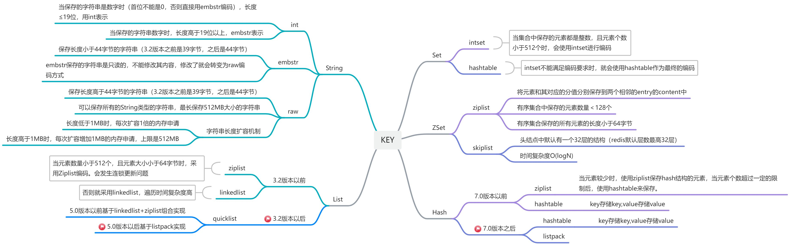

<!DOCTYPE HTML>
<html lang="zh-hans" >
    <head>
        <meta charset="UTF-8">
        <meta content="text/html; charset=utf-8" http-equiv="Content-Type">
        <title>Redis · H-Codes</title>
        <meta http-equiv="X-UA-Compatible" content="IE=edge" />
        <meta name="description" content="">
        <meta name="generator" content="GitBook 3.2.3">
        <meta name="author" content="HaoHaoDaYouXi">
        
        
    
    <link rel="stylesheet" href="../../../gitbook/style.css">

    
            
                
                <link rel="stylesheet" href="../../../gitbook/gitbook-plugin-highlight/website.css">
                
            
                
                <link rel="stylesheet" href="../../../gitbook/gitbook-plugin-search/search.css">
                
            
                
                <link rel="stylesheet" href="../../../gitbook/gitbook-plugin-fontsettings/website.css">
                
            
        

    

    
        
    
        
    
        
    
        
    
        
    
        
    

        
    
    
    <meta name="HandheldFriendly" content="true"/>
    <meta name="viewport" content="width=device-width, initial-scale=1, user-scalable=no">
    <meta name="apple-mobile-web-app-capable" content="yes">
    <meta name="apple-mobile-web-app-status-bar-style" content="black">
    <link rel="apple-touch-icon-precomposed" sizes="152x152" href="../../../gitbook/images/apple-touch-icon-precomposed-152.png">
    <link rel="shortcut icon" href="../../../gitbook/images/favicon.ico" type="image/x-icon">

    
    <link rel="next" href="../../../linux/soft/redis/redis.html" />
    
    
    <link rel="prev" href="../mysql/Mysql.html" />
    

    </head>
    <body>
        
<div class="book">
    <div class="book-summary">
        
            
<div id="book-search-input" role="search">
    <input type="text" placeholder="输入并搜索" />
</div>

            
                <nav role="navigation">
                


<ul class="summary">
    
    
    
        
        <li>
            <a href="https://github.com/HaoHaoDaYouXi/H-Notes" target="_blank" class="custom-link">我的笔记仓库</a>
        </li>
    
    

    
    <li class="divider"></li>
    

    
        
        
    
        <li class="chapter " data-level="1.1" data-path="../../../">
            
                <a href="../../../">
            
                    
                    前言
            
                </a>
            

            
        </li>
    
        <li class="chapter " data-level="1.2" data-path="../../">
            
                <a href="../../">
            
                    
                    Java
            
                </a>
            

            
            <ul class="articles">
                
    
        <li class="chapter " data-level="1.2.1" data-path="../jvm/jvm.html">
            
                <a href="../jvm/jvm.html">
            
                    
                    JVM
            
                </a>
            

            
            <ul class="articles">
                
    
        <li class="chapter " data-level="1.2.1.1" data-path="../jvm/jvm_memory.html">
            
                <a href="../jvm/jvm_memory.html">
            
                    
                    jvm内存区域都有哪些？
            
                </a>
            

            
            <ul class="articles">
                
    
        <li class="chapter " data-level="1.2.1.1.1" data-path="../jvm/jvm_memory.html">
            
                <a href="../jvm/jvm_memory.html#cxjsq">
            
                    
                    程序计数器
            
                </a>
            

            
        </li>
    
        <li class="chapter " data-level="1.2.1.1.2" data-path="../jvm/jvm_memory.html">
            
                <a href="../jvm/jvm_memory.html#xnjz">
            
                    
                    虚拟机栈
            
                </a>
            

            
        </li>
    
        <li class="chapter " data-level="1.2.1.1.3" data-path="../jvm/jvm_memory.html">
            
                <a href="../jvm/jvm_memory.html#bdffz">
            
                    
                    本地方法栈
            
                </a>
            

            
        </li>
    
        <li class="chapter " data-level="1.2.1.1.4" data-path="../jvm/jvm_memory.html">
            
                <a href="../jvm/jvm_memory.html#d">
            
                    
                    堆
            
                </a>
            

            
            <ul class="articles">
                
    
        <li class="chapter " data-level="1.2.1.1.4.1" data-path="../jvm/jvm_queue_stack_heap.html">
            
                <a href="../jvm/jvm_queue_stack_heap.html">
            
                    
                    堆栈的区别？队列和栈的区别？
            
                </a>
            

            
        </li>
    

            </ul>
            
        </li>
    
        <li class="chapter " data-level="1.2.1.1.5" data-path="../jvm/jvm_memory.html">
            
                <a href="../jvm/jvm_memory.html#ffq">
            
                    
                    方法区
            
                </a>
            

            
        </li>
    

            </ul>
            
        </li>
    
        <li class="chapter " data-level="1.2.1.2" data-path="../jvm/gc/gc.html">
            
                <a href="../jvm/gc/gc.html">
            
                    
                    Java垃圾回收机制(GC)？
            
                </a>
            

            
            <ul class="articles">
                
    
        <li class="chapter " data-level="1.2.1.2.1" data-path="../jvm/gc/which_garbage.html">
            
                <a href="../jvm/gc/which_garbage.html">
            
                    
                    如何确定哪些是垃圾
            
                </a>
            

            
        </li>
    
        <li class="chapter " data-level="1.2.1.2.2" data-path="../jvm/gc/algorithm.html">
            
                <a href="../jvm/gc/algorithm.html">
            
                    
                    垃圾回收算法
            
                </a>
            

            
            <ul class="articles">
                
    
        <li class="chapter " data-level="1.2.1.2.2.1" data-path="../jvm/gc/algorithm.html">
            
                <a href="../jvm/gc/algorithm.html#bjqcsf">
            
                    
                    标记清除算法
            
                </a>
            

            
        </li>
    
        <li class="chapter " data-level="1.2.1.2.2.2" data-path="../jvm/gc/algorithm.html">
            
                <a href="../jvm/gc/algorithm.html#fzsf">
            
                    
                    复制算法
            
                </a>
            

            
        </li>
    
        <li class="chapter " data-level="1.2.1.2.2.3" data-path="../jvm/gc/algorithm.html">
            
                <a href="../jvm/gc/algorithm.html#bjzlsf">
            
                    
                    标记整理算法
            
                </a>
            

            
        </li>
    
        <li class="chapter " data-level="1.2.1.2.2.4" data-path="../jvm/gc/algorithm.html">
            
                <a href="../jvm/gc/algorithm.html#fdhssf">
            
                    
                    分代回收算法
            
                </a>
            

            
        </li>
    

            </ul>
            
        </li>
    
        <li class="chapter " data-level="1.2.1.2.3" data-path="../jvm/gc/collector.html">
            
                <a href="../jvm/gc/collector.html">
            
                    
                    垃圾收集器都有哪些？
            
                </a>
            

            
            <ul class="articles">
                
    
        <li class="chapter " data-level="1.2.1.2.3.1" data-path="../jvm/gc/collector.html">
            
                <a href="../jvm/gc/collector.html#serial">
            
                    
                    Serial
            
                </a>
            

            
        </li>
    
        <li class="chapter " data-level="1.2.1.2.3.2" data-path="../jvm/gc/collector.html">
            
                <a href="../jvm/gc/collector.html#parnew">
            
                    
                    ParNew
            
                </a>
            

            
        </li>
    
        <li class="chapter " data-level="1.2.1.2.3.3" data-path="../jvm/gc/collector.html">
            
                <a href="../jvm/gc/collector.html#parallel_scavenge">
            
                    
                    Parallel Scavenge
            
                </a>
            

            
        </li>
    
        <li class="chapter " data-level="1.2.1.2.3.4" data-path="../jvm/gc/collector.html">
            
                <a href="../jvm/gc/collector.html#serial_old">
            
                    
                    Serial Old
            
                </a>
            

            
        </li>
    
        <li class="chapter " data-level="1.2.1.2.3.5" data-path="../jvm/gc/collector.html">
            
                <a href="../jvm/gc/collector.html#parallel_old">
            
                    
                    Parallel Old
            
                </a>
            

            
        </li>
    
        <li class="chapter " data-level="1.2.1.2.3.6" data-path="../jvm/gc/collector.html">
            
                <a href="../jvm/gc/collector.html#cms">
            
                    
                    CMS
            
                </a>
            

            
        </li>
    
        <li class="chapter " data-level="1.2.1.2.3.7" data-path="../jvm/gc/collector.html">
            
                <a href="../jvm/gc/collector.html#g1">
            
                    
                    G1
            
                </a>
            

            
        </li>
    

            </ul>
            
        </li>
    

            </ul>
            
        </li>
    
        <li class="chapter " data-level="1.2.1.3" data-path="../jvm/jvm_class_load.html">
            
                <a href="../jvm/jvm_class_load.html">
            
                    
                    jvm类加载
            
                </a>
            

            
        </li>
    
        <li class="chapter " data-level="1.2.1.4" data-path="../jvm/jvm_optimize.html">
            
                <a href="../jvm/jvm_optimize.html">
            
                    
                    jvm优化
            
                </a>
            

            
        </li>
    
        <li class="chapter " data-level="1.2.1.5" data-path="../jvm/jvm_memory_leak.html">
            
                <a href="../jvm/jvm_memory_leak.html">
            
                    
                    内存泄露、溢出
            
                </a>
            

            
            <ul class="articles">
                
    
        <li class="chapter " data-level="1.2.1.5.1" data-path="../jvm/jvm_memory_leak.html">
            
                <a href="../jvm/jvm_memory_leak.html#ncyccl">
            
                    
                    记一次内存泄露、溢出处理流程
            
                </a>
            

            
        </li>
    

            </ul>
            
        </li>
    

            </ul>
            
        </li>
    
        <li class="chapter " data-level="1.2.2" data-path="../java/java.html">
            
                <a href="../java/java.html">
            
                    
                    JAVA
            
                </a>
            

            
            <ul class="articles">
                
    
        <li class="chapter " data-level="1.2.2.1" data-path="../java/java.html">
            
                <a href="../java/java.html#java_ts">
            
                    
                    java的特色，它和其他语言的区别
            
                </a>
            

            
        </li>
    
        <li class="chapter " data-level="1.2.2.2" data-path="../java/java.html">
            
                <a href="../java/java.html#java_dt">
            
                    
                    java的多态、泛型、反射、注解、序列化
            
                </a>
            

            
        </li>
    
        <li class="chapter " data-level="1.2.2.3" data-path="../java/deep_shallow_copy.html">
            
                <a href="../java/deep_shallow_copy.html">
            
                    
                    深拷贝和浅拷贝
            
                </a>
            

            
        </li>
    
        <li class="chapter " data-level="1.2.2.4" data-path="../java/Proxy.html">
            
                <a href="../java/Proxy.html">
            
                    
                    代理
            
                </a>
            

            
            <ul class="articles">
                
    
        <li class="chapter " data-level="1.2.2.4.1" data-path="../java/Proxy.html">
            
                <a href="../java/Proxy.html#静态代理">
            
                    
                    静态代理
            
                </a>
            

            
        </li>
    
        <li class="chapter " data-level="1.2.2.4.2" data-path="../java/Proxy.html">
            
                <a href="../java/Proxy.html#动态代理">
            
                    
                    动态代理
            
                </a>
            

            
        </li>
    
        <li class="chapter " data-level="1.2.2.4.3" data-path="../java/Proxy.html">
            
                <a href="../java/Proxy.html#cglib">
            
                    
                    CGlib
            
                </a>
            

            
        </li>
    

            </ul>
            
        </li>
    
        <li class="chapter " data-level="1.2.2.5" data-path="../java/exception.html">
            
                <a href="../java/exception.html">
            
                    
                    异常
            
                </a>
            

            
        </li>
    
        <li class="chapter " data-level="1.2.2.6" data-path="../java/io.html">
            
                <a href="../java/io.html">
            
                    
                    I/O流
            
                </a>
            

            
            <ul class="articles">
                
    
        <li class="chapter " data-level="1.2.2.6.1" data-path="../java/io.html">
            
                <a href="../java/io.html#io_mx">
            
                    
                    IO的模型
            
                </a>
            

            
        </li>
    
        <li class="chapter " data-level="1.2.2.6.2" data-path="../java/io.html">
            
                <a href="../java/io.html#bio_nio_aio">
            
                    
                    BIO、NIO、AIO
            
                </a>
            

            
        </li>
    
        <li class="chapter " data-level="1.2.2.6.3" data-path="../java/io.html">
            
                <a href="../java/io.html#io_sycj">
            
                    
                    IO的使用场景
            
                </a>
            

            
        </li>
    

            </ul>
            
        </li>
    
        <li class="chapter " data-level="1.2.2.7" data-path="../java/collection.html">
            
                <a href="../java/collection.html">
            
                    
                    集合
            
                </a>
            

            
            <ul class="articles">
                
    
        <li class="chapter " data-level="1.2.2.7.1" data-path="../java/collection.html">
            
                <a href="../java/collection.html#jh_szdqb">
            
                    
                    List，Set，Queue，Map四者的区别？
            
                </a>
            

            
        </li>
    
        <li class="chapter " data-level="1.2.2.7.2" data-path="../java/collection.html">
            
                <a href="../java/collection.html#jh_hashmap">
            
                    
                    HashMap
            
                </a>
            

            
            <ul class="articles">
                
    
        <li class="chapter " data-level="1.2.2.7.2.1" data-path="../java/collection.html">
            
                <a href="../java/collection.html#fzyz">
            
                    
                    负载因子为什么是0.75？
            
                </a>
            

            
        </li>
    

            </ul>
            
        </li>
    
        <li class="chapter " data-level="1.2.2.7.3" data-path="../java/collection.html">
            
                <a href="../java/collection.html#jh_concurrenthashmap">
            
                    
                    ConcurrentHashMap
            
                </a>
            

            
            <ul class="articles">
                
    
        <li class="chapter " data-level="1.2.2.7.3.1" data-path="../java/collection.html">
            
                <a href="../java/collection.html#segment">
            
                    
                    Segment段
            
                </a>
            

            
        </li>
    
        <li class="chapter " data-level="1.2.2.7.3.2" data-path="../java/collection.html">
            
                <a href="../java/collection.html#java8_before">
            
                    
                    Java8之前
            
                </a>
            

            
        </li>
    
        <li class="chapter " data-level="1.2.2.7.3.3" data-path="../java/collection.html">
            
                <a href="../java/collection.html#java8_after">
            
                    
                    Java8之后
            
                </a>
            

            
        </li>
    

            </ul>
            
        </li>
    
        <li class="chapter " data-level="1.2.2.7.4" data-path="../java/queue.html">
            
                <a href="../java/queue.html">
            
                    
                    Queue
            
                </a>
            

            
            <ul class="articles">
                
    
        <li class="chapter " data-level="1.2.2.7.4.1" data-path="../java/queue.html">
            
                <a href="../java/queue.html#queue">
            
                    
                    Queue
            
                </a>
            

            
        </li>
    
        <li class="chapter " data-level="1.2.2.7.4.2" data-path="../java/queue.html">
            
                <a href="../java/queue.html#deque">
            
                    
                    Deque
            
                </a>
            

            
        </li>
    
        <li class="chapter " data-level="1.2.2.7.4.3" data-path="../java/queue.html">
            
                <a href="../java/queue.html#priorityqueue">
            
                    
                    PriorityQueue
            
                </a>
            

            
        </li>
    
        <li class="chapter " data-level="1.2.2.7.4.4" data-path="../java/queue.html">
            
                <a href="../java/queue.html#blockingqueue">
            
                    
                    BlockingQueue
            
                </a>
            

            
            <ul class="articles">
                
    
        <li class="chapter " data-level="1.2.2.7.4.4.1" data-path="../java/queue.html">
            
                <a href="../java/queue.html#arrayblockingqueue">
            
                    
                    ArrayBlockingQueue
            
                </a>
            

            
        </li>
    
        <li class="chapter " data-level="1.2.2.7.4.4.2" data-path="../java/queue.html">
            
                <a href="../java/queue.html#linkedblockingqueue">
            
                    
                    LinkedBlockingQueue
            
                </a>
            

            
        </li>
    
        <li class="chapter " data-level="1.2.2.7.4.4.3" data-path="../java/queue.html">
            
                <a href="../java/queue.html#priorityblockingqueue">
            
                    
                    PriorityBlockingQueue
            
                </a>
            

            
        </li>
    
        <li class="chapter " data-level="1.2.2.7.4.4.4" data-path="../java/queue.html">
            
                <a href="../java/queue.html#delayqueue">
            
                    
                    DelayQueue
            
                </a>
            

            
        </li>
    
        <li class="chapter " data-level="1.2.2.7.4.4.5" data-path="../java/queue.html">
            
                <a href="../java/queue.html#synchronousqueue">
            
                    
                    SynchronousQueue
            
                </a>
            

            
        </li>
    
        <li class="chapter " data-level="1.2.2.7.4.4.6" data-path="../java/queue.html">
            
                <a href="../java/queue.html#linkedtransferqueue">
            
                    
                    LinkedTransferQueue
            
                </a>
            

            
        </li>
    
        <li class="chapter " data-level="1.2.2.7.4.4.7" data-path="../java/queue.html">
            
                <a href="../java/queue.html#linkedblockingdeque">
            
                    
                    LinkedBlockingDeque
            
                </a>
            

            
        </li>
    

            </ul>
            
        </li>
    

            </ul>
            
        </li>
    

            </ul>
            
        </li>
    
        <li class="chapter " data-level="1.2.2.8" data-path="../java/lock.html">
            
                <a href="../java/lock.html">
            
                    
                    锁Lock
            
                </a>
            

            
            <ul class="articles">
                
    
        <li class="chapter " data-level="1.2.2.8.1" data-path="../java/lock.html">
            
                <a href="../java/lock.html#lgs">
            
                    
                    乐观锁和悲观锁
            
                </a>
            

            
        </li>
    
        <li class="chapter " data-level="1.2.2.8.2" data-path="../java/lock.html">
            
                <a href="../java/lock.html#zxs">
            
                    
                    自旋锁
            
                </a>
            

            
        </li>
    
        <li class="chapter " data-level="1.2.2.8.3" data-path="../java/lock.html">
            
                <a href="../java/lock.html#tbs">
            
                    
                    Synchronized同步锁
            
                </a>
            

            
        </li>
    
        <li class="chapter " data-level="1.2.2.8.4" data-path="../java/lock.html">
            
                <a href="../java/lock.html#reentrantlock">
            
                    
                    ReentrantLock可重入锁
            
                </a>
            

            
        </li>
    
        <li class="chapter " data-level="1.2.2.8.5" data-path="../java/lock.html">
            
                <a href="../java/lock.html#atomicInteger">
            
                    
                    AtomicInteger
            
                </a>
            

            
        </li>
    
        <li class="chapter " data-level="1.2.2.8.6" data-path="../java/lock.html">
            
                <a href="../java/lock.html#semaphore">
            
                    
                    Semaphore信号量
            
                </a>
            

            
        </li>
    
        <li class="chapter " data-level="1.2.2.8.7" data-path="../java/lock.html">
            
                <a href="../java/lock.html#kcrs">
            
                    
                    可重入锁(递归锁)
            
                </a>
            

            
        </li>
    
        <li class="chapter " data-level="1.2.2.8.8" data-path="../java/lock.html">
            
                <a href="../java/lock.html#gps_fgps">
            
                    
                    公平锁和非公平锁
            
                </a>
            

            
        </li>
    
        <li class="chapter " data-level="1.2.2.8.9" data-path="../java/lock.html">
            
                <a href="../java/lock.html#dxs">
            
                    
                    ReadWriterLock读写锁
            
                </a>
            

            
        </li>
    
        <li class="chapter " data-level="1.2.2.8.10" data-path="../java/lock.html">
            
                <a href="../java/lock.html#gxs_dzs">
            
                    
                    共享锁和独占锁
            
                </a>
            

            
        </li>
    
        <li class="chapter " data-level="1.2.2.8.11" data-path="../java/lock.html">
            
                <a href="../java/lock.html#sdzt">
            
                    
                    锁的状态
            
                </a>
            

            
            <ul class="articles">
                
    
        <li class="chapter " data-level="1.2.2.8.11.1" data-path="../java/lock.html">
            
                <a href="../java/lock.html#pxs">
            
                    
                    偏向锁
            
                </a>
            

            
        </li>
    
        <li class="chapter " data-level="1.2.2.8.11.2" data-path="../java/lock.html">
            
                <a href="../java/lock.html#qljs">
            
                    
                    轻量级锁
            
                </a>
            

            
        </li>
    
        <li class="chapter " data-level="1.2.2.8.11.3" data-path="../java/lock.html">
            
                <a href="../java/lock.html#zljs">
            
                    
                    重量级锁
            
                </a>
            

            
        </li>
    

            </ul>
            
        </li>
    
        <li class="chapter " data-level="1.2.2.8.12" data-path="../java/lock.html">
            
                <a href="../java/lock.html#fds">
            
                    
                    分段锁
            
                </a>
            

            
        </li>
    
        <li class="chapter " data-level="1.2.2.8.13" data-path="../java/lock.html">
            
                <a href="../java/lock.html#fbss">
            
                    
                    分布式锁
            
                </a>
            

            
            <ul class="articles">
                
    
        <li class="chapter " data-level="1.2.2.8.13.1" data-path="redis_lock.html">
            
                <a href="redis_lock.html">
            
                    
                    Redis分布式锁
            
                </a>
            

            
            <ul class="articles">
                
    
        <li class="chapter " data-level="1.2.2.8.13.1.1" data-path="redis_lock.html">
            
                <a href="redis_lock.html#redis">
            
                    
                    Redis实现
            
                </a>
            

            
        </li>
    
        <li class="chapter " data-level="1.2.2.8.13.1.2" data-path="redis_lock.html">
            
                <a href="redis_lock.html#redisson">
            
                    
                    Redisson实现
            
                </a>
            

            
        </li>
    

            </ul>
            
        </li>
    

            </ul>
            
        </li>
    
        <li class="chapter " data-level="1.2.2.8.14" data-path="../java/lock.html">
            
                <a href="../java/lock.html#sdyh">
            
                    
                    锁的优化
            
                </a>
            

            
        </li>
    
        <li class="chapter " data-level="1.2.2.8.15" data-path="../java/lock.html">
            
                <a href="../java/lock.html#cas">
            
                    
                    CAS（比较并交换-乐观锁机制-锁自旋）
            
                </a>
            

            
            <ul class="articles">
                
    
        <li class="chapter " data-level="1.2.2.8.15.1" data-path="../java/lock.html">
            
                <a href="../java/lock.html#atomic">
            
                    
                    原子包java.util.concurrent.atomic（锁自旋）
            
                </a>
            

            
        </li>
    
        <li class="chapter " data-level="1.2.2.8.15.2" data-path="../java/lock.html">
            
                <a href="../java/lock.html#aba">
            
                    
                    ABA问题
            
                </a>
            

            
        </li>
    

            </ul>
            
        </li>
    
        <li class="chapter " data-level="1.2.2.8.16" data-path="../java/lock.html">
            
                <a href="../java/lock.html#aqs">
            
                    
                    AQS（抽象的队列同步器）
            
                </a>
            

            
        </li>
    

            </ul>
            
        </li>
    
        <li class="chapter " data-level="1.2.2.9" data-path="../java/thread.html">
            
                <a href="../java/thread.html">
            
                    
                    线程
            
                </a>
            

            
            <ul class="articles">
                
    
        <li class="chapter " data-level="1.2.2.9.1" data-path="../java/thread.html">
            
                <a href="../java/thread.html#xc_jc">
            
                    
                    线程和进程
            
                </a>
            

            
        </li>
    
        <li class="chapter " data-level="1.2.2.9.2" data-path="../java/thread.html">
            
                <a href="../java/thread.html#xc_smzq">
            
                    
                    线程的生命周期
            
                </a>
            

            
        </li>
    
        <li class="chapter " data-level="1.2.2.9.3" data-path="../java/thread.html">
            
                <a href="../java/thread.html#xc_zt">
            
                    
                    线程的状态
            
                </a>
            

            
        </li>
    
        <li class="chapter " data-level="1.2.2.9.4" data-path="../java/thread.html">
            
                <a href="../java/thread.html#xc_sx">
            
                    
                    线程的实现
            
                </a>
            

            
        </li>
    
        <li class="chapter " data-level="1.2.2.9.5" data-path="../java/thread.html">
            
                <a href="../java/thread.html#xc_xcc">
            
                    
                    线程池
            
                </a>
            

            
        </li>
    
        <li class="chapter " data-level="1.2.2.9.6" data-path="../java/thread.html">
            
                <a href="../java/thread.html#xc_start_run">
            
                    
                    start和run的区别
            
                </a>
            

            
        </li>
    
        <li class="chapter " data-level="1.2.2.9.7" data-path="../java/thread.html">
            
                <a href="../java/thread.html#xc_sleep_wait">
            
                    
                    sleep和wait的区别
            
                </a>
            

            
        </li>
    
        <li class="chapter " data-level="1.2.2.9.8" data-path="../java/thread.html">
            
                <a href="../java/thread.html#xc_htxc">
            
                    
                    后台线程
            
                </a>
            

            
        </li>
    
        <li class="chapter " data-level="1.2.2.9.9" data-path="../java/thread.html">
            
                <a href="../java/thread.html#xc_gxsj">
            
                    
                    线程共享数据
            
                </a>
            

            
        </li>
    
        <li class="chapter " data-level="1.2.2.9.10" data-path="../java/thread.html">
            
                <a href="../java/thread.html#xc_xcdd_ddsf">
            
                    
                    线程调度和调度算法
            
                </a>
            

            
        </li>
    
        <li class="chapter " data-level="1.2.2.9.11" data-path="../java/thread.html">
            
                <a href="../java/thread.html#threadlocal">
            
                    
                    ThreadLocal
            
                </a>
            

            
            <ul class="articles">
                
    
        <li class="chapter " data-level="1.2.2.9.11.1" data-path="../java/thread.html">
            
                <a href="../java/thread.html#threadlocal_map">
            
                    
                    ThreadLocalMap
            
                </a>
            

            
        </li>
    
        <li class="chapter " data-level="1.2.2.9.11.2" data-path="../java/thread.html">
            
                <a href="../java/thread.html#threadlocal_sycj">
            
                    
                    使用场景
            
                </a>
            

            
        </li>
    

            </ul>
            
        </li>
    

            </ul>
            
        </li>
    
        <li class="chapter " data-level="1.2.2.10" data-path="../java/VirtualThread.html">
            
                <a href="../java/VirtualThread.html">
            
                    
                    虚拟线程
            
                </a>
            

            
        </li>
    
        <li class="chapter " data-level="1.2.2.11" data-path="../java/coroutine.html">
            
                <a href="../java/coroutine.html">
            
                    
                    协程
            
                </a>
            

            
        </li>
    

            </ul>
            
        </li>
    
        <li class="chapter " data-level="1.2.3" data-path="../devise/devise.html">
            
                <a href="../devise/devise.html">
            
                    
                    设计模式和原则
            
                </a>
            

            
            <ul class="articles">
                
    
        <li class="chapter " data-level="1.2.3.1" data-path="../devise/devise.html">
            
                <a href="../devise/devise.html#sjms">
            
                    
                    设计模式
            
                </a>
            

            
            <ul class="articles">
                
    
        <li class="chapter " data-level="1.2.3.1.1" data-path="../devise/devise.html">
            
                <a href="../devise/devise.html#cjx">
            
                    
                    创建型模式
            
                </a>
            

            
        </li>
    
        <li class="chapter " data-level="1.2.3.1.2" data-path="../devise/devise.html">
            
                <a href="../devise/devise.html#jgx">
            
                    
                    结构型模式
            
                </a>
            

            
        </li>
    
        <li class="chapter " data-level="1.2.3.1.3" data-path="../devise/devise.html">
            
                <a href="../devise/devise.html#xwx">
            
                    
                    行为型模式
            
                </a>
            

            
        </li>
    

            </ul>
            
        </li>
    
        <li class="chapter " data-level="1.2.3.2" data-path="../devise/devise.html">
            
                <a href="../devise/devise.html#sjyz">
            
                    
                    设计原则
            
                </a>
            

            
        </li>
    

            </ul>
            
        </li>
    
        <li class="chapter " data-level="1.2.4" data-path="../spring/spring.html">
            
                <a href="../spring/spring.html">
            
                    
                    Spring
            
                </a>
            

            
            <ul class="articles">
                
    
        <li class="chapter " data-level="1.2.4.1" data-path="../spring/spring.html">
            
                <a href="../spring/spring.html#spring_td">
            
                    
                    Spring的特点
            
                </a>
            

            
        </li>
    
        <li class="chapter " data-level="1.2.4.2" data-path="../spring/spring.html">
            
                <a href="../spring/spring.html#spring_hxzj">
            
                    
                    Spring的核心组件
            
                </a>
            

            
        </li>
    
        <li class="chapter " data-level="1.2.4.3" data-path="../spring/spring.html">
            
                <a href="../spring/spring.html#spring_cymk">
            
                    
                    Spring的常用模块
            
                </a>
            

            
        </li>
    
        <li class="chapter " data-level="1.2.4.4" data-path="../spring/spring.html">
            
                <a href="../spring/spring.html#spring_sjms">
            
                    
                    Spring框架使用的设计模式
            
                </a>
            

            
        </li>
    
        <li class="chapter " data-level="1.2.4.5" data-path="../spring/spring.html">
            
                <a href="../spring/spring.html#spring_cyzj">
            
                    
                    Spring常用的注解
            
                </a>
            

            
        </li>
    
        <li class="chapter " data-level="1.2.4.6" data-path="../spring/bean.html">
            
                <a href="../spring/bean.html">
            
                    
                    Bean
            
                </a>
            

            
            <ul class="articles">
                
    
        <li class="chapter " data-level="1.2.4.6.1" data-path="../spring/bean.html">
            
                <a href="../spring/bean.html#component">
            
                    
                    @Component
            
                </a>
            

            
        </li>
    
        <li class="chapter " data-level="1.2.4.6.2" data-path="../spring/bean.html">
            
                <a href="../spring/bean.html#bean_zyy">
            
                    
                    Bean的作用域
            
                </a>
            

            
        </li>
    
        <li class="chapter " data-level="1.2.4.6.3" data-path="../spring/bean.html">
            
                <a href="../spring/bean.html#bean_smzq">
            
                    
                    Bean的生命周期
            
                </a>
            

            
        </li>
    
        <li class="chapter " data-level="1.2.4.6.4" data-path="../spring/bean.html">
            
                <a href="../spring/bean.html#bean_zrfs">
            
                    
                    Bean注入的实现方式
            
                </a>
            

            
        </li>
    
        <li class="chapter " data-level="1.2.4.6.5" data-path="../spring/bean.html">
            
                <a href="../spring/bean.html#zdzp">
            
                    
                    5种不同方式的自动装配
            
                </a>
            

            
        </li>
    

            </ul>
            
        </li>
    
        <li class="chapter " data-level="1.2.4.7" data-path="../spring/spring_ioc.html">
            
                <a href="../spring/spring_ioc.html">
            
                    
                    Spring的IOC
            
                </a>
            

            
            <ul class="articles">
                
    
        <li class="chapter " data-level="1.2.4.7.1" data-path="../spring/spring_ioc.html">
            
                <a href="../spring/spring_ioc.html">
            
                    
                    IOC的原理
            
                </a>
            

            
        </li>
    
        <li class="chapter " data-level="1.2.4.7.2" data-path="../spring/spring_ioc.html">
            
                <a href="../spring/spring_ioc.html#ioc_rqsx">
            
                    
                    IOC的实现
            
                </a>
            

            
        </li>
    

            </ul>
            
        </li>
    
        <li class="chapter " data-level="1.2.4.8" data-path="../spring/spring_aop.html">
            
                <a href="../spring/spring_aop.html">
            
                    
                    Spring的AOP
            
                </a>
            

            
            <ul class="articles">
                
    
        <li class="chapter " data-level="1.2.4.8.1" data-path="../spring/spring_aop.html">
            
                <a href="../spring/spring_aop.html#aophxgn">
            
                    
                    AOP 核心概念
            
                </a>
            

            
        </li>
    
        <li class="chapter " data-level="1.2.4.8.2" data-path="../spring/spring_aop.html">
            
                <a href="../spring/spring_aop.html#aopdlfs">
            
                    
                    AOP 代理方式
            
                </a>
            

            
        </li>
    
        <li class="chapter " data-level="1.2.4.8.3" data-path="../spring/spring_aop.html">
            
                <a href="../spring/spring_aop.html#aopsx">
            
                    
                    AOP 实现
            
                </a>
            

            
        </li>
    
        <li class="chapter " data-level="1.2.4.8.4" data-path="../spring/spring_aop.html">
            
                <a href="../spring/spring_aop.html#aspectJ">
            
                    
                    AspectJ
            
                </a>
            

            
            <ul class="articles">
                
    
        <li class="chapter " data-level="1.2.4.8.4.1" data-path="../spring/spring_aop.html">
            
                <a href="../spring/spring_aop.html#aspectJ_spring">
            
                    
                    Spring AOP和AspectJ AOP
            
                </a>
            

            
        </li>
    
        <li class="chapter " data-level="1.2.4.8.4.2" data-path="../spring/spring_aop.html">
            
                <a href="../spring/spring_aop.html#aspectJ_tzlx">
            
                    
                    AspectJ定义的通知类型
            
                </a>
            

            
        </li>
    
        <li class="chapter " data-level="1.2.4.8.4.3" data-path="../spring/spring_aop.html">
            
                <a href="../spring/spring_aop.html#dgqmdzxsx">
            
                    
                    多个切面的执行顺序
            
                </a>
            

            
        </li>
    

            </ul>
            
        </li>
    

            </ul>
            
        </li>
    
        <li class="chapter " data-level="1.2.4.9" data-path="../spring/spring_jzgc.html">
            
                <a href="../spring/spring_jzgc.html">
            
                    
                    Spring 加载过程
            
                </a>
            

            
        </li>
    

            </ul>
            
        </li>
    
        <li class="chapter " data-level="1.2.5" data-path="../spring_boot/spring_boot.html">
            
                <a href="../spring_boot/spring_boot.html">
            
                    
                    Spring Boot
            
                </a>
            

            
            <ul class="articles">
                
    
        <li class="chapter " data-level="1.2.5.1" data-path="../spring_boot/spring_boot.html">
            
                <a href="../spring_boot/spring_boot.html#td">
            
                    
                    Spring Boot特点
            
                </a>
            

            
        </li>
    
        <li class="chapter " data-level="1.2.5.2" data-path="../spring_boot/spring_boot.html">
            
                <a href="../spring_boot/spring_boot.html#ydyypz">
            
                    
                    Spring Boot 约定优于配置
            
                </a>
            

            
        </li>
    
        <li class="chapter " data-level="1.2.5.3" data-path="../spring_boot/spring_boot.html">
            
                <a href="../spring_boot/spring_boot.html#cshhjbl">
            
                    
                    Spring Boot 初始化环境变量
            
                </a>
            

            
        </li>
    
        <li class="chapter " data-level="1.2.5.4" data-path="../spring_boot/spring_boot.html">
            
                <a href="../spring_boot/spring_boot.html#smlc">
            
                    
                    Spring Boot 扫描流程
            
                </a>
            

            
        </li>
    
        <li class="chapter " data-level="1.2.5.5" data-path="../spring_boot/spring_boot.html">
            
                <a href="../spring_boot/spring_boot.html#pzjzsx">
            
                    
                    Spring Boot 配置加载顺序
            
                </a>
            

            
        </li>
    
        <li class="chapter " data-level="1.2.5.6" data-path="../spring_boot/spring_boot.html">
            
                <a href="../spring_boot/spring_boot.html#pzjzsx">
            
                    
                    Spring Boot 多套不同环境配置
            
                </a>
            

            
        </li>
    
        <li class="chapter " data-level="1.2.5.7" data-path="../spring_boot/spring_boot.html">
            
                <a href="../spring_boot/spring_boot.html#hxpzwj">
            
                    
                    Spring Boot 核心配置
            
                </a>
            

            
        </li>
    
        <li class="chapter " data-level="1.2.5.8" data-path="../spring_boot/spring_boot.html">
            
                <a href="../spring_boot/spring_boot.html#hxzj">
            
                    
                    Spring Boot 核心注解
            
                </a>
            

            
        </li>
    
        <li class="chapter " data-level="1.2.5.9" data-path="../spring_boot/spring_boot.html">
            
                <a href="../spring_boot/spring_boot.html#sxlbs">
            
                    
                    Spring Boot 实现热部署
            
                </a>
            

            
        </li>
    
        <li class="chapter " data-level="1.2.5.10" data-path="../spring_boot/spring_boot.html">
            
                <a href="../spring_boot/spring_boot.html#zdpzyl">
            
                    
                    Spring Boot 自动配置原理
            
                </a>
            

            
        </li>
    
        <li class="chapter " data-level="1.2.5.11" >
            
                <a target="_blank" href="https://github.com/HaoHaoDaYouXi/springboot_netty">
            
                    
                    Spring Boot+Netty
            
                </a>
            

            
        </li>
    

            </ul>
            
        </li>
    
        <li class="chapter " data-level="1.2.6" data-path="../jpa/jpa.html">
            
                <a href="../jpa/jpa.html">
            
                    
                    Spring Data JPA
            
                </a>
            

            
            <ul class="articles">
                
    
        <li class="chapter " data-level="1.2.6.1" data-path="../jpa/jpa.html">
            
                <a href="../jpa/jpa.html#cbxw">
            
                    
                    Spring事物的传播行为
            
                </a>
            

            
        </li>
    
        <li class="chapter " data-level="1.2.6.2" data-path="../jpa/jpa.html">
            
                <a href="../jpa/jpa.html#gljb">
            
                    
                    事物的隔离级别
            
                </a>
            

            
        </li>
    
        <li class="chapter " data-level="1.2.6.3" data-path="../jpa/jpa.html">
            
                <a href="../jpa/jpa.html#glsw">
            
                    
                    Spring管理事务
            
                </a>
            

            
        </li>
    
        <li class="chapter " data-level="1.2.6.4" data-path="../jpa/jpa.html">
            
                <a href="../jpa/jpa.html#sxfs">
            
                    
                    事物的实现方式
            
                </a>
            

            
            <ul class="articles">
                
    
        <li class="chapter " data-level="1.2.6.4.1" data-path="../jpa/jpa.html">
            
                <a href="../jpa/jpa.html#bdsw">
            
                    
                    本地事务
            
                </a>
            

            
        </li>
    
        <li class="chapter " data-level="1.2.6.4.2" data-path="../jpa/jpa.html">
            
                <a href="../jpa/jpa.html#fbssw">
            
                    
                    分布式事物
            
                </a>
            

            
            <ul class="articles">
                
    
        <li class="chapter " data-level="1.2.6.4.2.1" data-path="../jpa/jpa.html">
            
                <a href="../jpa/jpa.html#ljdtj">
            
                    
                    两阶段提交
            
                </a>
            

            
        </li>
    

            </ul>
            
        </li>
    
        <li class="chapter " data-level="1.2.6.4.3" data-path="../jpa/jpa.html">
            
                <a href="../jpa/jpa.html#xmlpz">
            
                    
                    xml配置
            
                </a>
            

            
        </li>
    
        <li class="chapter " data-level="1.2.6.4.4" data-path="../jpa/jpa.html">
            
                <a href="../jpa/jpa.html#transactional">
            
                    
                    @Transactional注解
            
                </a>
            

            
        </li>
    
        <li class="chapter " data-level="1.2.6.4.5" data-path="../jpa/jpa.html">
            
                <a href="../jpa/jpa.html#transactional_sx">
            
                    
                    @Transactional属性
            
                </a>
            

            
        </li>
    
        <li class="chapter " data-level="1.2.6.4.6" data-path="../jpa/jpa.html">
            
                <a href="../jpa/jpa.html#transactional_sxcj">
            
                    
                    @Transactional失效场景
            
                </a>
            

            
        </li>
    

            </ul>
            
        </li>
    

            </ul>
            
        </li>
    
        <li class="chapter " data-level="1.2.7" data-path="../spring_cloud/wfw.html">
            
                <a href="../spring_cloud/wfw.html">
            
                    
                    微服务
            
                </a>
            

            
            <ul class="articles">
                
    
        <li class="chapter " data-level="1.2.7.1" data-path="../spring_cloud/wfw.html">
            
                <a href="../spring_cloud/wfw.html#分布式">
            
                    
                    分布式
            
                </a>
            

            
            <ul class="articles">
                
    
        <li class="chapter " data-level="1.2.7.1.1" data-path="../other/cap_base.html">
            
                <a href="../other/cap_base.html#cap">
            
                    
                    CAP理论
            
                </a>
            

            
        </li>
    
        <li class="chapter " data-level="1.2.7.1.2" data-path="../other/cap_base.html">
            
                <a href="../other/cap_base.html#base">
            
                    
                    BASE理论
            
                </a>
            

            
        </li>
    

            </ul>
            
        </li>
    
        <li class="chapter " data-level="1.2.7.2" data-path="../spring_cloud/wfw.html">
            
                <a href="../spring_cloud/wfw.html#微服务架构">
            
                    
                    微服务架构
            
                </a>
            

            
        </li>
    
        <li class="chapter " data-level="1.2.7.3" data-path="../spring_cloud/wfw.html">
            
                <a href="../spring_cloud/wfw.html#微服务的优缺点">
            
                    
                    微服务的优缺点
            
                </a>
            

            
        </li>
    
        <li class="chapter " data-level="1.2.7.4" data-path="../spring_cloud/wfw.html">
            
                <a href="../spring_cloud/wfw.html#微服务的技术栈">
            
                    
                    微服务的技术栈
            
                </a>
            

            
            <ul class="articles">
                
    
        <li class="chapter " data-level="1.2.7.4.1" data-path="../spring_cloud/wfw.html">
            
                <a href="../spring_cloud/wfw.html#服务注册与发现">
            
                    
                    服务注册发现
            
                </a>
            

            
        </li>
    
        <li class="chapter " data-level="1.2.7.4.2" data-path="../spring_cloud/wfw.html">
            
                <a href="../spring_cloud/wfw.html#服务配置与管理">
            
                    
                    服务配置与管理
            
                </a>
            

            
        </li>
    
        <li class="chapter " data-level="1.2.7.4.3" data-path="../spring_cloud/wfw.html">
            
                <a href="../spring_cloud/wfw.html#服务调用">
            
                    
                    服务调用
            
                </a>
            

            
        </li>
    
        <li class="chapter " data-level="1.2.7.4.4" data-path="../spring_cloud/wfw.html">
            
                <a href="../spring_cloud/wfw.html#API网关">
            
                    
                    API网关
            
                </a>
            

            
        </li>
    
        <li class="chapter " data-level="1.2.7.4.5" data-path="../spring_cloud/wfw.html">
            
                <a href="../spring_cloud/wfw.html#负载均衡">
            
                    
                    负载均衡
            
                </a>
            

            
        </li>
    
        <li class="chapter " data-level="1.2.7.4.6" data-path="../spring_cloud/wfw.html">
            
                <a href="../spring_cloud/wfw.html#熔断器">
            
                    
                    熔断器
            
                </a>
            

            
        </li>
    

            </ul>
            
        </li>
    
        <li class="chapter " data-level="1.2.7.5" data-path="../spring_cloud/spring_cloud.html">
            
                <a href="../spring_cloud/spring_cloud.html">
            
                    
                    SpringCloud
            
                </a>
            

            
            <ul class="articles">
                
    
        <li class="chapter " data-level="1.2.7.5.1" data-path="../spring_cloud/spring_cloud.html">
            
                <a href="../spring_cloud/spring_cloud.html#springboot和springcloud的区别">
            
                    
                    SpringBoot和SpringCloud的区别
            
                </a>
            

            
        </li>
    

            </ul>
            
        </li>
    
        <li class="chapter " data-level="1.2.7.6" data-path="../spring_cloud/spring_cloud_alibaba.html">
            
                <a href="../spring_cloud/spring_cloud_alibaba.html">
            
                    
                    SpringCloudAlibaba
            
                </a>
            

            
        </li>
    
        <li class="chapter " data-level="1.2.7.7" data-path="../spring_cloud/eureka.html">
            
                <a href="../spring_cloud/eureka.html">
            
                    
                    Eureka
            
                </a>
            

            
            <ul class="articles">
                
    
        <li class="chapter " data-level="1.2.7.7.1" data-path="../spring_cloud/eureka.html">
            
                <a href="../spring_cloud/eureka.html#server">
            
                    
                    Eureka Server
            
                </a>
            

            
        </li>
    
        <li class="chapter " data-level="1.2.7.7.2" data-path="../spring_cloud/eureka.html">
            
                <a href="../spring_cloud/eureka.html#client">
            
                    
                    Eureka Client
            
                </a>
            

            
        </li>
    

            </ul>
            
        </li>
    
        <li class="chapter " data-level="1.2.7.8" data-path="../spring_cloud/zookeeper.html">
            
                <a href="../spring_cloud/zookeeper.html">
            
                    
                    Zookeeper
            
                </a>
            

            
            <ul class="articles">
                
    
        <li class="chapter " data-level="1.2.7.8.1" data-path="../spring_cloud/zookeeper.html">
            
                <a href="../spring_cloud/zookeeper.html#wjxt">
            
                    
                    Zookeeper 文件系统
            
                </a>
            

            
        </li>
    
        <li class="chapter " data-level="1.2.7.8.2" data-path="../spring_cloud/zookeeper.html">
            
                <a href="../spring_cloud/zookeeper.html#tzjz">
            
                    
                    Zookeeper 通知机制
            
                </a>
            

            
        </li>
    
        <li class="chapter " data-level="1.2.7.8.3" data-path="../spring_cloud/zookeeper.html">
            
                <a href="../spring_cloud/zookeeper.html#tzjztd">
            
                    
                    Zookeeper 通知机制的特点
            
                </a>
            

            
        </li>
    
        <li class="chapter " data-level="1.2.7.8.4" data-path="../spring_cloud/zookeeper.html">
            
                <a href="../spring_cloud/zookeeper.html#znode">
            
                    
                    Zookeeper节点ZNode和相关属性
            
                </a>
            

            
        </li>
    
        <li class="chapter " data-level="1.2.7.8.5" data-path="../spring_cloud/zookeeper.html">
            
                <a href="../spring_cloud/zookeeper.html#jqjs">
            
                    
                    Zookeeper 集群中的角色
            
                </a>
            

            
        </li>
    
        <li class="chapter " data-level="1.2.7.8.6" data-path="../spring_cloud/zookeeper.html">
            
                <a href="../spring_cloud/zookeeper.html#gzzt">
            
                    
                    Zookeeper 集群中Server工作状态
            
                </a>
            

            
        </li>
    
        <li class="chapter " data-level="1.2.7.8.7" data-path="../spring_cloud/zookeeper.html">
            
                <a href="../spring_cloud/zookeeper.html#fwqtx">
            
                    
                    Zookeeper 集群中服务器之间通信
            
                </a>
            

            
        </li>
    
        <li class="chapter " data-level="1.2.7.8.8" data-path="../spring_cloud/zookeeper.html">
            
                <a href="../spring_cloud/zookeeper.html#zab">
            
                    
                    ZAB 协议
            
                </a>
            

            
            <ul class="articles">
                
    
        <li class="chapter " data-level="1.2.7.8.8.1" data-path="../spring_cloud/zookeeper.html">
            
                <a href="../spring_cloud/zookeeper.html#zxid">
            
                    
                    事务编号Zxid
            
                </a>
            

            
        </li>
    
        <li class="chapter " data-level="1.2.7.8.8.2" data-path="../spring_cloud/zookeeper.html">
            
                <a href="../spring_cloud/zookeeper.html#epoch">
            
                    
                    epoch
            
                </a>
            

            
        </li>
    
        <li class="chapter " data-level="1.2.7.8.8.3" data-path="../spring_cloud/zookeeper.html">
            
                <a href="../spring_cloud/zookeeper.html#lzms">
            
                    
                    恢复模式（选主）、广播模式（同步）
            
                </a>
            

            
        </li>
    
        <li class="chapter " data-level="1.2.7.8.8.4" data-path="../spring_cloud/zookeeper.html">
            
                <a href="../spring_cloud/zookeeper.html#xyjd">
            
                    
                    ZAB协议4阶段
            
                </a>
            

            
        </li>
    
        <li class="chapter " data-level="1.2.7.8.8.5" data-path="../spring_cloud/zookeeper.html">
            
                <a href="../spring_cloud/zookeeper.html#javasx">
            
                    
                    ZAB协议JAVA实现
            
                </a>
            

            
        </li>
    
        <li class="chapter " data-level="1.2.7.8.8.6" data-path="../spring_cloud/zookeeper.html">
            
                <a href="../spring_cloud/zookeeper.html#tpjz">
            
                    
                    投票机制
            
                </a>
            

            
        </li>
    

            </ul>
            
        </li>
    

            </ul>
            
        </li>
    
        <li class="chapter " data-level="1.2.7.9" data-path="../spring_cloud/nacos.html">
            
                <a href="../spring_cloud/nacos.html">
            
                    
                    Nacos
            
                </a>
            

            
            <ul class="articles">
                
    
        <li class="chapter " data-level="1.2.7.9.1" data-path="../spring_cloud/nacos.html">
            
                <a href="../spring_cloud/nacos.html#zczxyl">
            
                    
                    注册中心原理
            
                </a>
            

            
            <ul class="articles">
                
    
        <li class="chapter " data-level="1.2.7.9.1.1" data-path="../spring_cloud/nacos.html">
            
                <a href="../spring_cloud/nacos.html#jcsxgc">
            
                    
                    SpringCloud集成Nacos的实现过程
            
                </a>
            

            
        </li>
    
        <li class="chapter " data-level="1.2.7.9.1.2" data-path="../spring_cloud/nacos.html">
            
                <a href="../spring_cloud/nacos.html#nacosserviceregistry">
            
                    
                    NacosServiceRegistry实现
            
                </a>
            

            
        </li>
    
        <li class="chapter " data-level="1.2.7.9.1.3" data-path="../spring_cloud/nacos.html">
            
                <a href="../spring_cloud/nacos.html#xtjc">
            
                    
                    心跳机制
            
                </a>
            

            
            <ul class="articles">
                
    
        <li class="chapter " data-level="1.2.7.9.1.3.1" data-path="../spring_cloud/nacos.html">
            
                <a href="../spring_cloud/nacos.html#jkcjlzms">
            
                    
                    服务的健康检查分为两种模式
            
                </a>
            

            
        </li>
    
        <li class="chapter " data-level="1.2.7.9.1.3.2" data-path="../spring_cloud/nacos.html">
            
                <a href="../spring_cloud/nacos.html#zwbh">
            
                    
                    自我保护
            
                </a>
            

            
        </li>
    

            </ul>
            
        </li>
    
        <li class="chapter " data-level="1.2.7.9.1.4" data-path="../spring_cloud/nacos.html">
            
                <a href="../spring_cloud/nacos.html#sxzc">
            
                    
                    实现注册
            
                </a>
            

            
        </li>
    
        <li class="chapter " data-level="1.2.7.9.1.5" data-path="../spring_cloud/nacos.html">
            
                <a href="../spring_cloud/nacos.html#zj">
            
                    
                    总结
            
                </a>
            

            
        </li>
    
        <li class="chapter " data-level="1.2.7.9.1.6" data-path="../spring_cloud/nacos.html">
            
                <a href="../spring_cloud/nacos.html#dzcx">
            
                    
                    服务提供者地址查询
            
                </a>
            

            
        </li>
    
        <li class="chapter " data-level="1.2.7.9.1.7" data-path="../spring_cloud/nacos.html">
            
                <a href="../spring_cloud/nacos.html#dtgz">
            
                    
                    服务地址动态感知原理
            
                </a>
            

            
        </li>
    
        <li class="chapter " data-level="1.2.7.9.1.8" data-path="../spring_cloud/nacos.html">
            
                <a href="../spring_cloud/nacos.html#dtgz">
            
                    
                    服务地址动态感知原理
            
                </a>
            

            
        </li>
    

            </ul>
            
        </li>
    
        <li class="chapter " data-level="1.2.7.9.2" data-path="../spring_cloud/nacos.html">
            
                <a href="../spring_cloud/nacos.html#pzzx">
            
                    
                    配置中心原理
            
                </a>
            

            
            <ul class="articles">
                
    
        <li class="chapter " data-level="1.2.7.9.2.1" data-path="../spring_cloud/nacos.html">
            
                <a href="../spring_cloud/nacos.html#khd">
            
                    
                    Nacos 客户端
            
                </a>
            

            
        </li>
    
        <li class="chapter " data-level="1.2.7.9.2.2" data-path="../spring_cloud/nacos.html">
            
                <a href="../spring_cloud/nacos.html#fwd">
            
                    
                    Nacos 服务端
            
                </a>
            

            
        </li>
    

            </ul>
            
        </li>
    
        <li class="chapter " data-level="1.2.7.9.3" data-path="../spring_cloud/nacos.html">
            
                <a href="../spring_cloud/nacos.html#qb">
            
                    
                    Nacos和其他注册中心的区别
            
                </a>
            

            
        </li>
    

            </ul>
            
        </li>
    
        <li class="chapter " data-level="1.2.7.10" data-path="../spring_cloud/SpringCloudConfig.html">
            
                <a href="../spring_cloud/SpringCloudConfig.html">
            
                    
                    SpringCloudConfig
            
                </a>
            

            
        </li>
    
        <li class="chapter " data-level="1.2.7.11" data-path="../spring_cloud/SpringCloudBus.html">
            
                <a href="../spring_cloud/SpringCloudBus.html">
            
                    
                    Spring Cloud Bus
            
                </a>
            

            
        </li>
    
        <li class="chapter " data-level="1.2.7.12" data-path="../spring_cloud/Archaius.html">
            
                <a href="../spring_cloud/Archaius.html">
            
                    
                    Archaius
            
                </a>
            

            
        </li>
    
        <li class="chapter " data-level="1.2.7.13" data-path="../spring_cloud/Apollo.html">
            
                <a href="../spring_cloud/Apollo.html">
            
                    
                    Apollo
            
                </a>
            

            
        </li>
    
        <li class="chapter " data-level="1.2.7.14" data-path="../spring_cloud/Rest_RPC_GRpc.html">
            
                <a href="../spring_cloud/Rest_RPC_GRpc.html">
            
                    
                    Rest、RPC和GRpc
            
                </a>
            

            
            <ul class="articles">
                
    
        <li class="chapter " data-level="1.2.7.14.1" data-path="../spring_cloud/OpenFeign">
            
                <span>
            
                    
                    OpenFeign
            
                </a>
            

            
        </li>
    
        <li class="chapter " data-level="1.2.7.14.2" data-path="../spring_cloud/Dubbo.html">
            
                <a href="../spring_cloud/Dubbo.html">
            
                    
                    Dubbo
            
                </a>
            

            
            <ul class="articles">
                
    
        <li class="chapter " data-level="1.2.7.14.2.1" data-path="../spring_cloud/Dubbo.html">
            
                <a href="../spring_cloud/Dubbo.html#lct">
            
                    
                    服务注册与发现的流程图
            
                </a>
            

            
        </li>
    
        <li class="chapter " data-level="1.2.7.14.2.2" data-path="../spring_cloud/Dubbo.html">
            
                <a href="../spring_cloud/Dubbo.html#jdjs">
            
                    
                    Dubbo 节点角色
            
                </a>
            

            
        </li>
    
        <li class="chapter " data-level="1.2.7.14.2.3" data-path="../spring_cloud/Dubbo.html">
            
                <a href="../spring_cloud/Dubbo.html#fwzl">
            
                    
                    Dubbo 服务治理
            
                </a>
            

            
        </li>
    
        <li class="chapter " data-level="1.2.7.14.2.4" data-path="../spring_cloud/Dubbo.html">
            
                <a href="../spring_cloud/Dubbo.html#zcxy">
            
                    
                    Dubbo支持的协议
            
                </a>
            

            
        </li>
    
        <li class="chapter " data-level="1.2.7.14.2.5" data-path="../spring_cloud/Dubbo.html">
            
                <a href="../spring_cloud/Dubbo.html#xlhkj">
            
                    
                    Dubbo序列化框架
            
                </a>
            

            
            <ul class="articles">
                
    
        <li class="chapter " data-level="1.2.7.14.2.5.1" data-path="../spring_cloud/Dubbo.html">
            
                <a href="../spring_cloud/Dubbo.html#Hessian">
            
                    
                    Hessian
            
                </a>
            

            
        </li>
    
        <li class="chapter " data-level="1.2.7.14.2.5.2" data-path="../spring_cloud/Dubbo.html">
            
                <a href="../spring_cloud/Dubbo.html#PB">
            
                    
                    PB
            
                </a>
            

            
        </li>
    

            </ul>
            
        </li>
    
        <li class="chapter " data-level="1.2.7.14.2.6" data-path="../spring_cloud/Dubbo.html">
            
                <a href="../spring_cloud/Dubbo.html#hxpz">
            
                    
                    Dubbo核心的配置
            
                </a>
            

            
        </li>
    
        <li class="chapter " data-level="1.2.7.14.2.7" data-path="../spring_cloud/Dubbo.html">
            
                <a href="../spring_cloud/Dubbo.html#jqrcfa">
            
                    
                    Dubbo集群容错方案
            
                </a>
            

            
        </li>
    
        <li class="chapter " data-level="1.2.7.14.2.8" data-path="../spring_cloud/Dubbo.html">
            
                <a href="../spring_cloud/Dubbo.html#fzjhcl">
            
                    
                    Dubbo负载均衡策略
            
                </a>
            

            
        </li>
    
        <li class="chapter " data-level="1.2.7.14.2.9" data-path="../spring_cloud/Dubbo.html">
            
                <a href="../spring_cloud/Dubbo.html#nzfwrq">
            
                    
                    Dubbo内置服务容器
            
                </a>
            

            
        </li>
    
        <li class="chapter " data-level="1.2.7.14.2.10" data-path="../spring_cloud/Dubbo.html">
            
                <a href="../spring_cloud/Dubbo.html#qdyljc">
            
                    
                    Dubbo启动依赖检查
            
                </a>
            

            
        </li>
    
        <li class="chapter " data-level="1.2.7.14.2.11" data-path="../spring_cloud/Dubbo.html">
            
                <a href="../spring_cloud/Dubbo.html#fwjkdsx">
            
                    
                    服务接口多实现
            
                </a>
            

            
        </li>
    
        <li class="chapter " data-level="1.2.7.14.2.12" data-path="../spring_cloud/Dubbo.html">
            
                <a href="../spring_cloud/Dubbo.html#fwdycs">
            
                    
                    服务调用超时问题
            
                </a>
            

            
        </li>
    

            </ul>
            
        </li>
    

            </ul>
            
        </li>
    
        <li class="chapter " data-level="1.2.7.15" data-path="../spring_cloud/Ribbon.html">
            
                <a href="../spring_cloud/Ribbon.html">
            
                    
                    Ribbon
            
                </a>
            

            
            <ul class="articles">
                
    
        <li class="chapter " data-level="1.2.7.15.1" data-path="../spring_cloud/Ribbon.html">
            
                <a href="../spring_cloud/Ribbon.html#zdy">
            
                    
                    自定义负载均衡策略
            
                </a>
            

            
        </li>
    
        <li class="chapter " data-level="1.2.7.15.2" data-path="../spring_cloud/Ribbon.html">
            
                <a href="../spring_cloud/Ribbon.html#jejz">
            
                    
                    饥饿加载
            
                </a>
            

            
        </li>
    

            </ul>
            
        </li>
    
        <li class="chapter " data-level="1.2.7.16" data-path="../spring_cloud/LoadBalancer.html">
            
                <a href="../spring_cloud/LoadBalancer.html">
            
                    
                    Spring Cloud LoadBalancer
            
                </a>
            

            
            <ul class="articles">
                
    
        <li class="chapter " data-level="1.2.7.16.1" data-path="../spring_cloud/LoadBalancer.html">
            
                <a href="../spring_cloud/LoadBalancer.html#nginxqb">
            
                    
                    和Nginx的区别
            
                </a>
            

            
        </li>
    
        <li class="chapter " data-level="1.2.7.16.2" data-path="../spring_cloud/LoadBalancer.html">
            
                <a href="../spring_cloud/LoadBalancer.html#pzsy">
            
                    
                    配置使用
            
                </a>
            

            
        </li>
    
        <li class="chapter " data-level="1.2.7.16.3" data-path="../spring_cloud/LoadBalancer.html">
            
                <a href="../spring_cloud/LoadBalancer.html#zdy">
            
                    
                    自定义负载均衡器
            
                </a>
            

            
        </li>
    
        <li class="chapter " data-level="1.2.7.16.4" data-path="../spring_cloud/LoadBalancer.html">
            
                <a href="../spring_cloud/LoadBalancer.html#csjz">
            
                    
                    重试机制
            
                </a>
            

            
        </li>
    

            </ul>
            
        </li>
    
        <li class="chapter " data-level="1.2.7.17" data-path="../spring_cloud/Nginx.html">
            
                <a href="../spring_cloud/Nginx.html">
            
                    
                    Nginx
            
                </a>
            

            
            <ul class="articles">
                
    
        <li class="chapter " data-level="1.2.7.17.1" data-path="../spring_cloud/Nginx.html">
            
                <a href="../spring_cloud/Nginx.html#zxdlfxdl">
            
                    
                    正向代理和反向代理
            
                </a>
            

            
        </li>
    
        <li class="chapter " data-level="1.2.7.17.2" data-path="../spring_cloud/Nginx.html">
            
                <a href="../spring_cloud/Nginx.html#masterworker">
            
                    
                    Master和Worker进程
            
                </a>
            

            
        </li>
    
        <li class="chapter " data-level="1.2.7.17.3" data-path="../spring_cloud/Nginx.html">
            
                <a href="../spring_cloud/Nginx.html#fzjh">
            
                    
                    负载均衡
            
                </a>
            

            
        </li>
    
        <li class="chapter " data-level="1.2.7.17.4" data-path="../spring_cloud/Nginx.html">
            
                <a href="../spring_cloud/Nginx.html#xzfw">
            
                    
                    限制访问
            
                </a>
            

            
        </li>
    
        <li class="chapter " data-level="1.2.7.17.5" data-path="../spring_cloud/Nginx.html">
            
                <a href="../spring_cloud/Nginx.html#cybl">
            
                    
                    常用变量
            
                </a>
            

            
        </li>
    
        <li class="chapter " data-level="1.2.7.17.6" data-path="../spring_cloud/Nginx.html">
            
                <a href="../spring_cloud/Nginx.html#cdx">
            
                    
                    重定向
            
                </a>
            

            
        </li>
    
        <li class="chapter " data-level="1.2.7.17.7" data-path="../spring_cloud/Nginx.html">
            
                <a href="../spring_cloud/Nginx.html#xl">
            
                    
                    限流
            
                </a>
            

            
        </li>
    
        <li class="chapter " data-level="1.2.7.17.8" data-path="../spring_cloud/Nginx.html">
            
                <a href="../spring_cloud/Nginx.html#djfl">
            
                    
                    动静分离
            
                </a>
            

            
        </li>
    
        <li class="chapter " data-level="1.2.7.17.9" data-path="../spring_cloud/Nginx.html">
            
                <a href="../spring_cloud/Nginx.html#pzwjsm">
            
                    
                    配置文件说明
            
                </a>
            

            
        </li>
    

            </ul>
            
        </li>
    
        <li class="chapter " data-level="1.2.7.18" data-path="../spring_cloud/Hystrix.html">
            
                <a href="../spring_cloud/Hystrix.html">
            
                    
                    Hystrix
            
                </a>
            

            
        </li>
    
        <li class="chapter " data-level="1.2.7.19" data-path="../spring_cloud/Resilience4j.html">
            
                <a href="../spring_cloud/Resilience4j.html">
            
                    
                    Resilience4j
            
                </a>
            

            
        </li>
    
        <li class="chapter " data-level="1.2.7.20" data-path="../spring_cloud/Sentinel.html">
            
                <a href="../spring_cloud/Sentinel.html">
            
                    
                    Sentinel
            
                </a>
            

            
        </li>
    
        <li class="chapter " data-level="1.2.7.21" data-path="../spring_cloud/Zuul.html">
            
                <a href="../spring_cloud/Zuul.html">
            
                    
                    Zuul
            
                </a>
            

            
        </li>
    
        <li class="chapter " data-level="1.2.7.22" data-path="../spring_cloud/Gateway.html">
            
                <a href="../spring_cloud/Gateway.html">
            
                    
                    Gateway
            
                </a>
            

            
        </li>
    
        <li class="chapter " data-level="1.2.7.23" data-path="../../../wait.html">
            
                <a href="../../../wait.html">
            
                    
                    Spring Cloud Demo空业务模板项目
            
                </a>
            

            
        </li>
    

            </ul>
            
        </li>
    
        <li class="chapter " data-level="1.2.8" data-path="../social/social.html">
            
                <a href="../social/social.html">
            
                    
                    SpringSocial
            
                </a>
            

            
        </li>
    
        <li class="chapter " data-level="1.2.9" data-path="../mybatis/mybatis.html">
            
                <a href="../mybatis/mybatis.html">
            
                    
                    Mybatis
            
                </a>
            

            
            <ul class="articles">
                
    
        <li class="chapter " data-level="1.2.9.1" data-path="../mybatis/mybatis.html">
            
                <a href="../mybatis/mybatis.html#yqd">
            
                    
                    Mybatis 优缺点
            
                </a>
            

            
        </li>
    
        <li class="chapter " data-level="1.2.9.2" data-path="../mybatis/mybatis.html">
            
                <a href="../mybatis/mybatis.html#qb">
            
                    
                    Mybatis和Hibernate的区别
            
                </a>
            

            
        </li>
    
        <li class="chapter " data-level="1.2.9.3" data-path="../mybatis/mybatis.html">
            
                <a href="../mybatis/mybatis.html#cybq">
            
                    
                    Mybatis 常用标签
            
                </a>
            

            
        </li>
    
        <li class="chapter " data-level="1.2.9.4" data-path="../mybatis/mybatis.html">
            
                <a href="../mybatis/mybatis.html#fhqb">
            
                    
                    Mybatis $()和#()的区别
            
                </a>
            

            
        </li>
    
        <li class="chapter " data-level="1.2.9.5" data-path="../mybatis/mybatis.html">
            
                <a href="../mybatis/mybatis.html#mhcx">
            
                    
                    Mybatis 模糊查询
            
                </a>
            

            
        </li>
    
        <li class="chapter " data-level="1.2.9.6" data-path="../mybatis/mybatis.html">
            
                <a href="../mybatis/mybatis.html#qtcx">
            
                    
                    Mybatis 嵌套查询
            
                </a>
            

            
        </li>
    
        <li class="chapter " data-level="1.2.9.7" data-path="../mybatis/mybatis.html">
            
                <a href="../mybatis/mybatis.html#hc">
            
                    
                    Mybatis 缓存
            
                </a>
            

            
        </li>
    
        <li class="chapter " data-level="1.2.9.8" data-path="../mybatis/mybatis.html">
            
                <a href="../mybatis/mybatis.html#gzyl">
            
                    
                    Mybatis 工作原理
            
                </a>
            

            
        </li>
    
        <li class="chapter " data-level="1.2.9.9" data-path="../mybatis/mybatis.html">
            
                <a href="../mybatis/mybatis.html#cj">
            
                    
                    Mybatis 插件
            
                </a>
            

            
        </li>
    

            </ul>
            
        </li>
    
        <li class="chapter " data-level="1.2.10" data-path="../../../wait.html">
            
                <a href="../../../wait.html">
            
                    
                    Shiro
            
                </a>
            

            
            <ul class="articles">
                
    
        <li class="chapter " data-level="1.2.10.1" data-path="../../../wait.html">
            
                <a href="../../../wait.html">
            
                    
                    Shiro的核心概念
            
                </a>
            

            
        </li>
    
        <li class="chapter " data-level="1.2.10.2" data-path="../../../wait.html">
            
                <a href="../../../wait.html">
            
                    
                    Shiro工作流程
            
                </a>
            

            
        </li>
    
        <li class="chapter " data-level="1.2.10.3" data-path="../../../wait.html">
            
                <a href="../../../wait.html">
            
                    
                    Shiro有哪些组件？
            
                </a>
            

            
        </li>
    
        <li class="chapter " data-level="1.2.10.4" data-path="../../../wait.html">
            
                <a href="../../../wait.html">
            
                    
                    Shiro注解
            
                </a>
            

            
        </li>
    
        <li class="chapter " data-level="1.2.10.5" data-path="../../../wait.html">
            
                <a href="../../../wait.html">
            
                    
                    Shiro优点
            
                </a>
            

            
        </li>
    

            </ul>
            
        </li>
    
        <li class="chapter " data-level="1.2.11" data-path="../../../wait.html">
            
                <a href="../../../wait.html">
            
                    
                    Maven
            
                </a>
            

            
            <ul class="articles">
                
    
        <li class="chapter " data-level="1.2.11.1" data-path="../../../wait.html">
            
                <a href="../../../wait.html">
            
                    
                    Maven常用命令
            
                </a>
            

            
        </li>
    
        <li class="chapter " data-level="1.2.11.2" data-path="../../../wait.html">
            
                <a href="../../../wait.html">
            
                    
                    Maven常用标签
            
                </a>
            

            
        </li>
    
        <li class="chapter " data-level="1.2.11.3" data-path="../../../wait.html">
            
                <a href="../../../wait.html">
            
                    
                    Maven有哪些优点和缺点
            
                </a>
            

            
        </li>
    
        <li class="chapter " data-level="1.2.11.4" data-path="../../../wait.html">
            
                <a href="../../../wait.html">
            
                    
                    Maven坐标的含义
            
                </a>
            

            
        </li>
    
        <li class="chapter " data-level="1.2.11.5" data-path="../../../wait.html">
            
                <a href="../../../wait.html">
            
                    
                    Maven常见的依赖范围
            
                </a>
            

            
        </li>
    
        <li class="chapter " data-level="1.2.11.6" data-path="../../../wait.html">
            
                <a href="../../../wait.html">
            
                    
                    Maven的生命周期
            
                </a>
            

            
        </li>
    
        <li class="chapter " data-level="1.2.11.7" data-path="../../../wait.html">
            
                <a href="../../../wait.html">
            
                    
                    “Mvn Clean Package”命令做了什么
            
                </a>
            

            
        </li>
    
        <li class="chapter " data-level="1.2.11.8" data-path="../../../wait.html">
            
                <a href="../../../wait.html">
            
                    
                    依赖、插件的解析机制
            
                </a>
            

            
        </li>
    
        <li class="chapter " data-level="1.2.11.9" data-path="../../../wait.html">
            
                <a href="../../../wait.html">
            
                    
                    多模块如何聚合
            
                </a>
            

            
        </li>
    
        <li class="chapter " data-level="1.2.11.10" data-path="../../../wait.html">
            
                <a href="../../../wait.html">
            
                    
                    dependencyManagement和dependencie
            
                </a>
            

            
        </li>
    
        <li class="chapter " data-level="1.2.11.11" data-path="../../../wait.html">
            
                <a href="../../../wait.html">
            
                    
                    repositories、distributionManagement、pluginRepositories
            
                </a>
            

            
        </li>
    
        <li class="chapter " data-level="1.2.11.12" data-path="../../../wait.html">
            
                <a href="../../../wait.html">
            
                    
                    如何设置本地仓库和远程仓库
            
                </a>
            

            
        </li>
    
        <li class="chapter " data-level="1.2.11.13" data-path="../../../wait.html">
            
                <a href="../../../wait.html">
            
                    
                    Maven私服的仓库类型
            
                </a>
            

            
        </li>
    

            </ul>
            
        </li>
    
        <li class="chapter " data-level="1.2.12" data-path="../gradle/gradle.html">
            
                <a href="../gradle/gradle.html">
            
                    
                    Gradle
            
                </a>
            

            
            <ul class="articles">
                
    
        <li class="chapter " data-level="1.2.12.1" data-path="../gradle/gradle_install.html">
            
                <a href="../gradle/gradle_install.html">
            
                    
                    Gradle安装
            
                </a>
            

            
        </li>
    
        <li class="chapter " data-level="1.2.12.2" data-path="../gradle/gradle_ml.html">
            
                <a href="../gradle/gradle_ml.html">
            
                    
                    Gradle常用命令
            
                </a>
            

            
        </li>
    
        <li class="chapter " data-level="1.2.12.3" data-path="../groovy/groovy.html">
            
                <a href="../groovy/groovy.html">
            
                    
                    Groovy
            
                </a>
            

            
            <ul class="articles">
                
    
        <li class="chapter " data-level="1.2.12.3.1" data-path="../groovy/groovy.html">
            
                <a href="../groovy/groovy.html#hjpz">
            
                    
                    Groovy环境变量的配置
            
                </a>
            

            
        </li>
    

            </ul>
            
        </li>
    

            </ul>
            
        </li>
    
        <li class="chapter " data-level="1.2.13" data-path="../mysql/Mysql.html">
            
                <a href="../mysql/Mysql.html">
            
                    
                    Mysql
            
                </a>
            

            
            <ul class="articles">
                
    
        <li class="chapter " data-level="1.2.13.1" data-path="../../../linux/mysql/install.html">
            
                <a href="../../../linux/mysql/install.html">
            
                    
                    安装
            
                </a>
            

            
        </li>
    
        <li class="chapter " data-level="1.2.13.2" data-path="../mysql/Mysql.html">
            
                <a href="../mysql/Mysql.html#tx">
            
                    
                    特性
            
                </a>
            

            
        </li>
    
        <li class="chapter " data-level="1.2.13.3" data-path="../mysql/Mysql.html">
            
                <a href="../mysql/Mysql.html#gcbf">
            
                    
                    构成部分
            
                </a>
            

            
        </li>
    
        <li class="chapter " data-level="1.2.13.4" data-path="../mysql/Mysql.html">
            
                <a href="../mysql/Mysql.html#sfs">
            
                    
                    三范式
            
                </a>
            

            
        </li>
    
        <li class="chapter " data-level="1.2.13.5" data-path="../mysql/Mysql.html">
            
                <a href="../mysql/Mysql.html#ccyq">
            
                    
                    存储引擎
            
                </a>
            

            
        </li>
    
        <li class="chapter " data-level="1.2.13.6" data-path="../mysql/Mysql.html">
            
                <a href="../mysql/Mysql.html#gljb">
            
                    
                    隔离级别
            
                </a>
            

            
        </li>
    
        <li class="chapter " data-level="1.2.13.7" data-path="../mysql/Mysql.html">
            
                <a href="../mysql/Mysql.html#myisaminnodb">
            
                    
                    MyISAM和InnoDB的区别
            
                </a>
            

            
        </li>
    
        <li class="chapter " data-level="1.2.13.8" data-path="../mysql/Mysql.html">
            
                <a href="../mysql/Mysql.html#bjsyjshjs">
            
                    
                    表级锁、页级锁和⾏级锁
            
                </a>
            

            
        </li>
    
        <li class="chapter " data-level="1.2.13.9" data-path="../mysql/Mysql.html">
            
                <a href="../mysql/Mysql.html#gxspts">
            
                    
                    共享锁和排他锁
            
                </a>
            

            
        </li>
    
        <li class="chapter " data-level="1.2.13.10" data-path="../mysql/Mysql.html">
            
                <a href="../mysql/Mysql.html#yxs">
            
                    
                    意向锁
            
                </a>
            

            
        </li>
    
        <li class="chapter " data-level="1.2.13.11" data-path="../mysql/Mysql.html">
            
                <a href="../mysql/Mysql.html#hs">
            
                    
                    InnoDB⾏锁
            
                </a>
            

            
        </li>
    
        <li class="chapter " data-level="1.2.13.12" data-path="../mysql/Mysql.html">
            
                <a href="../mysql/Mysql.html#sy">
            
                    
                    索引
            
                </a>
            

            
        </li>
    
        <li class="chapter " data-level="1.2.13.13" data-path="../mysql/Mysql.html">
            
                <a href="../mysql/Mysql.html#explain">
            
                    
                    Explain性能分析
            
                </a>
            

            
        </li>
    
        <li class="chapter " data-level="1.2.13.14" data-path="../mysql/Mysql.html">
            
                <a href="../mysql/Mysql.html#sqlyh">
            
                    
                    SQL优化
            
                </a>
            

            
        </li>
    
        <li class="chapter " data-level="1.2.13.15" data-path="../mysql/Mysql.html">
            
                <a href="../mysql/Mysql.html#ccgc">
            
                    
                    存储过程
            
                </a>
            

            
        </li>
    
        <li class="chapter " data-level="1.2.13.16" data-path="../mysql/Mysql.html">
            
                <a href="../mysql/Mysql.html#fkfb">
            
                    
                    分库分表
            
                </a>
            

            
        </li>
    
        <li class="chapter " data-level="1.2.13.17" data-path="../mysql/Mysql.html">
            
                <a href="../mysql/Mysql.html#dxfl">
            
                    
                    读写分离
            
                </a>
            

            
        </li>
    
        <li class="chapter " data-level="1.2.13.18" data-path="../mysql/Mysql.html">
            
                <a href="../mysql/Mysql.html#bfhf">
            
                    
                    备份和恢复
            
                </a>
            

            
        </li>
    

            </ul>
            
        </li>
    
        <li class="chapter active" data-level="1.2.14" data-path="redis.html">
            
                <a href="redis.html">
            
                    
                    Redis
            
                </a>
            

            
            <ul class="articles">
                
    
        <li class="chapter " data-level="1.2.14.1" data-path="../../../linux/soft/redis/redis.html">
            
                <a href="../../../linux/soft/redis/redis.html">
            
                    
                    安装
            
                </a>
            

            
        </li>
    
        <li class="chapter " data-level="1.2.14.2" data-path="redis.html">
            
                <a href="redis.html#sjlx">
            
                    
                    数据类型
            
                </a>
            

            
        </li>
    
        <li class="chapter " data-level="1.2.14.3" data-path="redis.html">
            
                <a href="redis.html#xn">
            
                    
                    性能
            
                </a>
            

            
        </li>
    
        <li class="chapter " data-level="1.2.14.4" data-path="redis.html">
            
                <a href="redis.html#redismemcache">
            
                    
                    Redis与MemCache
            
                </a>
            

            
        </li>
    
        <li class="chapter " data-level="1.2.14.5" data-path="redis.html">
            
                <a href="redis.html#cjh">
            
                    
                    Redis持久化
            
                </a>
            

            
        </li>
    
        <li class="chapter " data-level="1.2.14.6" data-path="redis.html">
            
                <a href="redis.html#gky">
            
                    
                    Redis的高可用、主从和哨兵机制
            
                </a>
            

            
        </li>
    
        <li class="chapter " data-level="1.2.14.7" data-path="redis.html">
            
                <a href="redis.html#bfwt">
            
                    
                    Redis雪崩、穿透、并发等问题
            
                </a>
            

            
        </li>
    
        <li class="chapter " data-level="1.2.14.8" data-path="redis.html">
            
                <a href="redis.html#sjyzx">
            
                    
                    高并发下Redis保持数据一致性
            
                </a>
            

            
        </li>
    
        <li class="chapter " data-level="1.2.14.9" data-path="redis.html">
            
                <a href="redis.html#sccr">
            
                    
                    Redis的key的过期时间，删除策略
            
                </a>
            

            
        </li>
    
        <li class="chapter " data-level="1.2.14.10" data-path="redis.html">
            
                <a href="redis.html#bfjzwt">
            
                    
                    Redis的并发竞争问题和CAS
            
                </a>
            

            
        </li>
    
        <li class="chapter " data-level="1.2.14.11" data-path="redis.html">
            
                <a href="redis.html#16384">
            
                    
                    Redis集群的最大槽数是16384个
            
                </a>
            

            
        </li>
    
        <li class="chapter " data-level="1.2.14.12" data-path="redis.html">
            
                <a href="redis.html#xxdl">
            
                    
                    Redis实现消息队列
            
                </a>
            

            
        </li>
    
        <li class="chapter " data-level="1.2.14.13" data-path="redis.html">
            
                <a href="redis.html#pipeline">
            
                    
                    pipeline
            
                </a>
            

            
        </li>
    
        <li class="chapter " data-level="1.2.14.14" data-path="redis_lock.html">
            
                <a href="redis_lock.html">
            
                    
                    Redis分布式锁
            
                </a>
            

            
            <ul class="articles">
                
    
        <li class="chapter " data-level="1.2.14.14.1" data-path="redis_lock.html">
            
                <a href="redis_lock.html#redis">
            
                    
                    Redis实现
            
                </a>
            

            
        </li>
    
        <li class="chapter " data-level="1.2.14.14.2" data-path="redis_lock.html">
            
                <a href="redis_lock.html#redisson">
            
                    
                    Redisson实现
            
                </a>
            

            
        </li>
    
        <li class="chapter " data-level="1.2.14.14.3" data-path="../../../docs/redis/redis_lock.md">
            
                <span>
            
                    
                    红锁（RedLock）
            
                </a>
            

            
        </li>
    

            </ul>
            
        </li>
    

            </ul>
            
        </li>
    
        <li class="chapter " data-level="1.2.15" data-path="../mq/mq.html">
            
                <a href="../mq/mq.html">
            
                    
                    消息队列 MQ
            
                </a>
            

            
            <ul class="articles">
                
    
        <li class="chapter " data-level="1.2.15.1" data-path="../mq/mq.html">
            
                <a href="../mq/mq.html#qb">
            
                    
                    ActiveMQ、RabbitMQ、RocketMQ、Kafka区别
            
                </a>
            

            
        </li>
    
        <li class="chapter " data-level="1.2.15.2" data-path="../mq/mq.html">
            
                <a href="../mq/mq.html#mdx">
            
                    
                    保证消息的幂等性
            
                </a>
            

            
        </li>
    
        <li class="chapter " data-level="1.2.15.3" data-path="../mq/mq.html">
            
                <a href="../mq/mq.html#bds">
            
                    
                    保证消息的不丢失
            
                </a>
            

            
        </li>
    
        <li class="chapter " data-level="1.2.15.4" data-path="../mq/mq.html">
            
                <a href="../mq/mq.html#sxx">
            
                    
                    保证消息的顺序性
            
                </a>
            

            
        </li>
    
        <li class="chapter " data-level="1.2.15.5" data-path="../mq/mq.html">
            
                <a href="../mq/mq.html#gqsx">
            
                    
                    消息的过期失效问题
            
                </a>
            

            
        </li>
    
        <li class="chapter " data-level="1.2.15.6" data-path="../mq/mq.html">
            
                <a href="../mq/mq.html#gky">
            
                    
                    高可用
            
                </a>
            

            
        </li>
    
        <li class="chapter " data-level="1.2.15.7" data-path="../mq/mq.html">
            
                <a href="../mq/mq.html#sjxxdl">
            
                    
                    设计消息队列系统
            
                </a>
            

            
        </li>
    
        <li class="chapter " data-level="1.2.15.8" data-path="../mq/rocketmq/rocketmq.html">
            
                <a href="../mq/rocketmq/rocketmq.html">
            
                    
                    rocketmq
            
                </a>
            

            
        </li>
    

            </ul>
            
        </li>
    
        <li class="chapter " data-level="1.2.16" data-path="../search/search.html">
            
                <a href="../search/search.html">
            
                    
                    搜索引擎
            
                </a>
            

            
            <ul class="articles">
                
    
        <li class="chapter " data-level="1.2.16.1" data-path="../search/search.html">
            
                <a href="../search/search.html#elasticsearch">
            
                    
                    Elasticsearch
            
                </a>
            

            
            <ul class="articles">
                
    
        <li class="chapter " data-level="1.2.16.1.1" data-path="../search/search.html">
            
                <a href="../search/search.html#stack">
            
                    
                    ELK Stack
            
                </a>
            

            
        </li>
    
        <li class="chapter " data-level="1.2.16.1.2" data-path="../search/search.html">
            
                <a href="../search/search.html#cxlx">
            
                    
                    查询类型
            
                </a>
            

            
        </li>
    
        <li class="chapter " data-level="1.2.16.1.3" data-path="../search/search.html">
            
                <a href="../search/search.html#jh">
            
                    
                    聚合
            
                </a>
            

            
        </li>
    
        <li class="chapter " data-level="1.2.16.1.4" data-path="../search/search.html">
            
                <a href="../search/search.html#jq">
            
                    
                    集群
            
                </a>
            

            
        </li>
    
        <li class="chapter " data-level="1.2.16.1.5" data-path="../search/search.html">
            
                <a href="../search/search.html#cyml">
            
                    
                    常用的cat命令
            
                </a>
            

            
        </li>
    
        <li class="chapter " data-level="1.2.16.1.6" data-path="../search/search.html">
            
                <a href="../search/search.html#fc">
            
                    
                    分词
            
                </a>
            

            
        </li>
    
        <li class="chapter " data-level="1.2.16.1.7" data-path="../search/search.html">
            
                <a href="../search/search.html#sy">
            
                    
                    索引
            
                </a>
            

            
        </li>
    
        <li class="chapter " data-level="1.2.16.1.8" data-path="../search/search.html">
            
                <a href="../search/search.html#sycjgc">
            
                    
                    创建索引的过程
            
                </a>
            

            
        </li>
    
        <li class="chapter " data-level="1.2.16.1.9" data-path="../search/search.html">
            
                <a href="../search/search.html#gxhscwd">
            
                    
                    更新和删除文档的过程
            
                </a>
            

            
        </li>
    
        <li class="chapter " data-level="1.2.16.1.10" data-path="../search/search.html">
            
                <a href="../search/search.html#syssgc">
            
                    
                    搜索过程
            
                </a>
            

            
        </li>
    
        <li class="chapter " data-level="1.2.16.1.11" data-path="../search/search.html">
            
                <a href="../search/search.html#syssgc">
            
                    
                    搜索过程
            
                </a>
            

            
        </li>
    
        <li class="chapter " data-level="1.2.16.1.12" data-path="../search/search.html">
            
                <a href="../search/search.html#pxjc">
            
                    
                    实现拼写纠错
            
                </a>
            

            
        </li>
    
        <li class="chapter " data-level="1.2.16.1.13" data-path="../search/search.html">
            
                <a href="../search/search.html#sfy">
            
                    
                    深翻页
            
                </a>
            

            
        </li>
    
        <li class="chapter " data-level="1.2.16.1.14" data-path="../search/search.html">
            
                <a href="../search/search.html#bfdxyz">
            
                    
                    并发保证读写一致
            
                </a>
            

            
        </li>
    
        <li class="chapter " data-level="1.2.16.1.15" data-path="../search/search.html">
            
                <a href="../search/search.html#yh">
            
                    
                    优化
            
                </a>
            

            
        </li>
    

            </ul>
            
        </li>
    
        <li class="chapter " data-level="1.2.16.2" data-path="../search/search.html">
            
                <a href="../search/search.html#solr">
            
                    
                    Solr
            
                </a>
            

            
            <ul class="articles">
                
    
        <li class="chapter " data-level="1.2.16.2.1" data-path="../search/search.html">
            
                <a href="../search/search.html#zytd">
            
                    
                    主要特点
            
                </a>
            

            
        </li>
    
        <li class="chapter " data-level="1.2.16.2.2" data-path="../search/search.html">
            
                <a href="../search/search.html#azpz">
            
                    
                    安装与配置
            
                </a>
            

            
        </li>
    
        <li class="chapter " data-level="1.2.16.2.3" data-path="../search/search.html">
            
                <a href="../search/search.html#soleelasticsearch">
            
                    
                    Solr和Elasticsearch
            
                </a>
            

            
        </li>
    

            </ul>
            
        </li>
    

            </ul>
            
        </li>
    
        <li class="chapter " data-level="1.2.17" data-path="../../../wait.html">
            
                <a href="../../../wait.html">
            
                    
                    网络
            
                </a>
            

            
            <ul class="articles">
                
    
        <li class="chapter " data-level="1.2.17.1" data-path="../../../wait.html">
            
                <a href="../../../wait.html">
            
                    
                    UDP
            
                </a>
            

            
        </li>
    
        <li class="chapter " data-level="1.2.17.2" data-path="../../../wait.html">
            
                <a href="../../../wait.html">
            
                    
                    TCP/IP
            
                </a>
            

            
        </li>
    

            </ul>
            
        </li>
    
        <li class="chapter " data-level="1.2.18" data-path="../../../wait.html">
            
                <a href="../../../wait.html">
            
                    
                    算法
            
                </a>
            

            
            <ul class="articles">
                
    
        <li class="chapter " data-level="1.2.18.1" data-path="../../../wait.html">
            
                <a href="../../../wait.html">
            
                    
                    排序算法
            
                </a>
            

            
        </li>
    
        <li class="chapter " data-level="1.2.18.2" data-path="../algorithm/Encryption.html">
            
                <a href="../algorithm/Encryption.html">
            
                    
                    加密算法
            
                </a>
            

            
            <ul class="articles">
                
    
        <li class="chapter " data-level="1.2.18.2.1" data-path="../algorithm/Encryption.html">
            
                <a href="../algorithm/Encryption.html#MD5">
            
                    
                    MD5
            
                </a>
            

            
        </li>
    
        <li class="chapter " data-level="1.2.18.2.2" data-path="../algorithm/Encryption.html">
            
                <a href="../algorithm/Encryption.html#AES">
            
                    
                    AES
            
                </a>
            

            
        </li>
    
        <li class="chapter " data-level="1.2.18.2.3" data-path="../algorithm/Encryption.html">
            
                <a href="../algorithm/Encryption.html#RSA">
            
                    
                    RSA
            
                </a>
            

            
        </li>
    
        <li class="chapter " data-level="1.2.18.2.4" data-path="../algorithm/state_secrets.html">
            
                <a href="../algorithm/state_secrets.html">
            
                    
                    国密
            
                </a>
            

            
            <ul class="articles">
                
    
        <li class="chapter " data-level="1.2.18.2.4.1" data-path="../algorithm/state_secrets.html">
            
                <a href="../algorithm/state_secrets.html#sm1">
            
                    
                    SM1
            
                </a>
            

            
        </li>
    
        <li class="chapter " data-level="1.2.18.2.4.2" data-path="../algorithm/state_secrets.html">
            
                <a href="../algorithm/state_secrets.html#sm2">
            
                    
                    SM2
            
                </a>
            

            
        </li>
    
        <li class="chapter " data-level="1.2.18.2.4.3" data-path="../algorithm/state_secrets.html">
            
                <a href="../algorithm/state_secrets.html#sm3">
            
                    
                    SM3
            
                </a>
            

            
        </li>
    
        <li class="chapter " data-level="1.2.18.2.4.4" data-path="../algorithm/state_secrets.html">
            
                <a href="../algorithm/state_secrets.html#sm4">
            
                    
                    SM4
            
                </a>
            

            
        </li>
    

            </ul>
            
        </li>
    

            </ul>
            
        </li>
    

            </ul>
            
        </li>
    
        <li class="chapter " data-level="1.2.19" >
            
                <span>
            
                    
                    其他
            
                </span>
            

            
            <ul class="articles">
                
    
        <li class="chapter " data-level="1.2.19.1" data-path="../other/jdk_manage.html">
            
                <a href="../other/jdk_manage.html">
            
                    
                    JDK版本管理
            
                </a>
            

            
        </li>
    
        <li class="chapter " data-level="1.2.19.2" data-path="../../../wait.html">
            
                <a href="../../../wait.html">
            
                    
                    日志
            
                </a>
            

            
        </li>
    
        <li class="chapter " data-level="1.2.19.3" data-path="../../../wait.html">
            
                <a href="../../../wait.html">
            
                    
                    Generator
            
                </a>
            

            
        </li>
    
        <li class="chapter " data-level="1.2.19.4" data-path="../../../wait.html">
            
                <a href="../../../wait.html">
            
                    
                    Lombok
            
                </a>
            

            
            <ul class="articles">
                
    
        <li class="chapter " data-level="1.2.19.4.1" data-path="../../../wait.html">
            
                <a href="../../../wait.html">
            
                    
                    Data
            
                </a>
            

            
        </li>
    
        <li class="chapter " data-level="1.2.19.4.2" data-path="../../../wait.html">
            
                <a href="../../../wait.html">
            
                    
                    build
            
                </a>
            

            
        </li>
    

            </ul>
            
        </li>
    

            </ul>
            
        </li>
    

            </ul>
            
        </li>
    
        <li class="chapter " data-level="1.3" data-path="../../../linux/">
            
                <a href="../../../linux/">
            
                    
                    linux
            
                </a>
            

            
            <ul class="articles">
                
    
        <li class="chapter " data-level="1.3.1" data-path="../../../linux/yum/UpdateYum.html">
            
                <a href="../../../linux/yum/UpdateYum.html">
            
                    
                    更新为阿里云的Yum源
            
                </a>
            

            
        </li>
    
        <li class="chapter " data-level="1.3.2" data-path="../../../linux/diskExpansion.html">
            
                <a href="../../../linux/diskExpansion.html">
            
                    
                    磁盘扩容
            
                </a>
            

            
        </li>
    
        <li class="chapter " data-level="1.3.3" data-path="../../../linux/log/logrotate.html">
            
                <a href="../../../linux/log/logrotate.html">
            
                    
                    利用 logrotate 管理日志
            
                </a>
            

            
        </li>
    
        <li class="chapter " data-level="1.3.4" data-path="../../../linux/log/cronologinstall.html">
            
                <a href="../../../linux/log/cronologinstall.html">
            
                    
                    cronolog 安装和使用
            
                </a>
            

            
        </li>
    
        <li class="chapter " data-level="1.3.5" data-path="../../../linux/Firewalld.html">
            
                <a href="../../../linux/Firewalld.html">
            
                    
                    防火墙 Firewalld
            
                </a>
            

            
        </li>
    
        <li class="chapter " data-level="1.3.6" data-path="../../../linux/upd_hostname.html">
            
                <a href="../../../linux/upd_hostname.html">
            
                    
                    修改hostname
            
                </a>
            

            
        </li>
    
        <li class="chapter " data-level="1.3.7" data-path="../../../linux/UpdateIp.html">
            
                <a href="../../../linux/UpdateIp.html">
            
                    
                    更新为静态IP
            
                </a>
            

            
        </li>
    
        <li class="chapter " data-level="1.3.8" data-path="../../../linux/cpu_100.html">
            
                <a href="../../../linux/cpu_100.html">
            
                    
                    Linux系统CPU占用100%原因分析
            
                </a>
            

            
        </li>
    
        <li class="chapter " data-level="1.3.9" data-path="../../../linux/soft/git-lab/install.html">
            
                <a href="../../../linux/soft/git-lab/install.html">
            
                    
                    安装git-lab
            
                </a>
            

            
        </li>
    
        <li class="chapter " data-level="1.3.10" data-path="../../../linux/mysql/install.html">
            
                <a href="../../../linux/mysql/install.html">
            
                    
                    Mysql 编译安装步骤
            
                </a>
            

            
        </li>
    
        <li class="chapter " data-level="1.3.11" data-path="../../../linux/soft/redis/redis.html">
            
                <a href="../../../linux/soft/redis/redis.html">
            
                    
                    redis安装
            
                </a>
            

            
            <ul class="articles">
                
    
        <li class="chapter " data-level="1.3.11.1" data-path="../../../linux/soft/redis/redis_del_key.html">
            
                <a href="../../../linux/soft/redis/redis_del_key.html">
            
                    
                    redis删除特殊的key
            
                </a>
            

            
        </li>
    

            </ul>
            
        </li>
    
        <li class="chapter " data-level="1.3.12" data-path="../../../linux/soft/nacos/install.html">
            
                <a href="../../../linux/soft/nacos/install.html">
            
                    
                    nacos 安装
            
                </a>
            

            
        </li>
    
        <li class="chapter " data-level="1.3.13" data-path="../../../linux/soft/safe-rm/safe-rm.html">
            
                <a href="../../../linux/soft/safe-rm/safe-rm.html">
            
                    
                    safe-rm 安装
            
                </a>
            

            
        </li>
    
        <li class="chapter " data-level="1.3.14" data-path="../../../linux/openVPN/openVPN.html">
            
                <a href="../../../linux/openVPN/openVPN.html">
            
                    
                    openVPN 安装
            
                </a>
            

            
        </li>
    

            </ul>
            
        </li>
    
        <li class="chapter " data-level="1.4" data-path="../../../go/">
            
                <a href="../../../go/">
            
                    
                    go
            
                </a>
            

            
            <ul class="articles">
                
    
        <li class="chapter " data-level="1.4.1" data-path="../../../go/scan_file/scan_file.html">
            
                <a href="../../../go/scan_file/scan_file.html">
            
                    
                    scan_files
            
                </a>
            

            
        </li>
    

            </ul>
            
        </li>
    
        <li class="chapter " data-level="1.5" data-path="../../../python/">
            
                <a href="../../../python/">
            
                    
                    python
            
                </a>
            

            
            <ul class="articles">
                
    
        <li class="chapter " data-level="1.5.1" data-path="../../../python/conda/anaconda.html">
            
                <a href="../../../python/conda/anaconda.html">
            
                    
                    Anaconda
            
                </a>
            

            
            <ul class="articles">
                
    
        <li class="chapter " data-level="1.5.1.1" data-path="../../../python/conda/anaconda.html">
            
                <a href="../../../python/conda/anaconda.html#sjhxz">
            
                    
                    Anaconda升级和卸载
            
                </a>
            

            
        </li>
    
        <li class="chapter " data-level="1.5.1.2" data-path="../../../python/conda/anaconda.html">
            
                <a href="../../../python/conda/anaconda.html#azxbb">
            
                    
                    Anaconda安装最新的TensorFlow版本
            
                </a>
            

            
        </li>
    
        <li class="chapter " data-level="1.5.1.3" data-path="../../../python/conda/anaconda.html">
            
                <a href="../../../python/conda/anaconda.html#szjxy">
            
                    
                    设置镜像源
            
                </a>
            

            
        </li>
    

            </ul>
            
        </li>
    

            </ul>
            
        </li>
    
        <li class="chapter " data-level="1.6" data-path="../../../ai/">
            
                <a href="../../../ai/">
            
                    
                    ai
            
                </a>
            

            
            <ul class="articles">
                
    
        <li class="chapter " data-level="1.6.1" data-path="../../../ai/pytorch.html">
            
                <a href="../../../ai/pytorch.html">
            
                    
                    pytorch.md
            
                </a>
            

            
        </li>
    
        <li class="chapter " data-level="1.6.2" data-path="../../../ai/ai.html">
            
                <a href="../../../ai/ai.html">
            
                    
                    通过开源搭建个人AI
            
                </a>
            

            
        </li>
    

            </ul>
            
        </li>
    
        <li class="chapter " data-level="1.7" data-path="../../../other/">
            
                <a href="../../../other/">
            
                    
                    other
            
                </a>
            

            
            <ul class="articles">
                
    
        <li class="chapter " data-level="1.7.1" data-path="../../../cang_jie/">
            
                <a href="../../../cang_jie/">
            
                    
                    仓颉
            
                </a>
            

            
            <ul class="articles">
                
    
        <li class="chapter " data-level="1.7.1.1" data-path="../../../cang_jie/cangjie_lang.html">
            
                <a href="../../../cang_jie/cangjie_lang.html">
            
                    
                    仓颉编程语言语言规约
            
                </a>
            

            
        </li>
    

            </ul>
            
        </li>
    
        <li class="chapter " data-level="1.7.2" data-path="../../../other/git/git.html">
            
                <a href="../../../other/git/git.html">
            
                    
                    git
            
                </a>
            

            
            <ul class="articles">
                
    
        <li class="chapter " data-level="1.7.2.1" data-path="../../../other/git/git.html">
            
                <a href="../../../other/git/git.html#scyfz">
            
                    
                    删除原分支并重新创建一个
            
                </a>
            

            
        </li>
    
        <li class="chapter " data-level="1.7.2.2" data-path="../../../other/git/git.html">
            
                <a href="../../../other/git/git.html#scydtj">
            
                    
                    scydtj
            
                </a>
            

            
        </li>
    
        <li class="chapter " data-level="1.7.2.3" data-path="../../../other/git/git.html">
            
                <a href="../../../other/git/git.html#tjgxml">
            
                    
                    git 提交和更新脚本命令
            
                </a>
            

            
            <ul class="articles">
                
    
        <li class="chapter " data-level="1.7.2.3.1" data-path="../../../other/git/git.html">
            
                <a href="../../../other/git/git.html#win_bat">
            
                    
                    windows脚本
            
                </a>
            

            
        </li>
    

            </ul>
            
        </li>
    

            </ul>
            
        </li>
    
        <li class="chapter " data-level="1.7.3" data-path="../../../other/git/GitBook.html">
            
                <a href="../../../other/git/GitBook.html">
            
                    
                    GitBook 安装和使用
            
                </a>
            

            
        </li>
    
        <li class="chapter " data-level="1.7.4" data-path="../../../other/md.html">
            
                <a href="../../../other/md.html">
            
                    
                    Markdown语法
            
                </a>
            

            
        </li>
    
        <li class="chapter " data-level="1.7.5" data-path="../../../other/npmToPnpm.html">
            
                <a href="../../../other/npmToPnpm.html">
            
                    
                    npm转换pnpm
            
                </a>
            

            
        </li>
    

            </ul>
            
        </li>
    

    

    <li class="divider"></li>

    <li>
        <a href="https://www.gitbook.com" target="blank" class="gitbook-link">
            本书使用 GitBook 发布
        </a>
    </li>
</ul>


                </nav>
            
        
    </div>

    <div class="book-body">
        
            <div class="body-inner">
                
                    

<div class="book-header" role="navigation">
    

    <!-- Title -->
    <h1>
        <i class="fa fa-circle-o-notch fa-spin"></i>
        <a href="../../.." >Redis</a>
    </h1>
</div>


                    <div class="page-wrapper" tabindex="-1" role="main">
                        <div class="page-inner">
                            
<div id="book-search-results">
    <div class="search-noresults">
    
                                <section class="normal markdown-section">
                                
                                <h1 id="redis&#x6982;&#x8FF0;">Redis&#x6982;&#x8FF0;</h1>
<ul>
<li><p><code>Redis</code>&#x662F;&#x4E00;&#x4E2A;&#x5F00;&#x6E90;&#x7684;&#x4F7F;&#x7528;<code>ANSI C</code>&#x8BED;&#x8A00;&#x7F16;&#x5199;&#x3001;&#x652F;&#x6301;&#x7F51;&#x7EDC;&#x3001;&#x53EF;&#x57FA;&#x4E8E;&#x5185;&#x5B58;&#x4EA6;&#x53EF;&#x6301;&#x4E45;&#x5316;&#x7684;&#x65E5;&#x5FD7;&#x578B;&#x3001;<code>Key-Value</code>&#xFF08;&#x952E;&#x503C;&#x578B;&#xFF09;&#x6570;&#x636E;&#x5E93;&#xFF08;&#x975E;&#x5173;&#x7CFB;&#x578B;&#x6570;&#x636E;&#x5E93;&#xFF09;&#xFF0C;&#x5E76;&#x63D0;&#x4F9B;&#x591A;&#x79CD;&#x8BED;&#x8A00;&#x7684;<code>API</code>&#x3002;</p>
</li>
<li><p><code>Redis</code>&#x662F;&#x4E00;&#x4E2A;&#x9AD8;&#x6027;&#x80FD;&#x7684;<code>Key-Value</code>&#x6570;&#x636E;&#x5E93;&#x3002;&#x5B83;&#x7684;&#x51FA;&#x73B0;&#x5F88;&#x5927;&#x7A0B;&#x5EA6;&#x8865;&#x507F;&#x6765;<code>MemCached</code>&#x8FD9;&#x7C7B;<code>Key-Value</code>&#x578B;&#x5B58;&#x50A8;&#x7684;&#x4E0D;&#x8DB3;&#xFF0C;&#x5728;&#x90E8;&#x5206;&#x573A;&#x5408;&#x4E0B;&#x53EF;&#x4EE5;&#x5BF9;&#x5173;&#x7CFB;&#x578B;&#x6570;&#x636E;&#x5E93;&#x8D77;&#x5230;&#x5F88;&#x597D;&#x7684;&#x8865;&#x5145;&#x4F5C;&#x7528;&#x3002;&#x5B83;&#x63D0;&#x4F9B;&#x6765;<code>Java</code>&#x3001;<code>C/C++</code>&#x3001;<code>PHP</code>&#x3001;<code>JavaScript</code>&#x3001;<code>Perl</code>&#x3001;<code>Object-C</code>&#x3001;<code>Python</code>&#x3001;<code>Ruby</code>&#x3001;<code>Erlang</code>&#x7B49;&#x5BA2;&#x6237;&#x7AEF;&#xFF0C;&#x4F7F;&#x7528;&#x65B9;&#x4FBF;&#x3002;</p>
</li>
<li><p><code>Redis</code>&#x652F;&#x6301;&#x4E3B;&#x4ECE;&#x540C;&#x6B65;&#xFF0C;<code>Redis</code>&#x80FD;&#x591F;&#x501F;&#x52A9;&#x4E8E;<code>Sentinel</code>&#xFF08;&#x54E8;&#x5175;&#xFF0C;<code>Redis</code>&#x81EA;&#x5E26;&#x7684;&#xFF09;&#x5DE5;&#x5177;&#x6765;&#x76D1;&#x63A7;&#x4E3B;&#x4ECE;&#x8282;&#x70B9;&#xFF0C;&#x5F53;&#x4E3B;&#x8282;&#x70B9;&#x53D1;&#x751F;&#x6545;&#x969C;&#x65F6;&#xFF0C;&#x4F1A;&#x81EA;&#x5DF1;&#x63D0;&#x5347;&#x53E6;&#x5916;&#x4E00;&#x4E2A;&#x4ECE;&#x8282;&#x70B9;&#x6210;&#x4E3A;&#x65B0;&#x7684;&#x4E3B;&#x8282;&#x70B9;&#x3002;</p>
</li>
</ul>
<h2 id="&#x6570;&#x636E;&#x7C7B;&#x578B;"><a id="sjlx">&#x6570;&#x636E;&#x7C7B;&#x578B;</a></h2>
<p>Redis&#x5E38;&#x89C1;&#x7684;&#x6570;&#x636E;&#x7ED3;&#x6784;&#x6709;5&#x79CD;: String&#xFF0C;List, Set, ZSet, Hash</p>
<p></p>
<h3 id="string&#xFF08;&#x5B57;&#x7B26;&#x4E32;&#xFF09;">String&#xFF08;&#x5B57;&#x7B26;&#x4E32;&#xFF09;</h3>
<p>&#x5B57;&#x7B26;&#x4E32;&#x7C7B;&#x578B;&#x7531;int&#x548C;&#x52A8;&#x6001;&#x5B57;&#x7B26;&#x4E32;&#xFF08;Simple Dynamic String&#xFF0C;SDS&#xFF09;</p>
<ul>
<li><code>int</code>&#x6570;&#x5B57;&#x7ED3;&#x6784;&#xFF0C;&#x7F16;&#x7801;&#x65B9;&#x5F0F;&#x662F;<code>int</code></li>
<li><code>SDS</code>&#x6570;&#x636E;&#x7ED3;&#x6784;&#xFF0C;&#x7F16;&#x7801;&#x65B9;&#x5F0F;&#x662F;<code>embstr</code><ul>
<li><code>len</code>&#xFF1A;&#x8868;&#x793A;&#x5DF2;&#x4F7F;&#x7528;&#x7684;&#x5B57;&#x7B26;&#x957F;&#x5EA6;&#x3002;</li>
<li><code>alloc</code>&#xFF1A;&#x8868;&#x793A;&#x5206;&#x914D;&#x7684;&#x5185;&#x5B58;&#x5927;&#x5C0F;&#x3002;</li>
<li><code>buf</code>&#xFF1A;&#x5B9E;&#x9645;&#x5B58;&#x50A8;&#x5B57;&#x7B26;&#x7684;&#x6570;&#x7EC4;&#x3002;</li>
</ul>
</li>
</ul>
<p>3.2&#x7248;&#x672C;&#x4E4B;&#x540E;&#xFF0C;<code>SDS</code>&#x7ED3;&#x6784;&#x4F1A;&#x6839;&#x636E;&#x5B57;&#x7B26;&#x4E32;&#x7684;&#x957F;&#x5EA6;&#x6765;&#x9009;&#x62E9;&#x5BF9;&#x5E94;&#x7684;&#x6570;&#x636E;&#x7ED3;&#x6784;</p>
<pre><code>static inline char sdsReqType(size_t string_size) {
    if (string_size &lt; 1&lt;&lt;5)  // 32
        return SDS_TYPE_5;
    if (string_size &lt; 1&lt;&lt;8)  // 256
        return SDS_TYPE_8;
    if (string_size &lt; 1&lt;&lt;16)   // 65536 64k
        return SDS_TYPE_16;
    if (string_size &lt; 1&lt;&lt;32)  // 4294967296 4G
        return SDS_TYPE_32;
    return SDS_TYPE_64;
}
</code></pre><p>&#x4F18;&#x70B9;</p>
<ul>
<li>&#x83B7;&#x53D6;&#x5B57;&#x7B26;&#x4E32;&#x957F;&#x5EA6;&#x7684;&#x65F6;&#x95F4;&#x590D;&#x6742;&#x5EA6;&#x4E3A;<code>O(1)</code>&#xFF1A;&#x56E0;&#x4E3A;&#x957F;&#x5EA6;&#x662F;&#x4FDD;&#x5B58;&#x5728;&#x7ED3;&#x6784;&#x4E2D;&#x7684;&#xFF0C;&#x4E0D;&#x9700;&#x8981;&#x904D;&#x5386;&#x6574;&#x4E2A;&#x5B57;&#x7B26;&#x4E32;&#x3002;</li>
<li>&#x60F0;&#x6027;&#x7A7A;&#x95F4;&#x91CA;&#x653E;&#xFF1A;&#x5728;&#x7F29;&#x77ED;&#x5B57;&#x7B26;&#x4E32;&#x65F6;&#xFF0C;&#x5E76;&#x4E0D;&#x4F1A;&#x7ACB;&#x5373;&#x7F29;&#x5C0F;&#x5185;&#x5B58;&#xFF0C;&#x800C;&#x662F;&#x4FDD;&#x7559;&#x4EE5;&#x5907;&#x540E;&#x7528;&#xFF0C;&#x51CF;&#x5C11;&#x4E86;&#x9891;&#x7E41;&#x7684;&#x5185;&#x5B58;&#x5206;&#x914D;&#x548C;&#x91CA;&#x653E;&#x3002;</li>
<li>&#x9884;&#x5206;&#x914D;&#xFF1A;&#x5728;&#x6269;&#x5C55;&#x5B57;&#x7B26;&#x4E32;&#x65F6;&#xFF0C;&#x6309;&#x4E00;&#x5B9A;&#x7B56;&#x7565;&#x591A;&#x5206;&#x914D;&#x4E00;&#x4E9B;&#x5185;&#x5B58;&#xFF0C;&#x51CF;&#x5C11;&#x4E86;&#x5185;&#x5B58;&#x5206;&#x914D;&#x7684;&#x6B21;&#x6570;&#x3002;</li>
</ul>
<p>&#x64CD;&#x4F5C;&#x547D;&#x4EE4;</p>
<ul>
<li><code>SET key value</code>&#xFF1A;&#x8BBE;&#x7F6E;<code>key</code>&#x7684;&#x503C;&#x3002;&#x5982;&#x679C;<code>key</code>&#x5B58;&#x5728;&#xFF0C;&#x8986;&#x76D6;&#x3002;</li>
<li><code>GET key</code>&#xFF1A;&#x83B7;&#x53D6;<code>key</code>&#x7684;&#x503C;&#x3002;</li>
<li><code>INCR key</code>&#xFF1A;&#x5C06;<code>key</code>&#x7684;&#x503C;&#x52A0;<code>1</code>&#x3002;&#x5982;&#x679C;<code>key</code>&#x4E0D;&#x5B58;&#x5728;&#xFF0C;&#x521D;&#x59CB;&#x5316;&#x4E3A;<code>0</code>&#x540E;&#x518D;&#x52A0;<code>1</code>&#x3002;</li>
<li><code>DECR key</code>&#xFF1A;&#x5C06;<code>key</code>&#x7684;&#x503C;&#x51CF;<code>1</code>&#x3002;&#x5982;&#x679C;<code>key</code>&#x4E0D;&#x5B58;&#x5728;&#xFF0C;&#x521D;&#x59CB;&#x5316;&#x4E3A;<code>0</code>&#x540E;&#x518D;&#x51CF;<code>1</code>&#x3002;</li>
<li><code>APPEND key value</code>&#xFF1A;&#x5C06;<code>value</code>&#x8FFD;&#x52A0;&#x5230;&#x6307;&#x5B9A;<code>key</code>&#x7684;&#x503C;&#x4E4B;&#x540E;&#x3002;&#x5982;&#x679C;<code>key</code>&#x4E0D;&#x5B58;&#x5728;&#xFF0C;&#x5219;&#x521B;&#x5EFA;&#x4E00;&#x4E2A;&#x65B0;&#x7684;<code>key</code>&#x3002;</li>
<li><code>STRLEN key</code>&#xFF1A;&#x83B7;&#x53D6;<code>key</code>&#x7684;&#x503C;&#x7684;&#x957F;&#x5EA6;&#x3002;</li>
<li><code>MSET key value [key value ...]</code>&#xFF1A;&#x540C;&#x65F6;&#x8BBE;&#x7F6E;&#x591A;&#x4E2A;<code>key-value</code>&#x5BF9;&#x3002;</li>
<li><code>MGET key [key ...]</code>&#xFF1A;&#x540C;&#x65F6;&#x83B7;&#x53D6;&#x591A;&#x4E2A;<code>key</code>&#x7684;&#x503C;&#x3002;</li>
<li><code>GETSET key value</code>&#xFF1A;&#x8BBE;&#x7F6E;&#x65B0;&#x7684;&#x503C;&#x5E76;&#x8FD4;&#x56DE;&#x65E7;&#x7684;&#x503C;&#x3002;</li>
</ul>
<p>&#x4F7F;&#x7528;&#x573A;&#x666F;</p>
<ul>
<li>&#x7F13;&#x5B58;&#x6570;&#x636E;&#xFF1A;&#x5E38;&#x7528;&#x4E8E;&#x7F13;&#x5B58;&#x6570;&#x636E;&#xFF0C;&#x5982;&#xFF1A;&#x7F13;&#x5B58;&#x6570;&#x636E;&#xFF0C;&#x51CF;&#x5C11;&#x6570;&#x636E;&#x5E93;&#x4EA4;&#x4E92;&#xFF0C;&#x63D0;&#x9AD8;&#x6027;&#x80FD;&#x3002;</li>
<li>&#x5206;&#x5E03;&#x5F0F;&#x9501;&#xFF1A;&#x901A;&#x8FC7;<code>SETNX</code>&#x547D;&#x4EE4;&#x53EF;&#x4EE5;&#x5B9E;&#x73B0;&#x5206;&#x5E03;&#x5F0F;&#x9501;&#x3002;</li>
<li>&#x8BA1;&#x6570;&#x5668;&#xFF1A;&#x4F8B;&#x5982;&#x8BB0;&#x5F55;&#x8BBF;&#x95EE;&#x91CF;&#xFF0C;&#x901A;&#x8FC7;<code>INCR</code>&#x548C;<code>DECR</code>&#x547D;&#x4EE4;&#x5B9E;&#x73B0;&#x3002;</li>
</ul>
<h3 id="list&#xFF08;&#x5217;&#x8868;&#xFF09;">List&#xFF08;&#x5217;&#x8868;&#xFF09;</h3>
<p>&#x5217;&#x8868;&#x662F;&#x4E00;&#x79CD;&#x6709;&#x5E8F;&#x7684;&#x6570;&#x636E;&#x7ED3;&#x6784;&#xFF0C;&#x5141;&#x8BB8;&#x5728;&#x5934;&#x90E8;&#x548C;&#x5C3E;&#x90E8;&#x8FDB;&#x884C;&#x63D2;&#x5165;&#x548C;&#x5220;&#x9664;&#x64CD;&#x4F5C;&#x3002;
&#x5217;&#x8868;&#x4E2D;&#x7684;&#x6BCF;&#x4E2A;&#x5143;&#x7D20;&#x90FD;&#x662F;&#x4E00;&#x4E2A;&#x5B57;&#x7B26;&#x4E32;&#xFF0C;&#x5E76;&#x4E14;&#x53EF;&#x4EE5;&#x901A;&#x8FC7;&#x7D22;&#x5F15;&#x4E0B;&#x6807;&#x8FDB;&#x884C;&#x8BBF;&#x95EE;&#x3002;
&#x5217;&#x8868;&#x5E95;&#x5C42;&#x662F;&#x53CC;&#x5411;&#x94FE;&#x8868;&#xFF0C;&#x5F53;&#x5143;&#x7D20;&#x8F83;&#x5C11;&#x65F6;&#xFF0C;&#x4F1A;&#x7528;&#x538B;&#x7F29;&#x5217;&#x8868;&#x6765;&#x5B9E;&#x73B0;&#x3002;</p>
<p>&#x6570;&#x636E;&#x7ED3;&#x6784;</p>
<ul>
<li>&#x538B;&#x7F29;&#x5217;&#x8868;&#xFF08;<code>ziplist</code>&#xFF09;&#xFF1A;&#x5F53;&#x5217;&#x8868;&#x4E2D;&#x7684;&#x5143;&#x7D20;&#x8F83;&#x5C11;&#x4E14;&#x6BCF;&#x4E2A;&#x5143;&#x7D20;&#x957F;&#x5EA6;&#x8F83;&#x77ED;&#x65F6;&#xFF0C;<code>Redis</code>&#x4F7F;&#x7528;&#x538B;&#x7F29;&#x5217;&#x8868;&#x5B9E;&#x73B0;&#x3002;&#x8FD9;&#x662F;&#x4E00;&#x79CD;&#x8FDE;&#x7EED;&#x5185;&#x5B58;&#x5757;&#xFF0C;&#x5185;&#x5B58;&#x5360;&#x7528;&#x8F83;&#x5C11;&#xFF0C;&#x4F46;&#x5728;&#x6267;&#x884C;&#x63D2;&#x5165;&#x548C;&#x5220;&#x9664;&#x64CD;&#x4F5C;&#x65F6;&#x9700;&#x8981;&#x79FB;&#x52A8;&#x5927;&#x91CF;&#x6570;&#x636E;&#xFF08;&#x8FDE;&#x9501;&#x66F4;&#x65B0;&#x95EE;&#x9898;&#xFF09;&#x3002;</li>
<li>&#x53CC;&#x5411;&#x94FE;&#x8868;&#xFF08;<code>linkedlist</code>&#xFF09;&#xFF1A;&#x5F53;&#x5217;&#x8868;&#x4E2D;&#x7684;&#x5143;&#x7D20;&#x8F83;&#x591A;&#x6216;&#x5143;&#x7D20;&#x8F83;&#x5927;&#x65F6;&#xFF0C;<code>Redis</code>&#x4F7F;&#x7528;&#x53CC;&#x5411;&#x94FE;&#x8868;&#x5B9E;&#x73B0;&#x3002;&#x53CC;&#x5411;&#x94FE;&#x8868;&#x7684;&#x4F18;&#x70B9;&#x662F;&#x63D2;&#x5165;&#x548C;&#x5220;&#x9664;&#x64CD;&#x4F5C;&#x7684;&#x65F6;&#x95F4;&#x590D;&#x6742;&#x5EA6;&#x4E3A;<code>O(1)</code>&#xFF0C;&#x4F46;&#x6BCF;&#x4E2A;&#x8282;&#x70B9;&#x90FD;&#x9700;&#x8981;&#x989D;&#x5916;&#x7684;&#x5185;&#x5B58;&#x6765;&#x5B58;&#x50A8;&#x524D;&#x9A71;&#x548C;&#x540E;&#x7EE7;&#x6307;&#x9488;&#x3002;</li>
<li>&#x5FEB;&#x5217;&#x8868;&#xFF08;<code>quicklist</code>&#xFF09;&#x5728;<code>Redis 3.0</code>&#x7248;&#x672C;&#x4E2D;&#xFF0C;&#x5C0F;&#x7684;&#x5217;&#x8868;&#x4F7F;&#x7528;<code>ziplist</code>&#x5B9E;&#x73B0;&#x4EE5;&#x8282;&#x7701;&#x5185;&#x5B58;&#x3002;&#x4ECE;<code>Redis 3.2</code>&#x7248;&#x672C;&#x5F00;&#x59CB;&#xFF0C;&#x5217;&#x8868;&#x4F7F;&#x7528;<code>quicklist</code>&#xFF08;&#x5FEB;&#x5217;&#x8868;&#xFF09;&#x5B9E;&#x73B0;&#xFF0C;&#x5B83;&#x662F;&#x7531;&#x591A;&#x4E2A;<code>ziplist</code>&#x7EC4;&#x6210;&#x7684;&#x94FE;&#x8868;&#xFF0C;&#x6BCF;&#x4E2A;<code>ziplist</code>&#x90FD;&#x6709;&#x4E00;&#x4E2A;&#x56FA;&#x5B9A;&#x7684;&#x6700;&#x5927;&#x957F;&#x5EA6;&#x3002;</li>
<li>&#x5217;&#x8868;&#x5305;&#xFF08;<code>listpack</code>&#xFF09;<code>Redis</code>&#x5728;<code>5.0</code>&#x65B0;&#x8BBE;&#x8BA1;&#x4E00;&#x4E2A;&#x6570;&#x636E;&#x7ED3;&#x6784;&#x53EB;<code>listpack</code>&#xFF0C;&#x76EE;&#x7684;&#x662F;&#x66FF;&#x4EE3;<code>ziplist</code>&#x89E3;&#x51B3;&#x8FDE;&#x9501;&#x66F4;&#x65B0;&#x95EE;&#x9898;&#xFF0C;&#x5728;<code>Redis 7.0</code>&#x7248;&#x672C;&#x4E2D;&#x5DF2;&#x7ECF;&#x66FF;&#x6362;&#x4E3A;<code>listpack</code>&#xFF0C;&#x5B83;&#x6700;&#x5927;&#x7279;&#x70B9;&#x662F;<code>listpack</code>&#x4E2D;&#x6BCF;&#x4E2A;&#x8282;&#x70B9;&#x4E0D;&#x518D;&#x5305;&#x542B;&#x524D;&#x4E00;&#x4E2A;&#x8282;&#x70B9;&#x7684;&#x957F;&#x5EA6;&#xFF0C;&#x800C;&#x662F;&#x8BB0;&#x5F55;&#x5F53;&#x524D;&#x8282;&#x70B9;&#x7684;&#x957F;&#x5EA6;&#x3002;</li>
</ul>
<p>&#x64CD;&#x4F5C;&#x547D;&#x4EE4;</p>
<ul>
<li><code>LPUSH key value</code>&#xFF1A;&#x5C06;<code>value</code>&#x63D2;&#x5165;&#x5230;&#x5217;&#x8868;&#x7684;&#x5DE6;&#x7AEF;&#x3002;</li>
<li><code>RPUSH key value</code>&#xFF1A;&#x5C06;<code>value</code>&#x63D2;&#x5165;&#x5230;&#x5217;&#x8868;&#x7684;&#x53F3;&#x7AEF;&#x3002;</li>
<li><code>LPOP key</code>&#xFF1A;&#x79FB;&#x9664;&#x5E76;&#x8FD4;&#x56DE;&#x5217;&#x8868;&#x7684;&#x5DE6;&#x7AEF;&#x5143;&#x7D20;&#x3002;</li>
<li><code>RPOP key</code>&#xFF1A;&#x79FB;&#x9664;&#x5E76;&#x8FD4;&#x56DE;&#x5217;&#x8868;&#x7684;&#x53F3;&#x7AEF;&#x5143;&#x7D20;&#x3002;</li>
<li><code>LRANGE key start stop</code>&#xFF1A;&#x83B7;&#x53D6;&#x5217;&#x8868;&#x4E2D;&#x6307;&#x5B9A;&#x8303;&#x56F4;&#x5185;&#x7684;&#x5143;&#x7D20;&#x3002;&#x8303;&#x56F4;&#x4ECE;<code>start</code>&#x5230;<code>stop</code>&#xFF0C;&#x5305;&#x62EC;<code>start</code>&#x548C;<code>stop</code>&#x3002;</li>
<li><code>LINDEX key index</code>&#xFF1A;&#x901A;&#x8FC7;&#x7D22;&#x5F15;&#x83B7;&#x53D6;&#x5217;&#x8868;&#x4E2D;&#x7684;&#x5143;&#x7D20;&#xFF0C;&#x7D22;&#x5F15;&#x4ECE;<code>0</code>&#x5F00;&#x59CB;&#x3002;</li>
<li><code>LSET key index value</code>&#xFF1A;&#x901A;&#x8FC7;&#x7D22;&#x5F15;&#x8BBE;&#x7F6E;&#x5217;&#x8868;&#x4E2D;&#x5143;&#x7D20;&#x7684;&#x503C;&#x3002;</li>
<li><code>LLEN key</code>&#xFF1A;&#x83B7;&#x53D6;&#x5217;&#x8868;&#x7684;&#x957F;&#x5EA6;&#x3002;</li>
<li><code>LINSERT key BEFORE|AFTER pivot value</code>&#xFF1A;&#x5728;&#x5217;&#x8868;&#x4E2D;&#x6307;&#x5B9A;&#x7684;&#x503C;&#x524D;&#x6216;&#x540E;&#x63D2;&#x5165;&#x65B0;&#x503C;&#x3002;</li>
</ul>
<p>&#x4F7F;&#x7528;&#x573A;&#x666F;</p>
<ul>
<li>&#x6D88;&#x606F;&#x961F;&#x5217;&#xFF1A;&#x901A;&#x8FC7;<code>LPUSH</code>&#x548C;<code>RPOP</code>&#x547D;&#x4EE4;&#x5B9E;&#x73B0;&#xFF0C;&#x751F;&#x4EA7;&#x8005;&#x5C06;&#x6D88;&#x606F;&#x653E;&#x5165;&#x961F;&#x5217;&#x5DE6;&#x7AEF;&#xFF0C;&#x6D88;&#x8D39;&#x8005;&#x4ECE;&#x53F3;&#x7AEF;&#x53D6;&#x51FA;&#x6D88;&#x606F;&#x3002;</li>
<li>&#x4EFB;&#x52A1;&#x961F;&#x5217;&#xFF1A;&#x5B58;&#x50A8;&#x5F85;&#x5904;&#x7406;&#x7684;&#x4EFB;&#x52A1;&#xFF0C;&#x901A;&#x8FC7;<code>BRPOP</code>&#x5B9E;&#x73B0;&#x963B;&#x585E;&#x961F;&#x5217;&#xFF0C;&#x7B49;&#x5F85;&#x4EFB;&#x52A1;&#x7684;&#x5230;&#x6765;&#x3002;</li>
<li>&#x6700;&#x8FD1;&#x8BBF;&#x95EE;&#x8BB0;&#x5F55;&#xFF1A;&#x4F8B;&#x5982;&#x6D4F;&#x89C8;&#x5386;&#x53F2;&#xFF0C;&#x6700;&#x65B0;&#x8BBF;&#x95EE;&#x7684;&#x5185;&#x5BB9;&#x603B;&#x662F;&#x63D2;&#x5165;&#x5230;&#x5217;&#x8868;&#x5934;&#x90E8;&#x3002;</li>
</ul>
<h4 id="ziplist"><code>ziplist</code></h4>
<p><strong>&#x4F7F;&#x7528;&#x6761;&#x4EF6;</strong></p>
<p>&#x5F53;&#x5217;&#x8868;&#x4E2D;&#x7684;&#x5143;&#x7D20;&#x6570;&#x91CF;&#x8F83;&#x5C11;&#x4E14;&#x6BCF;&#x4E2A;&#x5143;&#x7D20;&#x7684;&#x5927;&#x5C0F;&#x4E5F;&#x8F83;&#x5C0F;&#x65F6;&#xFF0C;<code>Redis</code>&#x4F1A;&#x9009;&#x62E9;&#x4F7F;&#x7528;<code>ziplist</code>&#x3002;
&#x5177;&#x4F53;&#x6765;&#x8BF4;&#xFF0C;&#x5982;&#x679C;&#x5217;&#x8868;&#x7684;&#x5143;&#x7D20;&#x6570;&#x91CF;&#x4E0D;&#x8D85;&#x8FC7;&#x4E00;&#x5B9A;&#x9608;&#x503C;&#xFF08;&#x4F8B;&#x5982;<code>512</code>&#x4E2A;&#x5143;&#x7D20;&#xFF09;&#xFF0C;&#x5E76;&#x4E14;&#x6BCF;&#x4E2A;&#x5143;&#x7D20;&#x7684;&#x5927;&#x5C0F;&#x4E0D;&#x8D85;&#x8FC7;&#x4E00;&#x5B9A;&#x7684;&#x9650;&#x5236;&#xFF08;&#x4F8B;&#x5982;<code>64</code>&#x5B57;&#x8282;&#xFF09;&#xFF0C;<code>Redis</code>&#x5C31;&#x4F1A;&#x4F7F;&#x7528;<code>ziplist</code>&#x3002;</p>
<p><strong>&#x4F18;&#x70B9;</strong></p>
<p><code>ziplist</code>&#x53EF;&#x4EE5;&#x663E;&#x8457;&#x8282;&#x7701;&#x5185;&#x5B58;&#xFF0C;&#x56E0;&#x4E3A;&#x5B83;&#x5C06;&#x591A;&#x4E2A;&#x503C;&#x7D27;&#x5BC6;&#x5730;&#x5B58;&#x50A8;&#x5728;&#x4E00;&#x8D77;&#xFF0C;&#x51CF;&#x5C11;&#x4E86;&#x5185;&#x5B58;&#x788E;&#x7247;&#x548C;&#x63D0;&#x9AD8;&#x4E86;&#x5185;&#x5B58;&#x5229;&#x7528;&#x7387;&#x3002;
&#x5BF9;&#x4E8E;&#x5C0F;&#x5217;&#x8868;&#xFF0C;<code>ziplist</code>&#x63D0;&#x4F9B;&#x4E86;&#x66F4;&#x597D;&#x7684;&#x5185;&#x5B58;&#x6548;&#x7387;&#x3002;</p>
<p><strong>&#x7F3A;&#x70B9;</strong></p>
<p>&#x5F53;&#x5217;&#x8868;&#x589E;&#x957F;&#x65F6;&#xFF0C;&#x53EF;&#x80FD;&#x9700;&#x8981;&#x8F6C;&#x6362;&#x4E3A;&#x5176;&#x4ED6;&#x6570;&#x636E;&#x7ED3;&#x6784;&#x3002;</p>
<h4 id="quicklist"><code>quicklist</code></h4>
<p>&#x5728;5.0&#x4E4B;&#x524D;&#x7248;&#x672C;&#x662F;&#x57FA;&#x4E8E;<code>ziplist</code>+<code>linkedlist</code>&#x5B9E;&#x73B0;&#x7684;&#x3002;&#x4E4B;&#x540E;&#x662F;<code>listpack</code>&#x3002;</p>
<p><strong>&#x4F7F;&#x7528;&#x6761;&#x4EF6;</strong></p>
<p><code>quicklist</code>&#x662F;<code>Redis 3.2</code>&#x7248;&#x672C;&#x540E;&#x9ED8;&#x8BA4;&#x4F7F;&#x7528;&#x7684;<code>list</code>&#x7C7B;&#x578B;&#x7684;&#x5E95;&#x5C42;&#x5B9E;&#x73B0;&#x3002;
&#x5F53;&#x5217;&#x8868;&#x7684;&#x5143;&#x7D20;&#x6570;&#x91CF;&#x8F83;&#x591A;&#x6216;&#x8005;&#x5143;&#x7D20;&#x7684;&#x5927;&#x5C0F;&#x8D85;&#x8FC7;<code>ziplist</code>&#x7684;&#x9650;&#x5236;&#x65F6;&#xFF0C;<code>Redis</code>&#x4F1A;&#x81EA;&#x52A8;&#x5C06;&#x5217;&#x8868;&#x8F6C;&#x6362;&#x4E3A;<code>quicklist</code>&#x3002;
<code>quicklist</code>&#x662F;&#x4E00;&#x4E2A;&#x7531;&#x591A;&#x4E2A;<code>ziplist</code>&#x7EC4;&#x6210;&#x7684;&#x53CC;&#x5411;&#x94FE;&#x8868;&#xFF0C;&#x6BCF;&#x4E2A;<code>ziplist</code>&#x90FD;&#x6709;&#x4E00;&#x4E2A;&#x56FA;&#x5B9A;&#x7684;&#x6700;&#x5927;&#x957F;&#x5EA6;&#xFF08;&#x4F8B;&#x5982;<code>512</code>&#x5B57;&#x8282;&#xFF09;&#x3002;</p>
<p><strong>&#x4F18;&#x70B9;</strong></p>
<p><code>quicklist</code>&#x63D0;&#x4F9B;&#x4E86;&#x66F4;&#x597D;&#x7684;&#x6027;&#x80FD;&#x548C;&#x5185;&#x5B58;&#x7BA1;&#x7406;&#xFF0C;&#x7279;&#x522B;&#x662F;&#x5728;&#x5217;&#x8868;&#x8F83;&#x5927;&#x65F6;&#x3002;
&#x7531;&#x4E8E;<code>quicklist</code>&#x4E2D;&#x7684;&#x6BCF;&#x4E2A;&#x8282;&#x70B9;&#x90FD;&#x662F;&#x4E00;&#x4E2A;&#x72EC;&#x7ACB;&#x7684;<code>ziplist</code>&#xFF0C;&#x56E0;&#x6B64;&#x53EF;&#x4EE5;&#x66F4;&#x597D;&#x5730;&#x5229;&#x7528;&#x5185;&#x5B58;&#x5E76;&#x4E14;&#x51CF;&#x5C11;&#x5355;&#x4E2A;<code>ziplist</code>&#x7684;&#x5927;&#x5C0F;&#x3002;
<code>quicklist</code>&#x652F;&#x6301;&#x5728;&#x94FE;&#x8868;&#x7684;&#x4E24;&#x7AEF;&#x8FDB;&#x884C;&#x9AD8;&#x6548;&#x7684;&#x63D2;&#x5165;&#x548C;&#x5220;&#x9664;&#x64CD;&#x4F5C;&#x3002;</p>
<p><strong>&#x7F3A;&#x70B9;</strong></p>
<p>&#x76F8;&#x5BF9;&#x4E8E; ziplist&#xFF0C;&#x5728;&#x5C0F;&#x5217;&#x8868;&#x7684;&#x60C5;&#x51B5;&#x4E0B;&#x53EF;&#x80FD;&#x4E0D;&#x662F;&#x6700;&#x8282;&#x7701;&#x5185;&#x5B58;&#x7684;&#x9009;&#x62E9;&#x3002;</p>
<h4 id="linkedlist"><code>linkedlist</code></h4>
<p><strong>&#x4F7F;&#x7528;&#x6761;&#x4EF6;</strong></p>
<p>&#x5728;<code>Redis 3.2</code>&#x4E4B;&#x524D;&#x7684;&#x7248;&#x672C;&#x4E2D;&#xFF0C;&#x5F53;&#x5217;&#x8868;&#x592A;&#x5927;&#x4EE5;&#x81F3;&#x4E8E;&#x4E0D;&#x80FD;&#x4F7F;&#x7528;<code>ziplist</code>&#x65F6;&#xFF0C;<code>Redis</code>&#x4F1A;&#x4F7F;&#x7528;<code>linkedlist</code>&#x3002;
&#x4F46;&#x5728;<code>Redis 3.2</code>&#x53CA;&#x4EE5;&#x540E;&#x7684;&#x7248;&#x672C;&#x4E2D;&#xFF0C;<code>quicklist</code>&#x6210;&#x4E3A;&#x4E86;&#x9ED8;&#x8BA4;&#x7684;<code>list</code>&#x7C7B;&#x578B;&#x5B9E;&#x73B0;&#xFF0C;&#x56E0;&#x6B64;<code>linkedlist</code>&#x4E0D;&#x518D;&#x4F5C;&#x4E3A;&#x9996;&#x9009;&#x5B9E;&#x73B0;&#x3002;</p>
<p><strong>&#x4F18;&#x70B9;:</strong></p>
<p>&#x652F;&#x6301;&#x5728;&#x94FE;&#x8868;&#x7684;&#x4E24;&#x7AEF;&#x8FDB;&#x884C;&#x9AD8;&#x6548;&#x7684;&#x63D2;&#x5165;&#x548C;&#x5220;&#x9664;&#x64CD;&#x4F5C;&#x3002;
&#x5BF9;&#x4E8E;&#x975E;&#x5E38;&#x5927;&#x7684;&#x5217;&#x8868;&#xFF0C;&#x53EF;&#x4EE5;&#x63D0;&#x4F9B;&#x8F83;&#x597D;&#x7684;&#x6027;&#x80FD;&#x3002;</p>
<p><strong>&#x7F3A;&#x70B9;:</strong></p>
<p>&#x5185;&#x5B58;&#x4F7F;&#x7528;&#x6548;&#x7387;&#x4F4E;&#x4E8E;<code>ziplist</code>&#x548C;<code>quicklist</code>&#x3002;
&#x73B0;&#x5728;&#x7248;&#x672C;&#x7684;<code>Redis</code>&#x4E2D;&#x4E0D;&#x518D;&#x4F5C;&#x4E3A;&#x9996;&#x9009;&#x5B9E;&#x73B0;&#x3002;</p>
<h4 id="listpack"><code>listpack</code></h4>
<p><code>ziplist</code>&#x4F1A;&#x51FA;&#x73B0;<code>&#x8FDE;&#x9501;&#x66F4;&#x65B0;</code>&#x7684;&#x73B0;&#x8C61;&#xFF0C;&#x4E3A;&#x4E86;&#x89E3;&#x51B3;&#x8FD9;&#x4E2A;&#x95EE;&#x9898;&#xFF0C;&#x6700;&#x5F00;&#x59CB;<code>Redis</code>&#x5F15;&#x5165;&#x4E86;<code>quicklist</code>&#xFF0C;&#x901A;&#x8FC7;&#x63A7;&#x5236;<code>QuicklistNode</code>&#x7ED3;&#x6784;&#x91CC;&#x7684;&#x538B;&#x7F29;&#x5217;&#x8868;&#x7684;&#x5927;&#x5C0F;&#x6216;&#x8005;&#x5143;&#x7D20;&#x4E2A;&#x6570;&#xFF0C;&#x6765;&#x51CF;&#x5C11;&#x8FDE;&#x9501;&#x66F4;&#x65B0;&#x5E26;&#x6765;&#x7684;&#x6027;&#x80FD;&#x5F71;&#x54CD;&#x3002;&#x4F46;&#x662F;<code>quicklist</code>&#x5E76;&#x6CA1;&#x6709;&#x5B8C;&#x5168;&#x89E3;&#x51B3;&#x8FDE;&#x9501;&#x66F4;&#x65B0;&#x7684;&#x95EE;&#x9898;&#x3002;
&#x4E3A;&#x4E86;&#x5F7B;&#x5E95;&#x907F;&#x514D;&#x8FDE;&#x9501;&#x66F4;&#x65B0;&#x7684;&#x51FA;&#x73B0;&#xFF0C;&#x5728;<code>Redis 7</code>&#x4F7F;&#x7528;<code>listpack</code>&#x4EE3;&#x66FF;<code>ZipList</code>&#x5F7B;&#x5E95;&#x89E3;&#x51B3;&#x8FDE;&#x9501;&#x66F4;&#x65B0;&#x7684;&#x95EE;&#x9898;&#x3002;</p>
<p>&#x8981;&#x60F3;&#x5F7B;&#x5E95;&#x89E3;&#x51B3;<code>ziplist</code>&#x8FDE;&#x9501;&#x66F4;&#x65B0;&#x95EE;&#x9898;&#xFF0C;&#x672C;&#x8D28;&#x4E0A;&#x8981;&#x4FEE;&#x6539;<code>ziplist</code>&#x7684;&#x5B58;&#x50A8;&#x7ED3;&#x6784;&#xFF0C;&#x4E5F;&#x5C31;&#x662F;&#x4E0D;&#x8981;&#x8BA9;<code>&#x6BCF;&#x4E2A;</code>&#x5143;&#x7D20;&#x4FDD;&#x5B58;<code>&#x4E0A;&#x4E00;&#x4E2A;</code>&#x5143;&#x7D20;&#x7684;&#x957F;&#x5EA6;&#xFF0C;&#x56E0;&#x6B64;&#x8FED;&#x4EE3;&#x51FA;&#x4E86;<code>listpack</code></p>
<p><code>listpack</code>&#x6BCF;&#x4E2A;&#x5143;&#x7D20;&#x9879;&#x4E0D;&#x518D;&#x4FDD;&#x5B58;<code>&#x4E0A;&#x4E00;&#x4E2A;</code>&#x5143;&#x7D20;&#x7684;&#x957F;&#x5EA6;&#xFF0C;&#x800C;&#x662F;&#x901A;&#x8FC7;&#x8BB0;&#x5F55;<code>entry</code>&#x957F;&#x5EA6;&#x4EE5;&#x53CA;<code>element-tot-len</code>&#x4E2D;&#x7279;&#x6B8A;&#x7684;&#x7ED3;&#x675F;&#x7B26;&#xFF0C;&#x6765;&#x4FDD;&#x8BC1;&#x65E2;&#x53EF;&#x4EE5;&#x4ECE;&#x524D;&#x4E5F;&#x53EF;&#x4EE5;&#x5411;&#x540E;&#x904D;&#x5386;</p>
<h4 id="&#x8F6C;&#x6362;&#x673A;&#x5236;">&#x8F6C;&#x6362;&#x673A;&#x5236;</h4>
<p>&#x540E;&#x7EED;&#x7248;&#x672C;&#x4E2D;<code>ziplist</code>&#x66FF;&#x6362;&#x6210;&#x4E86;<code>ListPack</code>&#xFF0C;&#x8F6C;&#x6362;&#x673A;&#x5236;&#x8FD8;&#x662F;&#x4E00;&#x6837;&#x7684;</p>
<ul>
<li><p><code>ziplist</code>-&gt;<code>quicklist</code></p>
<ul>
<li>&#x5F53;&#x5217;&#x8868;&#x7684;&#x5143;&#x7D20;&#x6570;&#x91CF;&#x589E;&#x52A0;&#x5230;&#x67D0;&#x4E2A;&#x9608;&#x503C;&#xFF08;&#x4F8B;&#x5982;<code>512</code>&#x4E2A;&#x5143;&#x7D20;&#xFF09;&#x65F6;&#xFF0C;<code>Redis</code>&#x4F1A;&#x68C0;&#x67E5;&#x5217;&#x8868;&#x662F;&#x5426;&#x4ECD;&#x7136;&#x9002;&#x5408;&#x4F7F;&#x7528;<code>ziplist</code>&#x3002;</li>
<li>&#x5982;&#x679C;&#x5217;&#x8868;&#x7684;&#x603B;&#x5927;&#x5C0F;&#xFF08;&#x5305;&#x62EC;&#x6240;&#x6709;&#x5143;&#x7D20;&#x7684;&#x5927;&#x5C0F;&#x52A0;&#x4E0A;<code>ziplist</code>&#x7684;&#x5F00;&#x9500;&#xFF09;&#x8D85;&#x8FC7;&#x4E86;&#x67D0;&#x4E2A;&#x9608;&#x503C;&#xFF08;&#x4F8B;&#x5982;<code>1 MB</code>&#xFF09;&#xFF0C;<code>Redis</code>&#x4F1A;&#x5C06;&#x5217;&#x8868;&#x4ECE;<code>ziplist</code>&#x8F6C;&#x6362;&#x4E3A;<code>quicklist</code>&#x3002;</li>
<li>&#x5982;&#x679C;&#x5217;&#x8868;&#x4E2D;&#x7684;&#x4EFB;&#x4F55;&#x4E00;&#x4E2A;&#x5143;&#x7D20;&#x7684;&#x5927;&#x5C0F;&#x8D85;&#x8FC7;&#x4E86;<code>ziplist</code>&#x7684;&#x9650;&#x5236;&#xFF08;&#x4F8B;&#x5982;<code>64</code>&#x5B57;&#x8282;&#xFF09;&#xFF0C;<code>Redis</code>&#x4E5F;&#x4F1A;&#x89E6;&#x53D1;&#x8F6C;&#x6362;&#x3002;</li>
</ul>
</li>
<li><p><code>quicklist</code>-&gt;<code>ziplist</code></p>
<ul>
<li>&#x5982;&#x679C;&#x5217;&#x8868;&#x51CF;&#x5C0F;&#x5230;&#x4E86;&#x8DB3;&#x591F;&#x5C0F;&#x7684;&#x7A0B;&#x5EA6;&#xFF0C;<code>Redis</code>&#x4F1A;&#x68C0;&#x67E5;&#x5217;&#x8868;&#x662F;&#x5426;&#x53EF;&#x4EE5;&#x518D;&#x6B21;&#x4F7F;&#x7528;<code>ziplist</code>&#x3002;</li>
<li>&#x5982;&#x679C;&#x5217;&#x8868;&#x7684;&#x5143;&#x7D20;&#x6570;&#x91CF;&#x51CF;&#x5C11;&#x5230;&#x67D0;&#x4E2A;&#x9608;&#x503C;&#x4EE5;&#x4E0B;&#xFF0C;&#x5E76;&#x4E14;&#x6BCF;&#x4E2A;&#x5143;&#x7D20;&#x7684;&#x5927;&#x5C0F;&#x90FD;&#x5728;<code>ziplist</code>&#x7684;&#x9650;&#x5236;&#x4E4B;&#x5185;&#xFF0C;<code>Redis</code>&#x4F1A;&#x5C06;<code>quicklist</code>&#x8F6C;&#x6362;&#x56DE;<code>ziplist</code>&#x3002;</li>
<li>&#x4E00;&#x822C;&#x6765;&#x8BF4;&#xFF0C;&#x8FD9;&#x79CD;&#x8F6C;&#x6362;&#x4E0D;&#x4F1A;&#x9891;&#x7E41;&#x53D1;&#x751F;&#xFF0C;&#x56E0;&#x4E3A;<code>Redis</code>&#x8BD5;&#x56FE;&#x907F;&#x514D;&#x4E0D;&#x5FC5;&#x8981;&#x7684;&#x8F6C;&#x6362;&#x5E26;&#x6765;&#x7684;&#x6027;&#x80FD;&#x5F00;&#x9500;&#x3002;</li>
</ul>
</li>
</ul>
<h4 id="&#x8F6C;&#x6362;&#x7B56;&#x7565;">&#x8F6C;&#x6362;&#x7B56;&#x7565;</h4>
<ul>
<li>&#x81EA;&#x52A8;&#x68C0;&#x6D4B;<ul>
<li><code>Redis</code>&#x4F1A;&#x5728;&#x6267;&#x884C;&#x5217;&#x8868;&#x76F8;&#x5173;&#x7684;&#x547D;&#x4EE4;&#x65F6;&#x81EA;&#x52A8;&#x68C0;&#x6D4B;&#x5217;&#x8868;&#x7684;&#x72B6;&#x6001;&#xFF0C;&#x6BD4;&#x5982;<code>LPUSH</code>&#x3001;<code>RPUSH</code>&#x3001;<code>LPOP</code>&#x3001;<code>RPOP</code>&#x7B49;&#x547D;&#x4EE4;&#x3002;</li>
<li>&#x68C0;&#x6D4B;&#x673A;&#x5236;&#x4F1A;&#x68C0;&#x67E5;&#x5217;&#x8868;&#x7684;&#x5F53;&#x524D;&#x72B6;&#x6001;&#xFF0C;&#x5305;&#x62EC;&#x5143;&#x7D20;&#x7684;&#x6570;&#x91CF;&#x3001;&#x6BCF;&#x4E2A;&#x5143;&#x7D20;&#x7684;&#x5927;&#x5C0F;&#x4EE5;&#x53CA;&#x5217;&#x8868;&#x7684;&#x603B;&#x5927;&#x5C0F;&#x3002;</li>
<li>&#x6839;&#x636E;&#x68C0;&#x6D4B;&#x7684;&#x7ED3;&#x679C;&#xFF0C;<code>Redis</code>&#x4F1A;&#x51B3;&#x5B9A;&#x662F;&#x5426;&#x8FDB;&#x884C;&#x6570;&#x636E;&#x7ED3;&#x6784;&#x7684;&#x8F6C;&#x6362;&#x3002;</li>
</ul>
</li>
</ul>
<h3 id="sets&#xFF08;&#x96C6;&#x5408;&#xFF09;">Sets&#xFF08;&#x96C6;&#x5408;&#xFF09;</h3>
<p>&#x96C6;&#x5408;&#x662F;&#x4E00;&#x79CD;&#x65E0;&#x5E8F;&#x4E14;&#x4E0D;&#x91CD;&#x590D;&#x7684;&#x5B57;&#x7B26;&#x4E32;&#x96C6;&#x5408;&#x3002;&#x96C6;&#x5408;&#x5E95;&#x5C42;&#x57FA;&#x4E8E;&#x54C8;&#x5E0C;&#x8868;&#xFF0C;&#x5F53;&#x5143;&#x7D20;&#x8F83;&#x5C11;&#x65F6;&#x4F1A;&#x4F7F;&#x7528;&#x6574;&#x6570;&#x6570;&#x7EC4;&#x3002;</p>
<p>&#x6570;&#x636E;&#x7ED3;&#x6784;</p>
<ul>
<li>&#x6574;&#x6570;&#x96C6;&#x5408;&#xFF08;<code>intset</code>&#xFF09;&#xFF1A;&#x5F53;&#x96C6;&#x5408;&#x4E2D;&#x7684;&#x5143;&#x7D20;&#x90FD;&#x662F;&#x6574;&#x6570;&#x4E14;&#x6570;&#x91CF;&#x8F83;&#x5C11;&#x65F6;&#xFF0C;&#x4F7F;&#x7528;&#x6574;&#x6570;&#x96C6;&#x5408;&#x5B9E;&#x73B0;&#x3002;&#x6574;&#x6570;&#x96C6;&#x5408;&#x662F;&#x4E00;&#x79CD;&#x7D27;&#x51D1;&#x7684;&#x6570;&#x636E;&#x7ED3;&#x6784;&#xFF0C;&#x5185;&#x5B58;&#x5360;&#x7528;&#x5C11;&#xFF0C;&#x4F46;&#x53EA;&#x652F;&#x6301;&#x6574;&#x6570;&#x7C7B;&#x578B;&#x3002;</li>
<li>&#x54C8;&#x5E0C;&#x8868;&#xFF08;<code>hashtable</code>&#xFF09;&#xFF1A;&#x5F53;&#x96C6;&#x5408;&#x4E2D;&#x7684;&#x5143;&#x7D20;&#x8F83;&#x591A;&#x6216;&#x5305;&#x542B;&#x975E;&#x6574;&#x6570;&#x7C7B;&#x578B;&#x65F6;&#xFF0C;&#x4F7F;&#x7528;&#x54C8;&#x5E0C;&#x8868;&#x5B9E;&#x73B0;&#x3002;&#x54C8;&#x5E0C;&#x8868;&#x7684;&#x67E5;&#x627E;&#x3001;&#x63D2;&#x5165;&#x548C;&#x5220;&#x9664;&#x64CD;&#x4F5C;&#x65F6;&#x95F4;&#x590D;&#x6742;&#x5EA6;&#x4E3A;<code>O(1)</code>&#xFF0C;&#x4F46;&#x6BCF;&#x4E2A;&#x5143;&#x7D20;&#x9700;&#x8981;&#x989D;&#x5916;&#x7684;&#x5185;&#x5B58;&#x6765;&#x5B58;&#x50A8;&#x54C8;&#x5E0C;&#x503C;&#x548C;&#x6307;&#x9488;&#x3002;</li>
</ul>
<p>&#x64CD;&#x4F5C;&#x547D;&#x4EE4;</p>
<ul>
<li><code>SADD key member</code>&#xFF1A;&#x5411;&#x96C6;&#x5408;&#x6DFB;&#x52A0;&#x4E00;&#x4E2A;&#x5143;&#x7D20;&#x3002;&#x5982;&#x679C;&#x5143;&#x7D20;&#x5DF2;&#x5B58;&#x5728;&#xFF0C;&#x5219;&#x5FFD;&#x7565;&#x8BE5;&#x64CD;&#x4F5C;&#x3002;</li>
<li><code>SREM key member</code>&#xFF1A;&#x79FB;&#x9664;&#x96C6;&#x5408;&#x4E2D;&#x7684;&#x4E00;&#x4E2A;&#x5143;&#x7D20;&#x3002;&#x5982;&#x679C;&#x5143;&#x7D20;&#x4E0D;&#x5B58;&#x5728;&#xFF0C;&#x5219;&#x5FFD;&#x7565;&#x8BE5;&#x64CD;&#x4F5C;&#x3002;</li>
<li><code>SMEMBERS key</code>&#xFF1A;&#x8FD4;&#x56DE;&#x96C6;&#x5408;&#x4E2D;&#x7684;&#x6240;&#x6709;&#x5143;&#x7D20;&#x3002;</li>
<li><code>SISMEMBER key member</code>&#xFF1A;&#x5224;&#x65AD;<code>member</code>&#x662F;&#x5426;&#x662F;&#x96C6;&#x5408;&#x4E2D;&#x7684;&#x5143;&#x7D20;&#x3002;</li>
<li><code>SUNION key [key ...]</code>&#xFF1A;&#x8FD4;&#x56DE;&#x7ED9;&#x5B9A;&#x6240;&#x6709;&#x96C6;&#x5408;&#x7684;&#x5E76;&#x96C6;&#x3002;</li>
<li><code>SINTER key [key ...]</code>&#xFF1A;&#x8FD4;&#x56DE;&#x7ED9;&#x5B9A;&#x6240;&#x6709;&#x96C6;&#x5408;&#x7684;&#x4EA4;&#x96C6;&#x3002;</li>
<li><code>SDIFF key [key ...]</code>&#xFF1A;&#x8FD4;&#x56DE;&#x7B2C;&#x4E00;&#x4E2A;&#x96C6;&#x5408;&#x4E0E;&#x5176;&#x4ED6;&#x96C6;&#x5408;&#x7684;&#x5DEE;&#x96C6;&#x3002;</li>
<li><code>SCARD key</code>&#xFF1A;&#x83B7;&#x53D6;&#x96C6;&#x5408;&#x7684;&#x5143;&#x7D20;&#x6570;&#x91CF;&#x3002;</li>
</ul>
<p>&#x4F7F;&#x7528;&#x573A;&#x666F;</p>
<ul>
<li>&#x6807;&#x7B7E;&#x7BA1;&#x7406;&#xFF1A;&#x4F8B;&#x5982;&#x7ED9;&#x6587;&#x7AE0;&#x6DFB;&#x52A0;&#x6807;&#x7B7E;&#xFF0C;&#x4E00;&#x4E2A;&#x6807;&#x7B7E;&#x96C6;&#x5408;&#x5BF9;&#x5E94;&#x4E00;&#x4E2A;&#x6587;&#x7AE0;&#x3002;</li>
<li>&#x597D;&#x53CB;&#x5173;&#x7CFB;&#xFF1A;&#x5B58;&#x50A8;&#x7528;&#x6237;&#x7684;&#x597D;&#x53CB;&#x5217;&#x8868;&#xFF0C;&#x901A;&#x8FC7;&#x96C6;&#x5408;&#x7684;&#x4EA4;&#x96C6;&#x64CD;&#x4F5C;&#x53EF;&#x4EE5;&#x627E;&#x5230;&#x5171;&#x540C;&#x597D;&#x53CB;&#x3002;</li>
<li>&#x53BB;&#x91CD;&#x64CD;&#x4F5C;&#xFF1A;&#x5982;&#xFF1A;&#x5B58;&#x8BBF;&#x95EE;<code>IP</code>&#xFF0C;&#x901A;&#x8FC7;&#x96C6;&#x5408;&#x7684;&#x65E0;&#x91CD;&#x590D;&#x7279;&#x6027;&#x5B9E;&#x73B0;&#x53BB;&#x91CD;&#x3002;</li>
</ul>
<h3 id="sorted-sets&#xFF08;&#x6709;&#x5E8F;&#x96C6;&#x5408;&#xFF0C;&#x4E5F;&#x53EB;zset&#xFF09;">Sorted Sets&#xFF08;&#x6709;&#x5E8F;&#x96C6;&#x5408;&#xFF0C;&#x4E5F;&#x53EB;ZSet&#xFF09;</h3>
<p>&#x6709;&#x5E8F;&#x96C6;&#x5408;&#x7C7B;&#x4F3C;&#x4E8E;&#x96C6;&#x5408;&#xFF0C;&#x4F46;&#x6BCF;&#x4E2A;&#x5143;&#x7D20;&#x90FD;&#x4F1A;&#x5173;&#x8054;&#x4E00;&#x4E2A;&#x5206;&#x6570;&#xFF08;<code>score</code>&#xFF09;&#xFF0C;<code>Redis</code>&#x4F1A;&#x6309;&#x5206;&#x6570;&#x503C;&#x8FDB;&#x884C;&#x6392;&#x5E8F;&#x3002;
&#x5206;&#x6570;&#x53EF;&#x4EE5;&#x662F;&#x4EFB;&#x610F;&#x53CC;&#x7CBE;&#x5EA6;&#x6D6E;&#x70B9;&#x6570;&#x3002;&#x4E0E;&#x96C6;&#x5408;&#x4E0D;&#x540C;&#xFF0C;&#x6709;&#x5E8F;&#x96C6;&#x5408;&#x4E2D;&#x7684;&#x5143;&#x7D20;&#x662F;&#x6709;&#x5E8F;&#x7684;&#x3002;
&#x6709;&#x5E8F;&#x96C6;&#x5408;&#x7684;&#x5E95;&#x5C42;&#x5B9E;&#x73B0;&#x662F;&#x8DF3;&#x8DC3;&#x8868;&#xFF08;<code>skiplist</code>&#xFF09;&#x548C;&#x54C8;&#x5E0C;&#x8868;&#xFF08;<code>hashtable</code>&#xFF09;&#x7684;&#x7ED3;&#x5408;&#x3002;</p>
<p>&#x6570;&#x636E;&#x7ED3;&#x6784;</p>
<ul>
<li>&#x8DF3;&#x8DC3;&#x8868;&#xFF08;<code>skiplist</code>&#xFF09;&#xFF1A;&#x8DF3;&#x8DC3;&#x8868;&#x662F;&#x4E00;&#x79CD;&#x4EE5;&#x5C42;&#x7EA7;&#x7ED3;&#x6784;&#x5B9E;&#x73B0;&#x7684;&#x6709;&#x5E8F;&#x6570;&#x636E;&#x7ED3;&#x6784;&#xFF0C;&#x652F;&#x6301;&#x9AD8;&#x6548;&#x7684;&#x8303;&#x56F4;&#x67E5;&#x8BE2;&#x548C;&#x6309;&#x5206;&#x6570;&#x6392;&#x5E8F;&#x3002;&#x8DF3;&#x8DC3;&#x8868;&#x7531;&#x591A;&#x4E2A;&#x5C42;&#x7EA7;&#x6784;&#x6210;&#xFF0C;&#x6BCF;&#x4E00;&#x5C42;&#x662F;&#x4E00;&#x4E2A;&#x6709;&#x5E8F;&#x94FE;&#x8868;&#xFF0C;&#x5E95;&#x5C42;&#x94FE;&#x8868;&#x5305;&#x542B;&#x6240;&#x6709;&#x5143;&#x7D20;&#xFF0C;&#x6BCF;&#x9AD8;&#x4E00;&#x5C42;&#x7684;&#x94FE;&#x8868;&#x662F;&#x4F4E;&#x5C42;&#x94FE;&#x8868;&#x7684;&#x4E00;&#x4E2A;&#x5B50;&#x96C6;&#x3002;&#x8DF3;&#x8DC3;&#x8868;&#x7684;&#x67E5;&#x627E;&#x3001;&#x63D2;&#x5165;&#x548C;&#x5220;&#x9664;&#x64CD;&#x4F5C;&#x7684;&#x5E73;&#x5747;&#x65F6;&#x95F4;&#x590D;&#x6742;&#x5EA6;&#x4E3A;<code>O(log N)</code>&#x3002;</li>
<li>&#x54C8;&#x5E0C;&#x8868;&#xFF08;<code>hashtable</code>&#xFF09;&#xFF1A;&#x54C8;&#x5E0C;&#x8868;&#x7528;&#x4E8E;&#x5FEB;&#x901F;&#x67E5;&#x627E;&#x5143;&#x7D20;&#x548C;&#x5206;&#x6570;&#xFF0C;&#x652F;&#x6301;<code>O(1)</code>&#x65F6;&#x95F4;&#x590D;&#x6742;&#x5EA6;&#x7684;&#x63D2;&#x5165;&#x3001;&#x5220;&#x9664;&#x548C;&#x67E5;&#x627E;&#x64CD;&#x4F5C;&#x3002;</li>
</ul>
<p>&#x8FD9;&#x79CD;&#x7ED3;&#x6784;&#x8BA9;&#x6709;&#x5E8F;&#x96C6;&#x5408;&#x5177;&#x5907;&#x9AD8;&#x6548;&#x7684;&#x8303;&#x56F4;&#x67E5;&#x8BE2;&#x548C;&#x6392;&#x5E8F;&#x80FD;&#x529B;&#xFF0C;&#x80FD;&#x5FEB;&#x901F;&#x8FDB;&#x884C;&#x5143;&#x7D20;&#x67E5;&#x627E;&#x548C;&#x66F4;&#x65B0;&#x64CD;&#x4F5C;&#x3002;</p>
<p>&#x64CD;&#x4F5C;&#x547D;&#x4EE4;</p>
<ul>
<li><code>ZADD key score member</code>&#xFF1A;&#x5411;&#x6709;&#x5E8F;&#x96C6;&#x5408;&#x6DFB;&#x52A0;&#x5143;&#x7D20;&#xFF0C;&#x5E76;&#x8BBE;&#x7F6E;&#x5176;&#x5206;&#x6570;&#x3002;&#x5982;&#x679C;&#x5143;&#x7D20;&#x5DF2;&#x5B58;&#x5728;&#xFF0C;&#x5219;&#x66F4;&#x65B0;&#x5176;&#x5206;&#x6570;&#x3002;</li>
<li><code>ZREM key member</code>&#xFF1A;&#x79FB;&#x9664;&#x6709;&#x5E8F;&#x96C6;&#x5408;&#x4E2D;&#x7684;&#x4E00;&#x4E2A;&#x5143;&#x7D20;&#x3002;</li>
<li><code>ZRANGE key start stop [WITHSCORES]</code>&#xFF1A;&#x8FD4;&#x56DE;&#x6307;&#x5B9A;&#x8303;&#x56F4;&#x5185;&#x7684;&#x5143;&#x7D20;&#xFF08;&#x6309;&#x5206;&#x6570;&#x4ECE;&#x4F4E;&#x5230;&#x9AD8;&#x6392;&#x5E8F;&#xFF09;&#x3002;</li>
<li><code>ZREVRANGE key start stop [WITHSCORES]</code>&#xFF1A;&#x8FD4;&#x56DE;&#x6307;&#x5B9A;&#x8303;&#x56F4;&#x5185;&#x7684;&#x5143;&#x7D20;&#xFF08;&#x6309;&#x5206;&#x6570;&#x4ECE;&#x9AD8;&#x5230;&#x4F4E;&#x6392;&#x5E8F;&#xFF09;&#x3002;</li>
<li><code>ZRANK key member</code>&#xFF1A;&#x8FD4;&#x56DE;&#x5143;&#x7D20;&#x7684;&#x6392;&#x540D;&#xFF08;&#x6309;&#x5206;&#x6570;&#x4ECE;&#x4F4E;&#x5230;&#x9AD8;&#xFF09;&#x3002;</li>
<li><code>ZREVRANK key member</code>&#xFF1A;&#x8FD4;&#x56DE;&#x5143;&#x7D20;&#x7684;&#x6392;&#x540D;&#xFF08;&#x6309;&#x5206;&#x6570;&#x4ECE;&#x9AD8;&#x5230;&#x4F4E;&#xFF09;&#x3002;</li>
<li><code>ZSCORE key member</code>&#xFF1A;&#x8FD4;&#x56DE;&#x5143;&#x7D20;&#x7684;&#x5206;&#x6570;&#x3002;</li>
<li><code>ZINTERSTORE destination numkeys key [key ...]</code>&#xFF1A;&#x8BA1;&#x7B97;&#x7ED9;&#x5B9A;&#x6709;&#x5E8F;&#x96C6;&#x5408;&#x7684;&#x4EA4;&#x96C6;&#xFF0C;&#x5E76;&#x5B58;&#x50A8;&#x5728;&#x65B0;&#x7684;&#x6709;&#x5E8F;&#x96C6;&#x5408;&#x4E2D;&#x3002;</li>
<li><code>ZUNIONSTORE destination numkeys key [key ...]</code>&#xFF1A;&#x8BA1;&#x7B97;&#x7ED9;&#x5B9A;&#x6709;&#x5E8F;&#x96C6;&#x5408;&#x7684;&#x5E76;&#x96C6;&#xFF0C;&#x5E76;&#x5B58;&#x50A8;&#x5728;&#x65B0;&#x7684;&#x6709;&#x5E8F;&#x96C6;&#x5408;&#x4E2D;&#x3002;</li>
</ul>
<p>&#x4F7F;&#x7528;&#x573A;&#x666F;</p>
<ul>
<li>&#x6392;&#x884C;&#x699C;&#xFF1A;&#x4F8B;&#x5982;&#x79EF;&#x5206;&#x6392;&#x884C;&#x699C;&#xFF0C;&#x901A;&#x8FC7;&#x5206;&#x6570;&#x8FDB;&#x884C;&#x6392;&#x5E8F;&#xFF0C;&#x5B9E;&#x65F6;&#x66F4;&#x65B0;&#x6392;&#x540D;&#x3002;</li>
<li>&#x4F18;&#x5148;&#x7EA7;&#x961F;&#x5217;&#xFF1A;&#x901A;&#x8FC7;&#x5206;&#x6570;&#x8868;&#x793A;&#x4F18;&#x5148;&#x7EA7;&#xFF0C;&#x5206;&#x6570;&#x8D8A;&#x4F4E;&#x4F18;&#x5148;&#x7EA7;&#x8D8A;&#x9AD8;&#x3002;</li>
<li>&#x5EF6;&#x8FDF;&#x961F;&#x5217;&#xFF1A;&#x901A;&#x8FC7;&#x5206;&#x6570;&#x8868;&#x793A;&#x5EF6;&#x8FDF;&#x65F6;&#x95F4;&#xFF0C;&#x5206;&#x6570;&#x8D8A;&#x4F4E;&#x5EF6;&#x8FDF;&#x8D8A;&#x77ED;&#x3002;</li>
</ul>
<h3 id="hash&#xFF08;&#x54C8;&#x5E0C;&#x7C7B;&#x578B;&#x3001;&#x5173;&#x8054;&#x6570;&#x7EC4;&#xFF09;">Hash&#xFF08;&#x54C8;&#x5E0C;&#x7C7B;&#x578B;&#x3001;&#x5173;&#x8054;&#x6570;&#x7EC4;&#xFF09;</h3>
<p>&#x54C8;&#x5E0C;&#x662F;&#x4E00;&#x79CD;&#x952E;&#x503C;&#x5BF9;&#x96C6;&#x5408;&#xFF0C;&#x6BCF;&#x4E2A;&#x952E;&#x5BF9;&#x5E94;&#x4E00;&#x4E2A;&#x54C8;&#x5E0C;&#x8868;&#xFF0C;&#x54C8;&#x5E0C;&#x8868;&#x5185;&#x90E8;&#x5305;&#x542B;&#x591A;&#x4E2A;&#x5B57;&#x6BB5;&#x548C;&#x5BF9;&#x5E94;&#x7684;&#x503C;&#xFF0C;&#x9002;&#x7528;&#x4E8E;&#x5B58;&#x50A8;&#x5BF9;&#x8C61;&#x6570;&#x636E;&#x3002;
&#x54C8;&#x5E0C;&#x7C7B;&#x578B;&#x7684;&#x6570;&#x636E;&#x7ED3;&#x6784;&#x7C7B;&#x4F3C;&#x4E8E;&#x4F20;&#x7EDF;&#x7684;&#x5B57;&#x5178;&#x6216;&#x6620;&#x5C04;&#x8868;&#xFF0C;&#x7279;&#x522B;&#x9002;&#x5408;&#x8868;&#x793A;&#x5BF9;&#x8C61;&#xFF08;&#x4F8B;&#x5982;&#x7528;&#x6237;&#x4FE1;&#x606F;&#x3001;&#x5546;&#x54C1;&#x4FE1;&#x606F;&#x7B49;&#xFF09;&#x3002;</p>
<p>&#x6570;&#x636E;&#x7ED3;&#x6784;</p>
<ul>
<li>&#x538B;&#x7F29;&#x5217;&#x8868;&#xFF08;<code>ziplist</code>&#xFF09;&#xFF1A;&#x5F53;&#x54C8;&#x5E0C;&#x8868;&#x4E2D;&#x7684;&#x5B57;&#x6BB5;&#x8F83;&#x5C11;&#x4E14;&#x5B57;&#x6BB5;&#x548C;&#x503C;&#x957F;&#x5EA6;&#x8F83;&#x77ED;&#x65F6;&#xFF0C;&#x4F7F;&#x7528;&#x538B;&#x7F29;&#x5217;&#x8868;&#x5B9E;&#x73B0;&#x3002;&#x538B;&#x7F29;&#x5217;&#x8868;&#x662F;&#x4E00;&#x79CD;&#x8FDE;&#x7EED;&#x5185;&#x5B58;&#x5757;&#xFF0C;&#x5185;&#x5B58;&#x5360;&#x7528;&#x8F83;&#x5C11;&#xFF0C;&#x4F46;&#x5728;&#x6267;&#x884C;&#x63D2;&#x5165;&#x548C;&#x5220;&#x9664;&#x64CD;&#x4F5C;&#x65F6;&#x9700;&#x8981;&#x79FB;&#x52A8;&#x5927;&#x91CF;&#x6570;&#x636E;&#x3002;</li>
<li>&#x54C8;&#x5E0C;&#x8868;&#xFF08;<code>hashtable</code>&#xFF09;&#xFF1A;&#x5F53;&#x54C8;&#x5E0C;&#x8868;&#x4E2D;&#x7684;&#x5B57;&#x6BB5;&#x8F83;&#x591A;&#x6216;&#x5B57;&#x6BB5;&#x548C;&#x503C;&#x8F83;&#x957F;&#x65F6;&#xFF0C;&#x4F7F;&#x7528;&#x54C8;&#x5E0C;&#x8868;&#x5B9E;&#x73B0;&#x3002;&#x54C8;&#x5E0C;&#x8868;&#x7684;&#x67E5;&#x627E;&#x3001;&#x63D2;&#x5165;&#x548C;&#x5220;&#x9664;&#x64CD;&#x4F5C;&#x65F6;&#x95F4;&#x590D;&#x6742;&#x5EA6;&#x4E3A;<code>O(1)</code>&#xFF0C;&#x4F46;&#x6BCF;&#x4E2A;&#x5B57;&#x6BB5;&#x548C;&#x503C;&#x9700;&#x8981;&#x989D;&#x5916;&#x7684;&#x5185;&#x5B58;&#x6765;&#x5B58;&#x50A8;&#x54C8;&#x5E0C;&#x503C;&#x548C;&#x6307;&#x9488;&#x3002;</li>
<li>&#x5217;&#x8868;&#x5305;&#xFF08;<code>listpack</code>&#xFF09;<code>Redis</code>&#x5728;<code>5.0</code>&#x65B0;&#x8BBE;&#x8BA1;&#x4E00;&#x4E2A;&#x6570;&#x636E;&#x7ED3;&#x6784;&#x53EB;<code>listpack</code>&#xFF0C;&#x76EE;&#x7684;&#x662F;&#x66FF;&#x4EE3;<code>ziplist</code>&#x89E3;&#x51B3;&#x8FDE;&#x9501;&#x66F4;&#x65B0;&#x95EE;&#x9898;&#xFF0C;&#x5728;<code>Redis 7.0</code>&#x7248;&#x672C;&#x4E2D;&#x5DF2;&#x7ECF;&#x66FF;&#x6362;&#x4E3A;<code>listpack</code>&#xFF0C;&#x5B83;&#x6700;&#x5927;&#x7279;&#x70B9;&#x662F;<code>listpack</code>&#x4E2D;&#x6BCF;&#x4E2A;&#x8282;&#x70B9;&#x4E0D;&#x518D;&#x5305;&#x542B;&#x524D;&#x4E00;&#x4E2A;&#x8282;&#x70B9;&#x7684;&#x957F;&#x5EA6;&#xFF0C;&#x800C;&#x662F;&#x8BB0;&#x5F55;&#x5F53;&#x524D;&#x8282;&#x70B9;&#x7684;&#x957F;&#x5EA6;&#x3002;</li>
</ul>
<p>&#x64CD;&#x4F5C;&#x547D;&#x4EE4;</p>
<ul>
<li><code>HSET key field value</code>&#xFF1A;&#x8BBE;&#x7F6E;&#x54C8;&#x5E0C;&#x8868;&#x4E2D;&#x6307;&#x5B9A;&#x5B57;&#x6BB5;&#x7684;&#x503C;&#x3002;&#x5982;&#x679C;&#x5B57;&#x6BB5;&#x4E0D;&#x5B58;&#x5728;&#xFF0C;&#x5219;&#x521B;&#x5EFA;&#x3002;</li>
<li><code>HGET key field</code>&#xFF1A;&#x83B7;&#x53D6;&#x54C8;&#x5E0C;&#x8868;&#x4E2D;&#x6307;&#x5B9A;&#x5B57;&#x6BB5;&#x7684;&#x503C;&#x3002;</li>
<li><code>HDEL key field [field ...]</code>&#xFF1A;&#x5220;&#x9664;&#x54C8;&#x5E0C;&#x8868;&#x4E2D;&#x6307;&#x5B9A;&#x5B57;&#x6BB5;&#x3002;</li>
<li><code>HGETALL key</code>&#xFF1A;&#x83B7;&#x53D6;&#x54C8;&#x5E0C;&#x8868;&#x4E2D;&#x6240;&#x6709;&#x5B57;&#x6BB5;&#x548C;&#x503C;&#x3002;</li>
<li><code>HKEYS key</code>&#xFF1A;&#x83B7;&#x53D6;&#x54C8;&#x5E0C;&#x8868;&#x4E2D;&#x7684;&#x6240;&#x6709;&#x5B57;&#x6BB5;&#x3002;</li>
<li><code>HVALS key</code>&#xFF1A;&#x83B7;&#x53D6;&#x54C8;&#x5E0C;&#x8868;&#x4E2D;&#x7684;&#x6240;&#x6709;&#x503C;&#x3002;</li>
<li><code>HLEN key</code>&#xFF1A;&#x83B7;&#x53D6;&#x54C8;&#x5E0C;&#x8868;&#x4E2D;&#x7684;&#x5B57;&#x6BB5;&#x6570;&#x91CF;&#x3002;</li>
<li><code>HEXISTS key field</code>&#xFF1A;&#x5224;&#x65AD;&#x54C8;&#x5E0C;&#x8868;&#x4E2D;&#x662F;&#x5426;&#x5B58;&#x5728;&#x6307;&#x5B9A;&#x5B57;&#x6BB5;&#x3002;</li>
<li><code>HMSET key field value [field value ...]</code>&#xFF1A;&#x540C;&#x65F6;&#x8BBE;&#x7F6E;&#x54C8;&#x5E0C;&#x8868;&#x4E2D;&#x591A;&#x4E2A;&#x5B57;&#x6BB5;&#x7684;&#x503C;&#x3002;</li>
<li><code>HMGET key field [field ...]</code>&#xFF1A;&#x540C;&#x65F6;&#x83B7;&#x53D6;&#x54C8;&#x5E0C;&#x8868;&#x4E2D;&#x591A;&#x4E2A;&#x5B57;&#x6BB5;&#x7684;&#x503C;&#x3002;</li>
</ul>
<p>&#x4F7F;&#x7528;&#x573A;&#x666F;</p>
<ul>
<li>&#x5B58;&#x50A8;&#x4FE1;&#x606F;&#xFF1A;&#x4F8B;&#x5982;&#x7528;&#x6237;&#x4FE1;&#x606F;&#x3001;&#x5546;&#x54C1;&#x4FE1;&#x606F;&#x7B49;&#xFF0C;&#x901A;&#x8FC7;&#x54C8;&#x5E0C;&#x8868;&#x5B58;&#x50A8;&#x3002;</li>
<li>&#x4F1A;&#x8BDD;&#x4FE1;&#x606F;&#xFF1A;&#x5B58;&#x50A8;&#x4F1A;&#x8BDD;&#x72B6;&#x6001;&#x548C;&#x6570;&#x636E;&#x3002;</li>
</ul>
<h3 id="bitmaps&#xFF08;&#x4F4D;&#x56FE;&#xFF09;">Bitmaps&#xFF08;&#x4F4D;&#x56FE;&#xFF09;</h3>
<p>&#x4F4D;&#x56FE;&#x662F;&#x4E00;&#x79CD;&#x7D27;&#x51D1;&#x7684;&#x65B9;&#x5F0F;&#x6765;&#x5B58;&#x50A8;&#x4E8C;&#x8FDB;&#x5236;&#x6570;&#x636E;&#xFF0C;&#x53EF;&#x4EE5;&#x5C06;&#x5176;&#x89C6;&#x4E3A;&#x4E00;&#x4E2A;&#x4F4D;&#x6570;&#x7EC4;&#x3002;
&#x6BCF;&#x4E2A;&#x4F4D;&#x53EF;&#x4EE5;&#x5B58;&#x50A8;<code>0</code>&#x6216;<code>1</code>&#xFF0C;&#x7528;&#x4E8E;&#x8868;&#x793A;&#x5E03;&#x5C14;&#x503C;&#x3002;
&#x4F4D;&#x56FE;&#x901A;&#x5E38;&#x7528;&#x4E8E;&#x8BB0;&#x5F55;&#x72B6;&#x6001;&#x4FE1;&#x606F;&#xFF0C;&#x5982;&#x7528;&#x6237;&#x7B7E;&#x5230;&#x3001;&#x6D3B;&#x52A8;&#x53C2;&#x4E0E;&#x60C5;&#x51B5;&#x7B49;&#x3002;</p>
<p>&#x6570;&#x636E;&#x7ED3;&#x6784;</p>
<ul>
<li>&#x4F4D;&#x56FE;&#x662F;&#x57FA;&#x4E8E;&#x5B57;&#x7B26;&#x4E32;&#x5B9E;&#x73B0;&#x7684;&#xFF0C;&#x5B57;&#x7B26;&#x4E32;&#x7684;&#x6BCF;&#x4E2A;&#x5B57;&#x8282;&#x7531;<code>8</code>&#x4E2A;&#x6BD4;&#x7279;&#x4F4D;&#x6784;&#x6210;&#xFF0C;&#x53EF;&#x4EE5;&#x8868;&#x793A;<code>8</code>&#x4E2A;&#x5E03;&#x5C14;&#x503C;&#x3002;&#x4F4D;&#x56FE;&#x64CD;&#x4F5C;&#x5B9E;&#x9645;&#x4E0A;&#x662F;&#x5BF9;&#x5B57;&#x7B26;&#x4E32;&#x8FDB;&#x884C;&#x4F4D;&#x64CD;&#x4F5C;&#x3002;</li>
</ul>
<p>&#x64CD;&#x4F5C;&#x547D;&#x4EE4;</p>
<ul>
<li><code>SETBIT key offset value</code>&#xFF1A;&#x5C06;&#x4F4D;&#x56FE;&#x4E2D;&#x6307;&#x5B9A;&#x504F;&#x79FB;&#x91CF;&#x7684;&#x4F4D;&#x8BBE;&#x7F6E;&#x4E3A;<code>0</code>&#x6216;<code>1</code>&#x3002;</li>
<li><code>GETBIT key offset</code>&#xFF1A;&#x83B7;&#x53D6;&#x4F4D;&#x56FE;&#x4E2D;&#x6307;&#x5B9A;&#x504F;&#x79FB;&#x91CF;&#x7684;&#x4F4D;&#x7684;&#x503C;&#x3002;</li>
<li><code>BITCOUNT key [start end]</code>&#xFF1A;&#x7EDF;&#x8BA1;&#x4F4D;&#x56FE;&#x4E2D;&#x503C;&#x4E3A;<code>1</code>&#x7684;&#x4F4D;&#x7684;&#x6570;&#x91CF;&#x3002;</li>
<li><code>BITOP operation destkey key [key ...]</code>&#xFF1A;&#x5BF9;&#x4E00;&#x4E2A;&#x6216;&#x591A;&#x4E2A;&#x4F4D;&#x56FE;&#x8FDB;&#x884C;&#x6309;&#x4F4D;&#x64CD;&#x4F5C;&#xFF0C;&#x5E76;&#x5C06;&#x7ED3;&#x679C;&#x5B58;&#x50A8;&#x5728;&#x65B0;&#x7684;&#x4F4D;&#x56FE;&#x4E2D;&#x3002;&#x64CD;&#x4F5C;&#x5305;&#x62EC;<code>AND</code>&#x3001;<code>OR</code>&#x3001;<code>NOT</code>&#x3001;<code>XOR</code>&#x3002;</li>
</ul>
<p>&#x4F7F;&#x7528;&#x573A;&#x666F;</p>
<ul>
<li>&#x7528;&#x6237;&#x7B7E;&#x5230;&#xFF1A;&#x8BB0;&#x5F55;&#x7528;&#x6237;&#x6BCF;&#x5929;&#x7684;&#x7B7E;&#x5230;&#x60C5;&#x51B5;&#xFF0C;&#x4E00;&#x4E2A;&#x4F4D;&#x4EE3;&#x8868;&#x4E00;&#x5929;&#x3002;</li>
<li>&#x6D3B;&#x52A8;&#x53C2;&#x4E0E;&#xFF1A;&#x8BB0;&#x5F55;&#x7528;&#x6237;&#x662F;&#x5426;&#x53C2;&#x4E0E;&#x6D3B;&#x52A8;&#x3002;</li>
<li>&#x6743;&#x9650;&#x7BA1;&#x7406;&#xFF1A;&#x8BB0;&#x5F55;&#x6743;&#x9650;&#x4F4D;&#xFF0C;&#x4E00;&#x4E2A;&#x4F4D;&#x4EE3;&#x8868;&#x4E00;&#x79CD;&#x6743;&#x9650;&#x3002;</li>
</ul>
<h3 id="hyperloglog">HyperLoglog</h3>
<p><code>HyperLogLog</code>&#x662F;&#x4E00;&#x79CD;&#x7528;&#x4E8E;&#x57FA;&#x6570;&#x7EDF;&#x8BA1;&#x7684;&#x6982;&#x7387;&#x7B97;&#x6CD5;&#xFF0C;&#x9002;&#x7528;&#x4E8E;&#x9700;&#x8981;&#x7EDF;&#x8BA1;&#x5927;&#x91CF;&#x6570;&#x636E;&#x7684;&#x573A;&#x666F;&#xFF0C;&#x5982;&#x72EC;&#x7ACB;<code>IP</code>&#x8BBF;&#x95EE;&#x91CF;&#x3001;&#x7528;&#x6237;&#x6570;&#x7B49;&#x3002;
&#x5B83;&#x7684;&#x4F18;&#x52BF;&#x5728;&#x4E8E;&#x5360;&#x7528;&#x5185;&#x5B58;&#x975E;&#x5E38;&#x5C0F;&#xFF0C;&#x4F46;&#x80FD;&#x591F;&#x5728;&#x4E00;&#x5B9A;&#x8BEF;&#x5DEE;&#x8303;&#x56F4;&#x5185;&#x63D0;&#x4F9B;&#x51C6;&#x786E;&#x7684;&#x57FA;&#x6570;&#x4F30;&#x8BA1;&#x3002;</p>
<p>&#x6570;&#x636E;&#x7ED3;&#x6784;</p>
<ul>
<li><code>HyperLogLog</code>&#x7684;&#x6570;&#x636E;&#x7ED3;&#x6784;&#x57FA;&#x4E8E;&#x6982;&#x7387;&#x7B97;&#x6CD5;&#xFF0C;&#x901A;&#x8FC7;&#x54C8;&#x5E0C;&#x51FD;&#x6570;&#x5C06;&#x6570;&#x636E;&#x6620;&#x5C04;&#x5230;&#x4E0D;&#x540C;&#x7684;&#x6876;&#xFF0C;&#x5E76;&#x8BB0;&#x5F55;&#x6876;&#x4E2D;&#x7684;&#x6700;&#x5927;&#x503C;&#x3002;&#x5B83;&#x4F7F;&#x7528;&#x5C11;&#x91CF;&#x5185;&#x5B58;&#xFF08;&#x901A;&#x5E38;<code>12KB</code>&#xFF09;&#x6765;&#x5B58;&#x50A8;&#x57FA;&#x6570;&#x4F30;&#x8BA1;&#x4FE1;&#x606F;&#x3002;</li>
</ul>
<p>&#x64CD;&#x4F5C;&#x547D;&#x4EE4;</p>
<ul>
<li><code>PFADD key element [element ...]</code>&#xFF1A;&#x5C06;&#x5143;&#x7D20;&#x6DFB;&#x52A0;&#x5230;<code>HyperLogLog</code>&#x4E2D;&#x3002;</li>
<li><code>PFCOUNT key [key ...]</code>&#xFF1A;&#x8FD4;&#x56DE;<code>HyperLogLog</code>&#x4E2D;&#x72EC;&#x7ACB;&#x5143;&#x7D20;&#x7684;&#x4F30;&#x8BA1;&#x6570;&#x91CF;&#x3002;</li>
<li><code>PFMERGE destkey sourcekey [sourcekey ...]</code>&#xFF1A;&#x5408;&#x5E76;&#x591A;&#x4E2A;<code>HyperLogLog</code>&#x5E76;&#x5C06;&#x7ED3;&#x679C;&#x5B58;&#x50A8;&#x5728;&#x65B0;&#x7684;<code>HyperLogLog</code>&#x4E2D;&#x3002;</li>
</ul>
<p>&#x4F7F;&#x7528;&#x573A;&#x666F;</p>
<ul>
<li>&#x72EC;&#x7ACB;&#x8BBF;&#x5BA2;&#x7EDF;&#x8BA1;&#xFF1A;&#x7EDF;&#x8BA1;&#x7F51;&#x7AD9;&#x72EC;&#x7ACB;&#x8BBF;&#x5BA2;&#x6570;&#x91CF;&#x3002;</li>
<li>&#x7528;&#x6237;&#x884C;&#x4E3A;&#x5206;&#x6790;&#xFF1A;&#x7EDF;&#x8BA1;&#x4E0D;&#x540C;&#x7528;&#x6237;&#x7684;&#x884C;&#x4E3A;&#x6B21;&#x6570;&#xFF0C;&#x5982;&#x70B9;&#x51FB;&#x3001;&#x70B9;&#x8D5E;&#x7B49;&#x3002;</li>
</ul>
<h3 id="geo&#xFF08;&#x5730;&#x7406;&#x7A7A;&#x95F4;&#xFF09;">Geo&#xFF08;&#x5730;&#x7406;&#x7A7A;&#x95F4;&#xFF09;</h3>
<p><code>Geo</code>&#x53EF;&#x4EE5;&#x5B58;&#x50A8;&#x5730;&#x7406;&#x4F4D;&#x7F6E;&#x6570;&#x636E;&#xFF0C;&#x5E76;&#x63D0;&#x4F9B;&#x57FA;&#x4E8E;&#x4F4D;&#x7F6E;&#x7684;&#x64CD;&#x4F5C;&#x547D;&#x4EE4;&#xFF0C;&#x5982;&#x9644;&#x8FD1;&#x4F4D;&#x7F6E;&#x67E5;&#x8BE2;&#x3001;&#x8DDD;&#x79BB;&#x8BA1;&#x7B97;&#x7B49;&#x3002;</p>
<p>&#x6570;&#x636E;&#x7ED3;&#x6784;</p>
<ul>
<li>&#x5730;&#x7406;&#x7A7A;&#x95F4;&#x6570;&#x636E;&#x7C7B;&#x578B;&#x57FA;&#x4E8E;&#x6709;&#x5E8F;&#x96C6;&#x5408;&#xFF08;<code>Sorted Set</code>&#xFF09;&#x5B9E;&#x73B0;&#x3002;&#x6BCF;&#x4E2A;&#x6210;&#x5458;&#x7684;&#x5206;&#x6570;&#x662F;&#x901A;&#x8FC7;<code>Geohash</code>&#x7B97;&#x6CD5;&#x8BA1;&#x7B97;&#x5F97;&#x5230;&#x7684;&#xFF0C;&#x4F7F;&#x5F97;&#x5730;&#x7406;&#x4F4D;&#x7F6E;&#x53EF;&#x4EE5;&#x901A;&#x8FC7;&#x6709;&#x5E8F;&#x96C6;&#x5408;&#x8FDB;&#x884C;&#x5B58;&#x50A8;&#x548C;&#x6392;&#x5E8F;&#x3002;</li>
</ul>
<p>&#x64CD;&#x4F5C;&#x547D;&#x4EE4;</p>
<ul>
<li><code>GEOADD key longitude latitude member</code>&#xFF1A;&#x5C06;&#x5730;&#x7406;&#x4F4D;&#x7F6E;&#x6DFB;&#x52A0;&#x5230;&#x5730;&#x7406;&#x7A7A;&#x95F4;&#x96C6;&#x5408;&#x4E2D;&#x3002;</li>
<li><code>GEOPOS key member [member ...]</code>&#xFF1A;&#x83B7;&#x53D6;&#x5730;&#x7406;&#x7A7A;&#x95F4;&#x96C6;&#x5408;&#x4E2D;&#x6210;&#x5458;&#x7684;&#x4F4D;&#x7F6E;&#xFF08;&#x7ECF;&#x5EA6;&#x548C;&#x7EAC;&#x5EA6;&#xFF09;&#x3002;</li>
<li><code>GEODIST key member1 member2 [unit]</code>&#xFF1A;&#x8BA1;&#x7B97;&#x4E24;&#x4E2A;&#x6210;&#x5458;&#x4E4B;&#x95F4;&#x7684;&#x8DDD;&#x79BB;&#xFF0C;&#x5355;&#x4F4D;&#x53EF;&#x4EE5;&#x662F;<code>m&#xFF08;&#x7C73;&#xFF09;</code>&#x3001;<code>km&#xFF08;&#x5343;&#x7C73;&#xFF09;</code>&#x3001;<code>mi&#xFF08;&#x82F1;&#x91CC;</code>&#xFF09;&#x3001;<code>ft&#xFF08;&#x82F1;&#x5C3A;&#xFF09;</code>&#x3002;</li>
<li><code>GEORADIUS key longitude latitude radius m|km|mi|ft</code>&#xFF1A;&#x4EE5;&#x7ED9;&#x5B9A;&#x7684;&#x7ECF;&#x7EAC;&#x5EA6;&#x4E3A;&#x4E2D;&#x5FC3;&#xFF0C;&#x67E5;&#x8BE2;&#x6307;&#x5B9A;&#x534A;&#x5F84;&#x8303;&#x56F4;&#x5185;&#x7684;&#x6240;&#x6709;&#x6210;&#x5458;&#x3002;</li>
<li><code>GEORADIUSBYMEMBER key member radius m|km|mi|ft</code>&#xFF1A;&#x4EE5;&#x7ED9;&#x5B9A;&#x7684;&#x6210;&#x5458;&#x4E3A;&#x4E2D;&#x5FC3;&#xFF0C;&#x67E5;&#x8BE2;&#x6307;&#x5B9A;&#x534A;&#x5F84;&#x8303;&#x56F4;&#x5185;&#x7684;&#x6240;&#x6709;&#x5176;&#x4ED6;&#x6210;&#x5458;&#x3002;</li>
</ul>
<p>&#x4F7F;&#x7528;&#x573A;&#x666F;</p>
<ul>
<li>&#x9644;&#x8FD1;&#x5730;&#x70B9;&#x67E5;&#x8BE2;&#xFF1A;&#x4F8B;&#x5982;&#x9910;&#x5385;&#x3001;&#x5546;&#x5E97;&#x3001;&#x52A0;&#x6CB9;&#x7AD9;&#x7B49;&#x3002;</li>
<li>&#x7528;&#x6237;&#x4F4D;&#x7F6E;&#x670D;&#x52A1;&#xFF1A;&#x63D0;&#x4F9B;&#x57FA;&#x4E8E;&#x4F4D;&#x7F6E;&#x7684;&#x670D;&#x52A1;&#xFF0C;&#x5982;&#x6253;&#x8F66;&#x3001;&#x5916;&#x5356;&#x7B49;&#x3002;</li>
</ul>
<h2 id="&#x6027;&#x80FD;"><a id="xn">&#x6027;&#x80FD;</a></h2>
<ul>
<li><p><code>100&#x4E07;</code>&#x8F83;&#x5C0F;&#x7684;&#x952E;&#x5B58;&#x50A8;&#x5B57;&#x7B26;&#x4E32;&#xFF0C;&#x5927;&#x6982;&#x6D88;&#x8017;<code>100M</code>&#x5185;&#x5B58;&#xFF1B;</p>
</li>
<li><p><code>Redis</code>&#x662F;&#x5355;&#x7EBF;&#x7A0B;&#xFF0C;&#x5982;&#x679C;&#x670D;&#x52A1;&#x5668;&#x4E3B;&#x673A;&#x4E0A;&#x6709;&#x591A;&#x4E2A;<code>CPU</code>&#xFF0C;&#x53EA;&#x6709;&#x4E00;&#x4E2A;&#x80FD;&#x591F;&#x4F7F;&#x7528;&#xFF0C;&#x4F46;&#x5E76;&#x4E0D;&#x610F;&#x5473;&#x7740;<code>CPU</code>&#x4F1A;&#x6210;&#x4E3A;&#x74F6;&#x9888;&#xFF0C;&#x56E0;&#x4E3A;<code>Redis</code>&#x662F;&#x4E00;&#x4E2A;&#x6BD4;&#x8F83;&#x7B80;&#x5355;&#x7684;<code>K-V</code>&#x6570;&#x636E;&#x5B58;&#x50A8;&#xFF0C;<code>CPU</code>&#x4E0D;&#x4F1A;&#x6210;&#x4E3A;&#x74F6;&#x9888;&#x7684;</p>
</li>
<li><p>&#x5728;&#x5E38;&#x89C1;&#x7684;<code>linux</code>&#x670D;&#x52A1;&#x5668;&#x4E0A;&#xFF0C;<code>500K</code>&#xFF08;<code>50&#x4E07;</code>&#xFF09;&#x7684;&#x5E76;&#x53D1;&#xFF0C;&#x53EA;&#x9700;&#x8981;<code>&#x4E00;&#x79D2;</code>&#x5904;&#x7406;&#xFF0C;&#x5982;&#x679C;&#x4E3B;&#x673A;&#x786C;&#x4EF6;&#x8F83;&#x597D;&#x7684;&#x60C5;&#x51B5;&#x4E0B;&#xFF0C;&#x6BCF;&#x79D2;&#x949F;&#x53EF;&#x4EE5;&#x8FBE;&#x5230;&#x4E0A;&#x767E;&#x4E07;&#x7684;&#x5E76;&#x53D1;</p>
</li>
</ul>
<h2 id="redis&#x4E0E;memcache"><a id="redismemcache">Redis&#x4E0E;MemCache</a></h2>
<ul>
<li><p><code>MemCache</code>&#x53EA;&#x80FD;&#x4F7F;&#x7528;&#x5185;&#x5B58;&#x6765;&#x7F13;&#x5B58;&#x5BF9;&#x8C61;&#x3002;&#x800C;<code>Redis</code>&#x9664;&#x4E86;&#x53EF;&#x4EE5;&#x4F7F;&#x7528;&#x5185;&#x5B58;&#x6765;&#x7F13;&#x5B58;&#x5BF9;&#x50CF;&#xFF0C;&#x8FD8;&#x53EF;&#x4EE5;&#x5468;&#x671F;&#x6027;&#x7684;&#x5C06;&#x6570;&#x636E;&#x4FDD;&#x5B58;&#x5230;&#x78C1;&#x76D8;&#x4E0A;&#xFF0C;&#x5BF9;&#x6570;&#x636E;&#x8FDB;&#x884C;&#x6C38;&#x4E45;&#x5B58;&#x50A8;&#x3002;&#x5F53;&#x670D;&#x52A1;&#x5668;&#x7A81;&#x7136;&#x65AD;&#x7535;&#x6216;&#x6B7B;&#x673A;&#x540E;&#xFF0C;<code>Redis</code>&#x57FA;&#x4E8E;&#x78C1;&#x76D8;&#x4E2D;&#x7684;&#x6570;&#x636E;&#x8FDB;&#x884C;&#x6062;&#x590D;</p>
</li>
<li><p><code>Redis</code>&#x662F;&#x5355;&#x7EBF;&#x7A0B;&#x670D;&#x52A1;&#x5668;&#xFF0C;&#x53EA;&#x6709;&#x4E00;&#x4E2A;&#x7EBF;&#x7A0B;&#x6765;&#x54CD;&#x5E94;&#x6240;&#x6709;&#x7684;&#x8BF7;&#x6C42;&#x3002;<code>MemCache</code>&#x662F;&#x591A;&#x7EBF;&#x7A0B;&#x7684;</p>
</li>
<li><p><code>Redis</code>&#x652F;&#x6301;&#x66F4;&#x591A;&#x7684;&#x6570;&#x636E;&#x7C7B;&#x578B;</p>
</li>
</ul>
<h2 id="&#x6301;&#x4E45;&#x5316;"><a id="cjh">&#x6301;&#x4E45;&#x5316;</a></h2>
<p><code>Redis</code>&#x63D0;&#x4F9B;&#x4E86;&#x591A;&#x79CD;&#x7EA7;&#x522B;&#x7684;&#x6301;&#x4E45;&#x5316;&#x65B9;&#x5F0F;&#xFF1A;</p>
<ul>
<li><code>RDB</code>&#x6301;&#x4E45;&#x5316;&#x53EF;&#x4EE5;&#x5728;&#x6307;&#x5B9A;&#x65F6;&#x95F4;&#x95F4;&#x9694;&#x751F;&#x6210;&#x6570;&#x636E;&#x7684;&#x65F6;&#x95F4;&#x5FEB;&#x7167;(<code>point-in-time snapshot</code>)&#x3002;</li>
<li><code>AOF</code>&#x6301;&#x4E45;&#x5316;&#x8BB0;&#x5F55;&#x670D;&#x52A1;&#x5668;&#x6240;&#x6709;&#x7684;&#x5199;&#x64CD;&#x4F5C;&#x547D;&#x4EE4;&#xFF0C;&#x5E76;&#x5728;&#x670D;&#x52A1;&#x5668;&#x542F;&#x52A8;&#x65F6;&#xFF0C;&#x901A;&#x8FC7;&#x91CD;&#x65B0;&#x6267;&#x884C;&#x8FD9;&#x4E9B;&#x547D;&#x4EE4;&#x6765;&#x8FD8;&#x539F;&#x6570;&#x636E;&#xFF0C;<code>AOF</code>&#x6587;&#x4EF6;&#x4E2D;&#x7684;&#x547D;&#x4EE4;&#x5168;&#x90E8;&#x4EE5;<code>Redis</code>&#x534F;&#x8BAE;&#x7684;&#x683C;&#x5F0F;&#x4FDD;&#x5B58;&#xFF0C;&#x65B0;&#x547D;&#x4EE4;&#x8FFD;&#x52A0;&#x5230;&#x6587;&#x4EF6;&#x7684;&#x672B;&#x5C3E;&#xFF0C;
<code>Redis</code>&#x8FD8;&#x53EF;&#x4EE5;&#x5728;&#x540E;&#x53F0;&#x5BF9;<code>AOF</code>&#x6587;&#x4EF6;&#x91CD;&#x5199;&#xFF0C;&#x4FDD;&#x8BC1;<code>AOF</code>&#x6587;&#x4EF6;&#x5927;&#x5C0F;&#x4E0D;&#x8D85;&#x8FC7;&#x4FDD;&#x5B58;&#x6570;&#x636E;&#x72B6;&#x6001;&#x7684;&#x5B9E;&#x9645;&#x5927;&#x5C0F;    </li>
</ul>
<h3 id="rdb">RDB</h3>
<p><code>RDB</code>&#x89E6;&#x53D1;&#x53EF;&#x4EE5;&#x5206;&#x4E24;&#x79CD;&#x624B;&#x52A8;&#x89E6;&#x53D1;&#x548C;&#x81EA;&#x52A8;&#x89E6;&#x53D1;&#xFF0C;&#x624B;&#x52A8;&#x89E6;&#x53D1;&#x5BF9;&#x5E94;<code>save</code>&#x548C;<code>bgsave</code>&#x547D;&#x4EE4;</p>
<p><code>save</code>&#x963B;&#x585E;&#x5F53;&#x524D;<code>redis</code>&#x670D;&#x52A1;&#x5668;&#xFF0C;&#x76F4;&#x5230;<code>RDB</code>&#x5B8C;&#x6210;&#xFF0C;&#x5BF9;&#x5185;&#x5B58;&#x5927;&#x7684;&#x5B9E;&#x4F8B;&#x4F1A;&#x9020;&#x6210;&#x957F;&#x65F6;&#x95F4;&#x7684;&#x963B;&#x585E;&#xFF0C;&#x7EBF;&#x4E0A;&#x4E0D;&#x5EFA;&#x8BAE;&#x4F7F;&#x7528;</p>
<p><code>bgsave</code>&#xFF1A;<code>Redis</code>&#x8FDB;&#x7A0B;&#x6267;&#x884C;<code>fork</code>&#x64CD;&#x4F5C;&#x521B;&#x5EFA;&#x5B50;&#x7EBF;&#x7A0B;&#xFF0C;&#x7531;&#x5B50;&#x7EBF;&#x7A0B;&#x8D1F;&#x8D23;&#xFF0C;&#x5B8C;&#x6210;&#x540E;&#x81EA;&#x52A8;&#x7ED3;&#x675F;&#xFF0C;&#x963B;&#x585E;&#x53EA;&#x4F1A;&#x5728;<code>fork</code>&#x65F6;&#xFF0C;&#x4E00;&#x822C;&#x5F88;&#x77ED;</p>
<p>&#x81EA;&#x52A8;&#x89E6;&#x53D1;&#x901A;&#x8FC7;&#x914D;&#x7F6E;<code>save</code>&#xFF0C;&#x5982;<code>save m n</code>&#xFF0C;&#x8868;&#x793A;<code>m&#x79D2;</code>&#x5185;&#x6570;&#x636E;&#x96C6;&#x5B58;&#x5728;<code>n&#x6B21;</code>&#x4FEE;&#x6539;&#x65F6;&#xFF0C;
&#x81EA;&#x52A8;&#x89E6;&#x53D1;<code>bgsave</code>, &#x8282;&#x70B9;&#x6267;&#x884C;&#x5168;&#x91CF;&#x590D;&#x5236;&#x64CD;&#x4F5C;&#xFF0C;&#x4E3B;&#x8282;&#x70B9;&#x81EA;&#x52A8;&#x6267;&#x884C;<code>bgsave</code>&#x751F;&#x6210;<code>RDB</code>&#x6587;&#x4EF6;&#x5E76;&#x53D1;&#x9001;&#x7ED9;&#x4ECE;&#x8282;&#x70B9;&#xFF0C;</p>
<p>&#x6267;&#x884C;<code>debug reload</code>&#x547D;&#x4EE4;&#x91CD;&#x65B0;&#x52A0;&#x8F7D;<code>Redis</code>&#x65F6;&#xFF0C;&#x4E5F;&#x4F1A;&#x81EA;&#x52A8;&#x89E6;&#x53D1;<code>save</code>&#x64CD;&#x4F5C;&#xFF0C;
&#x9ED8;&#x8BA4;&#x60C5;&#x51B5;&#x4E0B;&#x6267;&#x884C;<code>shutdown</code>&#x547D;&#x4EE4;&#x65F6;&#xFF0C;&#x5982;&#x679C;&#x6CA1;&#x6709;&#x5F00;&#x542F;<code>AOF</code>&#x6301;&#x4E45;&#x5316;&#x5219;&#x81EA;&#x52A8;&#x6267;&#x884C;<code>bgsave</code>&#xFF0C;<code>bgsave</code>&#x662F;<code>RDB</code>&#x4E3B;&#x6D41;&#x7684;&#x6301;&#x4E45;&#x5316;&#x65B9;&#x5F0F;&#xFF0C;</p>
<p>&#x6267;&#x884C;<code>bgsave</code>&#x547D;&#x4EE4;&#x65F6;&#xFF0C;<code>Redis</code>&#x7236;&#x8FDB;&#x7A0B;&#x5224;&#x65AD;&#x662F;&#x5426;&#x5B58;&#x5728;&#x6B63;&#x5728;&#x6267;&#x884C;&#x7684;<code>RDB</code>&#x3001;<code>AOF</code>&#x5B50;&#x8FDB;&#x7A0B;&#xFF0C;&#x6709;&#x5C31;&#x76F4;&#x63A5;&#x8FD4;&#x56DE;&#xFF0C;&#x6CA1;&#x6709;&#x5C31;<code>fork</code>&#x64CD;&#x4F5C;&#x521B;&#x5EFA;&#x4E00;&#x4E2A;&#x5B50;&#x7EBF;&#x7A0B;&#xFF0C;<code>fork</code>&#x8FC7;&#x7A0B;&#x4E2D;&#x7236;&#x8FDB;&#x7A0B;&#x4F1A;&#x963B;&#x585E;&#xFF0C;</p>
<p>&#x901A;&#x8FC7;<code>info stats</code>&#x53EF;&#x4EE5;&#x67E5;&#x770B;<code>latest_fork_usec</code>&#x9009;&#x9879;&#xFF0C;&#x53EF;&#x4EE5;&#x8FD4;&#x56DE;&#x4E00;&#x4E2A;&#x6700;&#x8FD1;<code>fork</code>&#x64CD;&#x4F5C;&#x7684;&#x8017;&#x65F6;&#xFF0C;&#x5355;&#x4F4D;&#x5FAE;&#x79D2;&#xFF0C;<code>fork</code>&#x5B8C;&#x540E;&#xFF0C;
<code>bgsave</code>&#x8FD4;&#x56DE;<code>background saving started</code>&#x4E0D;&#x5728;&#x963B;&#x585E;&#x7236;&#x8FDB;&#x7A0B;&#xFF0C;&#x53EF;&#x4EE5;&#x7EE7;&#x7EED;&#x5176;&#x4ED6;&#x547D;&#x4EE4;&#xFF0C;&#x5B50;&#x7EBF;&#x7A0B;&#x521B;&#x5EFA;<code>RDB</code>&#x6587;&#x4EF6;&#xFF0C;&#x6839;&#x636E;&#x7236;&#x8FDB;&#x7A0B;&#x5185;&#x5B58;&#x751F;&#x6210;&#x4E34;&#x65F6;&#x5FEB;&#x7167;&#x6587;&#x4EF6;&#xFF0C;&#x5B8C;&#x6210;&#x540E;&#x5BF9;&#x539F;&#x6709;&#x6587;&#x4EF6;&#x8FDB;&#x884C;&#x539F;&#x5B50;&#x66FF;&#x6362;&#xFF0C;
&#x901A;&#x8FC7;<code>lastsave</code>&#x547D;&#x4EE4;&#x53EF;&#x4EE5;&#x67E5;&#x770B;&#x6700;&#x540E;&#x4E00;&#x6B21;&#x751F;&#x6210;<code>RDB</code>&#x65F6;&#x95F4;&#xFF0C;&#x5B50;&#x7EBF;&#x7A0B;&#x5B8C;&#x6210;&#x540E;&#x544A;&#x8BC9;&#x7236;&#x7EBF;&#x7A0B;&#xFF0C;&#x7236;&#x7EBF;&#x7A0B;&#x66F4;&#x65B0;&#x4FE1;&#x606F;&#xFF0C;<code>RDB</code>&#x6587;&#x4EF6;&#x4FDD;&#x5B58;&#x5728;<code>dir</code>&#x914D;&#x7F6E;&#x6307;&#x5B9A;&#x7684;&#x76EE;&#x5F55;&#x4E0B;</p>
<p>&#x4F18;&#x70B9;</p>
<p>&#x5B83;&#x662F;&#x4E00;&#x4E2A;&#x4E8C;&#x8FDB;&#x5236;&#x7684;&#x6587;&#x4EF6;&#xFF0C;&#x4EE3;&#x8868;<code>Redis</code>&#x5728;&#x67D0;&#x4E2A;&#x65F6;&#x95F4;&#x8282;&#x70B9;&#x4E0A;&#x7684;&#x6570;&#x636E;&#x5FEB;&#x7167;&#xFF0C;&#x975E;&#x5E38;&#x9002;&#x5408;&#x5907;&#x4EFD;&#xFF0C;&#x5168;&#x91CF;&#x590D;&#x5236;&#xFF0C;&#x6BD4;&#x5982;&#x6BCF;<code>6&#x5C0F;&#x65F6;</code>&#x6267;&#x884C;<code>bgsave</code>&#x5907;&#x4EFD;&#xFF0C;
&#x5E76;&#x628A;<code>RDB</code>&#x6587;&#x4EF6;&#x62F7;&#x8D1D;&#x5230;&#x8FDC;&#x7A0B;&#x673A;&#x5668;&#x6216;&#x6587;&#x4EF6;&#x7CFB;&#x7EDF;&#xFF0C;&#x7528;&#x4E8E;&#x707E;&#x96BE;&#x6062;&#x590D;&#xFF0C;<code>Redis</code>&#x52A0;&#x8F7D;<code>RDB</code>&#x6062;&#x590D;&#x6570;&#x636E;&#x8FDC;&#x8FDC;&#x5FEB;&#x4E8E;<code>AOF</code>&#x65B9;&#x5F0F;</p>
<p>&#x7F3A;&#x70B9;</p>
<p>&#x6CA1;&#x529E;&#x6CD5;&#x505A;&#x5230;&#x5B9E;&#x65F6;/&#x79D2;&#x7EA7;&#x6301;&#x4E45;&#x5316;&#xFF0C;&#x56E0;&#x4E3A;&#x6BCF;&#x6B21;<code>bgsave</code>&#x90FD;&#x8981;&#x6267;&#x884C;<code>fork</code>&#x521B;&#x5EFA;&#x5B50;&#x7EBF;&#x7A0B;&#xFF0C;&#x5C5E;&#x4E8E;&#x91CD;&#x91CF;&#x7EA7;&#x64CD;&#x4F5C;&#xFF0C;&#x9891;&#x7E41;&#x64CD;&#x4F5C;&#x6210;&#x672C;&#x592A;&#x9AD8;&#xFF0C;
<code>RDB</code>&#x6587;&#x4EF6;&#x4F7F;&#x7528;&#x7279;&#x5B9A;&#x7684;&#x4E8C;&#x8FDB;&#x5236;&#x4FDD;&#x5B58;&#xFF0C;<code>Redis</code>&#x8001;&#x7248;&#x672C;&#x65E0;&#x6CD5;&#x517C;&#x5BB9;&#x65B0;&#x7248;&#x672C;</p>
<h3 id="aof"><code>AOF</code></h3>
<p>&#x5F00;&#x542F;<code>AOF</code>&#x9700;&#x8981;&#x8BBE;&#x7F6E;&#x914D;&#x7F6E;&#xFF1A;<code>appendonly yes</code>&#xFF0C;&#x9ED8;&#x8BA4;&#x4E0D;&#x5F00;&#x542F;&#xFF0C;<code>AOF</code>&#x6587;&#x4EF6;&#x4FDD;&#x5B58;&#x8DEF;&#x5F84;&#x4E5F;&#x662F;&#x901A;&#x8FC7;<code>dir</code>&#x914D;&#x7F6E;</p>
<p><code>AOF</code>&#x6D41;&#x7A0B;&#x662F;&#xFF1A;&#x547D;&#x4EE4;&#x5199;&#x5165;(<code>append</code>)&#x3001;&#x6587;&#x4EF6;&#x540C;&#x6B65;(<code>sync</code>)&#x3001;&#x6587;&#x4EF6;&#x91CD;&#x5199;(<code>rewrite</code>)&#x3001;&#x91CD;&#x542F;&#x52A0;&#x8F7D;(<code>load</code>)</p>
<p><code>AOF</code>&#x6240;&#x6709;&#x7684;&#x5199;&#x5165;&#x547D;&#x4EE4;&#x4F1A;&#x8FFD;&#x52A0;&#x5230;<code>aof_buf</code>(&#x7F13;&#x51B2;&#x533A;)&#xFF0C;<code>Redis</code>&#x4F7F;&#x7528;&#x5355;&#x7EBF;&#x7A0B;&#x54CD;&#x5E94;&#x547D;&#x4EE4;&#xFF0C;&#x5982;&#x679C;&#x6BCF;&#x6B21;&#x5199;<code>AOF</code>&#x6587;&#x4EF6;&#x547D;&#x4EE4;&#x90FD;&#x8FFD;&#x52A0;&#x5230;&#x786C;&#x76D8;&#xFF0C;&#x90A3;&#x6027;&#x80FD;&#x5168;&#x90E8;&#x53D6;&#x51B3;&#x4E8E;&#x786C;&#x76D8;&#x7684;&#x8D1F;&#x503A;</p>
<p><code>Redis</code>&#x53EF;&#x4EE5;&#x63D0;&#x4F9B;&#x591A;&#x79CD;&#x7F13;&#x51B2;&#x533A;&#x540C;&#x6B65;&#x786C;&#x76D8;&#x7684;&#x7B56;&#x7565;&#xFF0C;&#x5728;&#x6027;&#x80FD;&#x548C;&#x5B89;&#x5168;&#x505A;&#x51FA;&#x5E73;&#x8861;&#xFF0C;&#x6839;&#x636E;<code>AOF</code>&#x7684;&#x6587;&#x4EF6;&#x8D8A;&#x6765;&#x8D8A;&#x5927;&#xFF0C;&#x9700;&#x8981;&#x5B9A;&#x671F;&#x91CD;&#x5199;<code>AOF</code>&#x6587;&#x4EF6;&#xFF0C;&#x8FBE;&#x5230;&#x538B;&#x7F29;&#xFF0C;
&#x91CD;&#x5199;&#x5C31;&#x662F;&#x628A;&#x5DF2;&#x7ECF;&#x8D85;&#x65F6;&#x7684;&#x6570;&#x636E;&#x4E0D;&#x5728;&#x5199;&#x5165;&#xFF0C;&#x8FD8;&#x6709;&#x5404;&#x79CD;&#x6570;&#x636E;&#x5B9A;&#x4E49;&#x548C;&#x6539;&#x53D8;&#x8FC7;&#x7A0B;&#xFF0C;&#x53EA;&#x4FDD;&#x7559;&#x6700;&#x7EC8;&#x7684;&#x503C;&#xFF0C;&#x591A;&#x4E2A;&#x5199;&#x5165;&#x7684;&#x547D;&#x4EE4;&#x4E5F;&#x53EF;&#x4EE5;&#x5408;&#x5E76;&#x4E00;&#x4E2A;&#xFF0C;
&#x91CD;&#x5199;&#x4E0D;&#x6B62;&#x51CF;&#x5C11;&#x7A7A;&#x95F4;&#xFF0C;&#x4E5F;&#x662F;&#x4E3A;&#x4E86;<code>Redis</code>&#x66F4;&#x5FEB;&#x7684;&#x91CD;&#x8F7D;&#xFF0C;</p>
<p>&#x91CD;&#x5199;&#x8FC7;&#x7A0B;&#x53EF;&#x4EE5;&#x624B;&#x52A8;&#x89E6;&#x53D1;&#x548C;&#x81EA;&#x52A8;&#x89E6;&#x53D1;</p>
<ul>
<li>&#x624B;&#x52A8;&#x89E6;&#x53D1;&#x76F4;&#x63A5;&#x8C03;&#x7528;<code>bgrewriteaof</code>&#x547D;&#x4EE4;&#xFF0C;&#x81EA;&#x52A8;&#x89E6;&#x53D1;&#x6839;&#x636E;&#x8BBE;&#x7F6E;&#x7684;&#x53C2;&#x6570;(<code>auto-aof-rewrite-min-size</code>
&#x6700;&#x5C0F;&#x5927;&#x5C0F; &#x9ED8;&#x8BA4;<code>64M</code>&#xFF0C;<code>auto-aof-rewrite-percentage</code>&#x5F53;&#x524D;&#x6587;&#x4EF6;&#x7A7A;&#x95F4;(<code>aof_current_size</code>)&#x548C;&#x4E0A;&#x6B21;&#x91CD;&#x5199;AOF&#x6587;&#x4EF6;&#x7A7A;&#x95F4;(<code>aof_base_size</code>)&#x7684;&#x6BD4;&#x503C;)</li>
<li>&#x81EA;&#x52A8;&#x89E6;&#x53D1;&#x673A;&#x5236;&#xFF1A;&#x5F53;&#x524D;&#x6587;&#x4EF6;&#x5927;&#x5C0F;&#x5927;&#x4E8E;&#x6700;&#x5C0F;&#x4F53;&#x79EF; &amp;&amp; (&#x5F53;&#x524D;&#x5927;&#x5C0F;-&#x4E0A;&#x6B21;&#x91CD;&#x5199;&#x5927;&#x5C0F;) / &#x4E0A;&#x6B21;&#x91CD;&#x5199;&#x5927;&#x5C0F; &gt;= &#x89C4;&#x5B9A;&#x7684;&#x6BD4;&#x503C;</li>
</ul>
<p><code>Redis</code>&#x91CD;&#x542F;&#x65F6;&#xFF0C;&#x82E5;&#x5F00;&#x542F;<code>AOF</code>&#x6301;&#x4E45;&#x5316;&#x5E76;&#x5B58;&#x5728;<code>AOF</code>&#x6587;&#x4EF6;&#xFF0C;&#x4F18;&#x5148;&#x52A0;&#x8F7D;<code>AOF</code>&#x6587;&#x4EF6;&#xFF0C;<code>AOF</code>&#x5173;&#x95ED;&#x6216;&#x6587;&#x4EF6;&#x4E0D;&#x5B58;&#x5728;&#xFF0C;&#x52A0;&#x8F7D;<code>RDB</code>&#xFF0C;&#x52A0;&#x8F7D;&#x6587;&#x4EF6;&#x6210;&#x529F;&#x540E;&#xFF0C;
<code>Redis</code>&#x542F;&#x52A8;&#x6210;&#x529F;&#xFF0C;&#x6587;&#x4EF6;&#x5B58;&#x5728;&#x9519;&#x8BEF;&#xFF0C;&#x542F;&#x52A8;&#x5931;&#x8D25;&#x5E76;&#x6253;&#x5370;&#x9519;&#x8BEF;&#x4FE1;&#x606F;</p>
<h2 id="&#x9AD8;&#x53EF;&#x7528;"><a id="gky">&#x9AD8;&#x53EF;&#x7528;</a></h2>
<p><code>Redis</code>&#x7684;&#x51E0;&#x79CD;&#x5E38;&#x89C1;&#x4F7F;&#x7528;&#x65B9;&#x5F0F;&#x5305;&#x62EC;</p>
<ul>
<li>&#x5355;&#x526F;&#x672C;</li>
<li>&#x591A;&#x526F;&#x672C;&#xFF08;&#x4E3B;&#x4ECE;&#xFF09;</li>
<li><code>Sentinel</code>&#xFF08;&#x54E8;&#x5175;&#xFF09;</li>
<li><code>Cluster</code></li>
<li>&#x81EA;&#x7814;</li>
</ul>
<h3 id="&#x4E3B;&#x4ECE;&#x590D;&#x5236;">&#x4E3B;&#x4ECE;&#x590D;&#x5236;</h3>
<p><code>Redis</code>&#x4E3B;&#x4ECE;&#x590D;&#x5236;&#x4E3B;&#x8981;&#x5206;&#x4E24;&#x4E2A;&#x89D2;&#x8272;&#xFF0C;&#x4E3B;&#x673A;(<code>master</code>)&#x4E3B;&#x8981;&#x8D1F;&#x8D23;&#x8BFB;&#x5199;&#x64CD;&#x4F5C;&#xFF0C;&#x4ECE;&#x673A;(<code>slave</code>)&#x4E3B;&#x8981;&#x8D1F;&#x8D23;&#x8BFB;&#x64CD;&#x4F5C;&#xFF0C;&#x4E3B;&#x673A;&#x5B9A;&#x671F;&#x540C;&#x6B65;&#x6570;&#x636E;&#x5230;&#x4ECE;&#x673A;&#x4E0A;&#xFF0C;&#x4FDD;&#x8BC1;&#x6570;&#x636E;&#x4E00;&#x81F4;&#x6027;&#x3002;</p>
<p><code>Redis</code>&#x540C;&#x6B65;&#x6570;&#x636E;&#x4E3B;&#x8981;&#x5206;&#x4E24;&#x79CD;&#xFF0C;&#x5168;&#x91CF;&#x540C;&#x6B65;&#x548C;&#x589E;&#x91CF;&#x540C;&#x6B65;&#x3002;</p>
<p>&#x4E3B;&#x4ECE;&#x590D;&#x5236;&#x4E0D;&#x4F1A;&#x963B;&#x585E;<code>master</code>&#xFF0C;&#x5728;&#x540C;&#x6B65;&#x6570;&#x636E;&#x65F6;&#xFF0C;<code>master</code>&#x8FD8;&#x53EF;&#x4EE5;&#x7EE7;&#x7EED;&#x5904;&#x7406;&#x8BF7;&#x6C42;&#xFF0C;<code>Redis</code>&#x4F1A;&#x751F;&#x6210;&#x65B0;&#x7684;&#x8FDB;&#x7A0B;&#x6765;&#x89E3;&#x51B3;&#x540C;&#x6B65;&#x95EE;&#x9898;&#x3002;</p>
<p>&#x4E3B;&#x4ECE;&#x91CC;&#x9762;&#x7684;&#x4ECE;&#x4E5F;&#x53EF;&#x4EE5;&#x662F;&#x4E3B;(&#x6811;&#x5F62;&#x7ED3;&#x6784;)&#xFF0C;&#x63D0;&#x9AD8;&#x6548;&#x7387;&#xFF0C;&#x51CF;&#x5C11;&#x4E3B;&#x673A;&#x538B;&#x529B;&#x3002;
&#x4E3B;&#x673A;&#x53EF;&#x4EE5;&#x6709;&#x591A;&#x4E2A;&#x4ECE;&#x673A;&#xFF0C;&#x4ECE;&#x673A;&#x53EA;&#x80FD;&#x6709;&#x4E00;&#x4E2A;&#x4E3B;&#x673A;&#x3002;</p>
<p>&#x4E3B;&#x4ECE;&#x914D;&#x7F6E;&#x4E00;&#x822C;&#x662F;&#x4FEE;&#x6539;<code>redis.conf</code>&#x6587;&#x4EF6;&#x5185;&#x7684;<code>slaveof</code>&#x683C;&#x5F0F;&#xFF1A;<code>slaveof ip port</code>&#xFF0C;</p>
<p><code>redis-cli -p 6379 info Replication</code>&#xFF1A;&#x53EF;&#x4EE5;&#x67E5;&#x770B;&#x4E3B;&#x673A;&#x6709;&#x51E0;&#x4E2A;&#x4ECE;&#x673A;&#x3002;</p>
<h3 id="&#x540C;&#x6B65;&#x6570;&#x636E;">&#x540C;&#x6B65;&#x6570;&#x636E;</h3>
<p>&#x4E3B;&#x8981;&#x5206;&#x5168;&#x91CF;&#x540C;&#x6B65;&#x548C;&#x589E;&#x91CF;&#x540C;&#x6B65;</p>
<p>&#x4ECE;&#x673A;&#x7B2C;&#x4E00;&#x6B21;&#x94FE;&#x63A5;&#x4E00;&#x5B9A;&#x662F;&#x5168;&#x91CF;&#x540C;&#x6B65;&#xFF0C;&#x77ED;&#x7EBF;&#x91CD;&#x8FDE;&#x6839;&#x636E;<code>runid</code>&#x5224;&#x65AD;&#x662F;&#x5426;&#x4E00;&#x81F4;&#x6765;&#x6267;&#x884C;&#x5168;&#x91CF;&#x540C;&#x6B65;&#x6216;&#x589E;&#x91CF;&#x540C;&#x6B65;&#xFF0C;
&#x6BCF;&#x4E2A;redis&#x670D;&#x52A1;&#x5668;&#x90FD;&#x6709;&#x81EA;&#x5DF1;&#x7684;<code>runid</code>&#xFF0C;&#x4E3B;&#x673A;&#x6839;&#x636E;<code>runid</code>&#x67E5;&#x8BE2;&#x6709;&#x6CA1;&#x6709;&#x4FDD;&#x5B58;&#xFF0C;</p>
<p>&#x6CA1;&#x6709;&#x5C31;&#x5168;&#x91CF;&#x540C;&#x6B65;&#xFF0C;&#x6709;&#x5C31;&#x589E;&#x91CF;&#x540C;&#x6B65;&#xFF0C;</p>
<p>&#x4E3B;&#x4ECE;&#x670D;&#x52A1;&#x5668;&#x4F1A;&#x5206;&#x522B;&#x7EF4;&#x62A4;&#x4E00;&#x4E2A;<code>offset</code>(&#x590D;&#x5236;&#x504F;&#x79FB;&#x91CF;)&#x4E3B;&#x673A;&#x6BCF;&#x6B21;&#x5411;&#x670D;&#x52A1;&#x5668;&#x4F20;&#x64AD;<code>N</code>&#x4E2A;&#x5B57;&#x8282;&#x7684;&#x6570;&#x636E;&#x65F6;&#xFF0C;
&#x5C31;&#x4F1A;&#x628A;&#x81EA;&#x5DF1;&#x7684;<code>offset</code>&#x7684;&#x503C;&#x52A0;<code>N</code>&#xFF0C;&#x4ECE;&#x673A;&#x6BCF;&#x6B21;&#x63A5;&#x53D7;&#x5230;<code>N</code>&#x4E2A;&#x5B57;&#x8282;&#x6570;&#x636E;&#x65F6;&#xFF0C;&#x5C31;&#x5C06;&#x81EA;&#x5DF1;&#x7684;<code>offset</code>&#x52A0;<code>N</code>&#x3002;</p>
<p>&#x590D;&#x5236;&#x79EF;&#x538B;&#x7F13;&#x51B2;&#x533A;&#x662F;&#x4E3B;&#x673A;&#x7EF4;&#x62A4;&#x7684;&#x4E00;&#x4E2A;&#x56FA;&#x5B9A;&#x957F;&#x5EA6;&#x7684;&#x5148;&#x8FDB;&#x5148;&#x51FA;&#x7684;&#x961F;&#x5217;&#xFF0C;&#x9ED8;&#x8BA4;&#x5927;&#x5C0F;<code>1M</code>&#xFF0C;
&#x4E3B;&#x8981;&#x662F;&#x5F53;&#x4E3B;&#x673A;&#x4F20;&#x64AD;&#x547D;&#x4EE4;&#x65F6;&#xFF0C;&#x628A;&#x547D;&#x4EE4;&#x653E;&#x5165;&#xFF0C;&#x5F53;&#x65AD;&#x5F00;&#x65F6;&#xFF0C;
&#x4E3B;&#x673A;&#x4F1A;&#x5C06;&#x7F13;&#x51B2;&#x533A;&#x7684;&#x6240;&#x6709;&#x6570;&#x636E;&#x53D1;&#x7ED9;&#x4ECE;&#x673A;(&#x65AD;&#x5F00;&#x4E4B;&#x540E;&#x7684;&#x6570;&#x636E;)&#x3002;</p>
<p>&#x540C;&#x6B65;&#x6267;&#x884C;&#x8FC7;&#x7A0B;&#xFF0C;&#x4ECE;&#x673A;&#x94FE;&#x63A5;&#x65F6;&#x5224;&#x65AD;&#x81EA;&#x5DF1;&#x662F;&#x5426;&#x4FDD;&#x5B58;&#x4E86;&#x4E3B;&#x673A;&#x7684;<code>runid</code>(&#x5224;&#x65AD;&#x662F;&#x5426;&#x7B2C;&#x4E00;&#x6B21;)&#xFF0C;
&#x6CA1;&#x6709;&#x4FDD;&#x5B58;&#x5C31;&#x5411;&#x4E3B;&#x673A;&#x53D1;&#x51FA;&#x5168;&#x91CF;&#x540C;&#x6B65;&#xFF0C;&#x6709;&#x4FDD;&#x5B58;&#x5C31;&#x628A;<code>runid</code>&#x53D1;&#x9001;&#x7ED9;&#x4E3B;&#x673A;&#xFF0C;&#x4E3B;&#x673A;&#x5224;&#x65AD;&#x662F;&#x5426;&#x548C;&#x81EA;&#x5DF1;&#x7684;&#x4E00;&#x81F4;&#xFF0C;
&#x4E0D;&#x4E00;&#x81F4;&#x5C31;&#x628A;&#x5F53;&#x524D;&#x7684;<code>runid</code>&#x5728;&#x53D1;&#x7ED9;&#x4ECE;&#x673A;&#x5E76;&#x6267;&#x884C;&#x5168;&#x91CF;&#x540C;&#x6B65;&#xFF0C;&#x4E00;&#x81F4;&#x5C31;&#x4F1A;&#x5224;&#x65AD;<code>offset</code>&#x76F8;&#x5DEE;&#x6709;&#x6CA1;&#x6709;&#x8D85;&#x8FC7;&#x7F13;&#x51B2;&#x533A;&#x7684;&#x5927;&#x5C0F;&#xFF0C;</p>
<p>&#x6CA1;&#x6709;&#x5C31;&#x7B49;&#x5F85;&#x4E3B;&#x673A;&#x540C;&#x6B65;&#x6570;&#x636E;&#x7ED9;&#x4ECE;&#x673A;&#xFF0C;&#x8D85;&#x8FC7;&#x4E3B;&#x673A;&#x5C31;&#x751F;&#x6210;&#x5FEB;&#x7167;&#x6587;&#x4EF6;&#xFF0C;&#x7ED9;&#x4ECE;&#x673A;&#x5728;&#x540C;&#x6B65;&#x7F13;&#x51B2;&#x533A;&#x7684;&#x6570;&#x636E;&#x3002;</p>
<p>&#x5168;&#x91CF;&#x540C;&#x6B65;&#x5206;&#x4E09;&#x4E2A;&#x6D41;&#x7A0B;&#xFF1A;</p>
<ul>
<li>&#x540C;&#x6B65;&#x5FEB;&#x7167;(&#x4E3B;&#x673A;&#x521B;&#x5EFA;&#x5E76;&#x53D1;&#x9001;&#x5FEB;&#x7167;&#x7ED9;&#x4ECE;&#x673A;&#xFF0C;&#x4ECE;&#x673A;&#x8FDB;&#x5165;&#x5FEB;&#x7167;&#x5E76;&#x89E3;&#x6790;&#xFF0C;&#x4E3B;&#x673A;&#x540C;&#x65F6;&#x5C06;&#x6B64;&#x9636;&#x6BB5;&#x751F;&#x6210;&#x7684;&#x65B0;&#x547D;&#x4EE4;&#x5199;&#x5165;&#x5230;&#x7F13;&#x51B2;&#x533A;)&#xFF0C;</li>
<li>&#x540C;&#x6B65;&#x7F13;&#x51B2;&#x533A;(&#x4E3B;&#x673A;&#x5411;&#x4ECE;&#x673A;&#x540C;&#x6B65;&#x7F13;&#x51B2;&#x533A;&#x7684;&#x5199;&#x7684;&#x64CD;&#x4F5C;&#x547D;&#x4EE4;)&#xFF0C;</li>
<li>&#x540C;&#x6B65;&#x589E;&#x91CF;(&#x4E3B;&#x673A;&#x540C;&#x6B65;&#x5199;&#x64CD;&#x4F5C;&#x5230;&#x4ECE;&#x673A;)</li>
</ul>
<p>&#x589E;&#x91CF;&#x540C;&#x6B65;&#x4E3B;&#x8981;&#x5728;&#x4ECE;&#x673A;&#x5B8C;&#x6210;&#x521D;&#x59CB;&#x5316;&#x6B63;&#x5E38;&#x5DE5;&#x4F5C;&#x65F6;&#xFF0C;&#x4E3B;&#x673A;&#x53D1;&#x751F;&#x5199;&#x64CD;&#x4F5C;&#x5C31;&#x540C;&#x6B65;&#x5230;&#x4ECE;&#x673A;&#xFF0C;
&#x6B63;&#x5E38;&#x4E3B;&#x673A;&#x6BCF;&#x6267;&#x884C;&#x4E00;&#x4E2A;&#x5199;&#x547D;&#x4EE4;&#x5C31;&#x5411;&#x4ECE;&#x673A;&#x53D1;&#x8BF7;&#x6C42;&#xFF0C;&#x4ECE;&#x673A;&#x63A5;&#x53D7;&#x5E76;&#x5904;&#x7406;&#x3002;</p>
<h3 id="&#x54E8;&#x5175;sentinel&#x673A;&#x5236;">&#x54E8;&#x5175;(<code>sentinel</code>)&#x673A;&#x5236;</h3>
<p><code>sentinel</code>&#x4E3B;&#x8981;&#x76D1;&#x63A7;<code>Redis</code>&#x96C6;&#x7FA4;&#x4E2D;<code>master</code>&#x7684;&#x72B6;&#x6001;&#xFF0C;&#x5F53;<code>master</code>&#x53D1;&#x751F;&#x6545;&#x969C;&#x65F6;&#xFF0C;&#x53EF;&#x4EE5;&#x5B9E;&#x73B0;<code>master</code>&#x548C;<code>slave</code>&#x7684;&#x5207;&#x6362;&#xFF0C;&#x4FDD;&#x8BC1;&#x7CFB;&#x7EDF;&#x7684;&#x9AD8;&#x53EF;&#x7528;&#x3002;</p>
<p>&#x4E3B;&#x4ECE;&#x7684;&#x7F3A;&#x70B9;&#xFF0C;&#x6CA1;&#x6CD5;&#x5BF9;<code>master</code>&#x8FDB;&#x884C;&#x52A8;&#x6001;&#x9009;&#x4E3E;&#xFF0C;&#x8FD9;&#x9700;&#x8981;<code>sentinel</code>&#x673A;&#x5236;&#x5B8C;&#x6210;&#x3002;
<code>sentinel</code>&#x4F1A;&#x4E0D;&#x65AD;&#x68C0;&#x67E5;<code>master</code>&#x548C;<code>slave</code>&#x72B6;&#x6001;&#x662F;&#x5426;&#x6B63;&#x5E38;&#xFF0C;&#x5F53;&#x53D1;&#x73B0;&#x67D0;&#x4E2A;&#x8282;&#x70B9;&#x51FA;&#x95EE;&#x9898;&#x65F6;&#xFF0C;
<code>sentinel</code>&#x53EF;&#x4EE5;&#x901A;&#x8FC7;<code>API</code>&#x5411;&#x7BA1;&#x7406;&#x5458;&#x6216;&#x5176;&#x4ED6;&#x5E94;&#x7528;&#x7A0B;&#x5E8F;&#x53D1;&#x9001;&#x901A;&#x77E5;&#x3002;</p>
<p>&#x5F53;<code>master</code>&#x4E0D;&#x80FD;&#x6B63;&#x5E38;&#x64CD;&#x4F5C;&#x65F6;&#xFF0C;<code>sentinel</code>&#x4F1A;&#x5F00;&#x59CB;&#x4E00;&#x6B21;&#x6545;&#x969C;&#x8F6C;&#x79FB;&#xFF0C;&#x4F1A;&#x5C06;&#x5931;&#x6548;&#x7684;<code>master</code>&#x4E0B;&#x7684;&#x4E00;&#x4E2A;<code>slave</code>&#x5347;&#x7EA7;&#x4E3A;&#x65B0;&#x7684;<code>master</code>&#xFF0C;
&#x5E76;&#x8BA9;&#x5176;&#x4ED6;<code>slave</code>&#x6539;&#x4E3A;&#x65B0;&#x7684;<code>master</code>&#xFF0C;&#x5F53;&#x5BA2;&#x6237;&#x7AEF;&#x8BD5;&#x56FE;&#x94FE;&#x63A5;&#x5931;&#x6548;&#x7684;<code>master</code>&#xFF0C;&#x96C6;&#x7FA4;&#x4F1A;&#x5411;&#x5BA2;&#x6237;&#x7AEF;&#x5C55;&#x793A;&#x65B0;&#x7684;<code>master</code>&#x5730;&#x5740;&#xFF0C;&#x5207;&#x6362;&#x540E;&#x5BF9;&#x5E94;&#x7684;&#x914D;&#x7F6E;&#x6587;&#x4EF6;&#x90FD;&#x4F1A;&#x6709;&#x6240;&#x53D8;&#x5316;&#xFF0C;
<code>master</code>&#x4F1A;&#x5BF9;&#x4E00;&#x4E2A;<code>slaveof</code>&#x7684;&#x914D;&#x7F6E;&#xFF0C;<code>slave</code>&#x5BF9;&#x5E94;&#x7684;<code>master</code>&#x4E5F;&#x6539;&#x6210;&#x65B0;&#x7684;&#xFF0C;<code>sentinel.conf</code>&#x7684;&#x76D1;&#x63A7;&#x5BF9;&#x8C61;&#x4E5F;&#x4F1A;&#x6539;&#x53D8;&#x3002;</p>
<h4 id="sentinel-&#x6545;&#x969C;&#x5224;&#x65AD;&#x539F;&#x7406;">sentinel &#x6545;&#x969C;&#x5224;&#x65AD;&#x539F;&#x7406;</h4>
<p>&#x6BCF;&#x4E2A;<code>sentinel</code>&#x8FDB;&#x7A0B;&#x6BCF;&#x79D2;&#x949F;&#x4E00;&#x6B21;&#x7684;&#x9891;&#x7387;&#x5411;&#x6574;&#x4E2A;&#x96C6;&#x7FA4;&#x4E2D;&#x7684;<code>master</code>&#x3001;<code>slave</code>&#x4EE5;&#x53CA;&#x5176;&#x4ED6;&#x7684;<code>sentinel</code>&#x8FDB;&#x7A0B;&#x53D1;&#x9001;&#x4E00;&#x4E2A;<code>ping</code>&#x7684;&#x8BF7;&#x6C42;</p>
<p>&#x5982;&#x679C;&#x4E00;&#x4E2A;&#x5B9E;&#x4F8B;&#x8DDD;&#x79BB;&#x6700;&#x540E;&#x4E00;&#x6B21;&#x6709;&#x6548;<code>ping</code>&#x8BF7;&#x6C42;&#x8D85;&#x8FC7;<code>down-after-milliseconds</code>&#x89C4;&#x5B9A;&#x7684;&#x503C;&#xFF0C;&#x8FD9;&#x4E2A;&#x5B9E;&#x4F8B;&#x5C31;&#x4F1A;&#x88AB;<code>sentinel</code>&#x6807;&#x8BB0;&#x4E3A;&#x4E3B;&#x89C2;&#x4E0B;&#x7EBF;(<code>SDOWN</code>)</p>
<p>&#x5982;&#x679C;&#x4E00;&#x4E2A;<code>master</code>&#x88AB;&#x6807;&#x8BB0;&#x4E3A;&#x4E3B;&#x89C2;&#x4E0B;&#x7EBF;&#xFF0C;&#x5219;&#x6B63;&#x5728;&#x76D1;&#x89C6;&#x8FD9;&#x4E2A;<code>master</code>&#x7684;<code>sentinel</code>&#x8FDB;&#x7A0B;&#x8981;&#x4EE5;<code>&#x6BCF;&#x79D2;&#x4E00;&#x6B21;</code>&#x7684;&#x9891;&#x7387;&#x786E;&#x5B9A;<code>master</code>&#x7684;&#x786E;&#x8FDB;&#x5165;<code>&#x4E3B;&#x89C2;&#x4E0B;&#x7EBF;&#x72B6;&#x6001;</code></p>
<p>&#x5F53;&#x8D85;&#x8FC7;&#x914D;&#x7F6E;&#x6587;&#x4EF6;&#x4E2D;&#x7ED9;&#x5B9A;&#x7684;<code>sentinel</code>&#x7684;&#x6570;&#x91CF;&#xFF0C;&#x5728;&#x6307;&#x70B9;&#x7684;&#x65F6;&#x95F4;&#x8303;&#x56F4;&#x5185;&#x786E;&#x5B9A;<code>master</code>&#x8FDB;&#x5165;&#x4E86;<code>&#x4E3B;&#x89C2;&#x4E0B;&#x7EBF;&#x72B6;&#x6001;</code>&#xFF0C;&#x5219;<code>master</code>&#x4F1A;&#x88AB;&#x6807;&#x8BB0;&#x4E3A;&#x5BA2;&#x89C2;&#x4E0B;&#x7EBF;(<code>ODOWN</code>)</p>
<p>&#x4E00;&#x822C;&#x60C5;&#x51B5;&#x6BCF;&#x4E2A;<code>sentinel</code>&#x4F1A;&#x4EE5;&#x6BCF;<code>10s&#x4E00;&#x6B21;</code>&#x7684;&#x9891;&#x7387;&#x5411;&#x96C6;&#x7FA4;&#x4E2D;&#x6240;&#x6709;&#x7684;<code>master</code>&#x3001;<code>slave</code>&#x53D1;&#x9001;<code>info</code>&#x547D;&#x4EE4;&#xFF0C;
&#x5F53;<code>master</code>&#x88AB;&#x6807;&#x8BB0;&#x4E3A;<code>&#x5BA2;&#x89C2;&#x4E0B;&#x7EBF;</code>&#xFF0C;<code>sentinel</code>&#x4F1A;&#x5411;&#x4E0B;&#x9762;&#x6240;&#x6709;&#x7684;<code>slave</code>&#x53D1;&#x9001;<code>info</code>&#x7684;&#x9891;&#x7387;&#x6539;&#x4E3A;<code>1s&#x4E00;&#x6B21;</code></p>
<p>&#x82E5;&#x6CA1;&#x6709;&#x4E00;&#x5B9A;&#x6570;&#x91CF;&#x7684;<code>sentinel</code>&#x540C;&#x610F;<code>master</code>&#x4E0B;&#x7EBF;&#xFF0C;&#x90A3;<code>master</code>&#x7684;&#x5BA2;&#x89C2;&#x4E0B;&#x7EBF;&#x72B6;&#x6001;&#x4F1A;&#x88AB;&#x79FB;&#x9664;</p>
<p>&#x82E5;<code>master</code>&#x5BF9;<code>ping</code>&#x7684;&#x547D;&#x4EE4;&#x6709;&#x56DE;&#x590D;&#xFF0C;<code>master</code>&#x7684;&#x4E3B;&#x89C2;&#x4E0B;&#x7EBF;&#x72B6;&#x6001;&#x4E5F;&#x4F1A;&#x88AB;&#x79FB;&#x9664;</p>
<h2 id="redis&#x96EA;&#x5D29;&#x3001;&#x7A7F;&#x900F;&#x3001;&#x5E76;&#x53D1;&#x7B49;&#x95EE;&#x9898;"><a id="bfwt">Redis&#x96EA;&#x5D29;&#x3001;&#x7A7F;&#x900F;&#x3001;&#x5E76;&#x53D1;&#x7B49;&#x95EE;&#x9898;</a></h2>
<p>&#x5728;&#x9AD8;&#x5E76;&#x53D1;&#x4E2D;&#xFF0C;<code>Redis</code>&#x4F1A;&#x51FA;&#x73B0;&#x96EA;&#x5D29;&#x3001;&#x7A7F;&#x900F;&#x3001;&#x5E76;&#x53D1;&#x7B49;&#x95EE;&#x9898;&#xFF0C;&#x5176;&#x5B9E;&#x5927;&#x4F53;&#x5C31;&#x662F;&#xFF1A;&#x6570;&#x636E;&#x4E00;&#x81F4;&#x6027;&#x548C;&#x7F13;&#x5B58;&#x8BBF;&#x95EE;&#x4E0D;&#x5230;&#x7684;&#x95EE;&#x9898;</p>
<h3 id="&#x96EA;&#x5D29;">&#x96EA;&#x5D29;</h3>
<p>&#x95EE;&#x9898;&#x63CF;&#x8FF0;&#xFF1A;</p>
<p>&#x5927;&#x91CF;&#x7F13;&#x5B58;&#x6570;&#x636E;&#x5728;&#x540C;&#x4E00;&#x65F6;&#x95F4;&#x5931;&#x6548;&#x6216;<code>Redis</code>&#x51FA;&#x73B0;&#x95EE;&#x9898;&#xFF0C;&#x5BFC;&#x81F4;&#x7F13;&#x5B58;&#x4E0D;&#x80FD;&#x547D;&#x4E2D;&#xFF0C;&#x76F4;&#x63A5;&#x8BBF;&#x95EE;&#x6570;&#x636E;&#x5E93;&#xFF0C;&#x627F;&#x53D7;&#x5DE8;&#x5927;&#x538B;&#x529B;</p>
<p>&#x89E3;&#x51B3;&#x65B9;&#x6848;&#xFF1A;</p>
<ul>
<li>&#x5206;&#x6563;&#x7F13;&#x5B58;&#x8FC7;&#x671F;&#x65F6;&#x95F4;&#xFF1A;&#x907F;&#x514D;&#x6240;&#x6709;&#x7F13;&#x5B58;&#x540C;&#x65F6;&#x5931;&#x6548;&#xFF0C;&#x53EF;&#x4EE5;&#x901A;&#x8FC7;&#x4E3A;&#x4E0D;&#x540C;&#x7684;&#x7F13;&#x5B58;&#x9879;&#x8BBE;&#x7F6E;&#x968F;&#x673A;&#x7684;&#x8FC7;&#x671F;&#x65F6;&#x95F4;&#x6765;&#x5B9E;&#x73B0;&#x3002;</li>
<li>&#x7F13;&#x5B58;&#x9884;&#x70ED;&#xFF1A;&#x5728;&#x7CFB;&#x7EDF;&#x542F;&#x52A8;&#x6216;&#x9884;&#x8BA1;&#x6709;&#x9AD8;&#x5CF0;&#x6D41;&#x91CF;&#x524D;&#xFF0C;&#x9884;&#x5148;&#x52A0;&#x8F7D;&#x70ED;&#x70B9;&#x6570;&#x636E;&#x5230;&#x7F13;&#x5B58;&#x4E2D;&#x3002;</li>
<li>&#x964D;&#x7EA7;&#x7B56;&#x7565;&#xFF1A;&#x5F53;&#x7F13;&#x5B58;&#x5931;&#x6548;&#x4E14;&#x6570;&#x636E;&#x5E93;&#x8D1F;&#x8F7D;&#x8FC7;&#x9AD8;&#x65F6;&#xFF0C;&#x53EF;&#x4EE5;&#x6682;&#x65F6;&#x8FD4;&#x56DE;&#x7F13;&#x5B58;&#x4E2D;&#x7684;&#x65E7;&#x6570;&#x636E;&#x6216;&#x8005;&#x9ED8;&#x8BA4;&#x503C;&#xFF0C;&#x76F4;&#x5230;&#x7F13;&#x5B58;&#x66F4;&#x65B0;&#x5B8C;&#x6210;&#x3002;</li>
<li>&#x4F7F;&#x7528;&#x540E;&#x5907;&#x5B58;&#x50A8;&#xFF1A;&#x5982;&#x65AD;&#x8DEF;&#x5668;&#xFF0C;&#x4EE5;&#x4FDD;&#x62A4;&#x540E;&#x7AEF;&#x670D;&#x52A1;&#x514D;&#x53D7;&#x7A81;&#x53D1;&#x6D41;&#x91CF;&#x7684;&#x5F71;&#x54CD;&#x3002;</li>
</ul>
<h3 id="&#x7A7F;&#x900F;">&#x7A7F;&#x900F;</h3>
<p>&#x95EE;&#x9898;&#x63CF;&#x8FF0;&#xFF1A; </p>
<p>&#x5982;&#x679C;&#x67E5;&#x8BE2;&#x7684;&#x6570;&#x636E;&#x5728;&#x7F13;&#x5B58;&#x548C;&#x6570;&#x636E;&#x5E93;&#x4E2D;&#x90FD;&#x4E0D;&#x5B58;&#x5728;&#xFF0C;&#x6BCF;&#x6B21;&#x8BF7;&#x6C42;&#x90FD;&#x4F1A;&#x76F4;&#x63A5;&#x6253;&#x5230;&#x6570;&#x636E;&#x5E93;&#x4E0A;</p>
<p>&#x89E3;&#x51B3;&#x65B9;&#x6848;&#xFF1A;</p>
<ul>
<li>&#x7A7A;&#x503C;&#x7F13;&#x5B58;&#xFF1A;&#x5C06;&#x67E5;&#x8BE2;&#x7ED3;&#x679C;&#x4E3A;&#x7A7A;&#x7684;&#x60C5;&#x51B5;&#x4E5F;&#x8FDB;&#x884C;&#x7F13;&#x5B58;&#xFF0C;&#x901A;&#x5E38;&#x8BBE;&#x7F6E;&#x8F83;&#x77ED;&#x7684;&#x8FC7;&#x671F;&#x65F6;&#x95F4;&#x3002;</li>
<li>&#x5E03;&#x9686;&#x8FC7;&#x6EE4;&#x5668;&#xFF1A;&#x7528;&#x4E8E;&#x5224;&#x65AD;&#x4E00;&#x4E2A;&#x5143;&#x7D20;&#x662F;&#x5426;&#x5728;&#x4E00;&#x4E2A;&#x96C6;&#x5408;&#x4E2D;&#xFF0C;&#x53EF;&#x4EE5;&#x5FEB;&#x901F;&#x8FC7;&#x6EE4;&#x6389;&#x5927;&#x90E8;&#x5206;&#x4E0D;&#x5B58;&#x5728;&#x7684;&#x67E5;&#x8BE2;&#xFF0C;&#x51CF;&#x5C11;&#x6570;&#x636E;&#x5E93;&#x7684;&#x65E0;&#x6548;&#x8BBF;&#x95EE;&#x3002;</li>
</ul>
<h3 id="&#x51FB;&#x7A7F;">&#x51FB;&#x7A7F;</h3>
<p>&#x95EE;&#x9898;&#x63CF;&#x8FF0;&#xFF1A; </p>
<p>Redis&#x51FB;&#x7A7F;&#xFF08;&#x4E5F;&#x79F0;&#x4E3A;&#x70ED;&#x70B9;key&#x51FB;&#x7A7F;&#xFF09;&#x6307;&#x7684;&#x662F;&#x67D0;&#x4E2A;&#x975E;&#x5E38;&#x70ED;&#x95E8;&#x7684;key&#x5728;&#x5176;&#x7F13;&#x5B58;&#x5931;&#x6548;&#x7684;&#x77AC;&#x95F4;&#xFF0C;&#x5927;&#x91CF;&#x7684;&#x5E76;&#x53D1;&#x8BF7;&#x6C42;&#x76F4;&#x63A5;&#x6253;&#x5230;&#x540E;&#x7AEF;&#x6570;&#x636E;&#x5E93;&#x4E0A;&#xFF0C;&#x9020;&#x6210;&#x6570;&#x636E;&#x5E93;&#x538B;&#x529B;&#x9AA4;&#x589E;&#xFF0C;&#x751A;&#x81F3;&#x53EF;&#x80FD;&#x5BFC;&#x81F4;&#x6570;&#x636E;&#x5E93;&#x5B95;&#x673A;&#x3002;
&#x8FD9;&#x79CD;&#x60C5;&#x51B5;&#x901A;&#x5E38;&#x53D1;&#x751F;&#x5728;&#x70ED;&#x70B9;&#x6570;&#x636E;&#x7684;&#x7F13;&#x5B58;&#x5931;&#x6548;&#x65F6;&#xFF0C;&#x56E0;&#x4E3A;&#x8FD9;&#x4E9B;&#x6570;&#x636E;&#x88AB;&#x9891;&#x7E41;&#x8BBF;&#x95EE;&#xFF0C;&#x4E00;&#x65E6;&#x7F13;&#x5B58;&#x5931;&#x6548;&#xFF0C;&#x6240;&#x6709;&#x8BF7;&#x6C42;&#x4F1A;&#x7ACB;&#x5373;&#x8F6C;&#x5411;&#x6570;&#x636E;&#x5E93;&#x3002;</p>
<p>&#x89E3;&#x51B3;&#x65B9;&#x6848;&#xFF1A;</p>
<ul>
<li>&#x4E92;&#x65A5;&#x9501;&#xFF08;Mutex&#xFF09;&#xFF1A;&#x5728;&#x7F13;&#x5B58;&#x5931;&#x6548;&#x65F6;&#xFF0C;&#x4F7F;&#x7528;&#x5206;&#x5E03;&#x5F0F;&#x9501;&#xFF08;&#x5982;Redis&#x7684;SETNX&#x6216;SET&#x547D;&#x4EE4;&#x7684;NX&#x9009;&#x9879;&#xFF09;&#x6765;&#x63A7;&#x5236;&#x53EA;&#x5141;&#x8BB8;&#x4E00;&#x4E2A;&#x8BF7;&#x6C42;&#x53BB;&#x52A0;&#x8F7D;&#x6570;&#x636E;&#x5E76;&#x66F4;&#x65B0;&#x7F13;&#x5B58;&#xFF0C;&#x5176;&#x4ED6;&#x8BF7;&#x6C42;&#x5219;&#x7B49;&#x5F85;&#x9501;&#x91CA;&#x653E;&#x540E;&#x518D;&#x5C1D;&#x8BD5;&#x83B7;&#x53D6;&#x6570;&#x636E;&#x3002;&#x8FD9;&#x6837;&#x53EF;&#x4EE5;&#x907F;&#x514D;&#x6240;&#x6709;&#x8BF7;&#x6C42;&#x540C;&#x65F6;&#x8BBF;&#x95EE;&#x6570;&#x636E;&#x5E93;&#x3002;<pre><code>if (redis.get(key) == null) {
   // &#x5C1D;&#x8BD5;&#x83B7;&#x53D6;&#x9501;
   if (redis.setnx(lockKey, lockValue)) {
       try {
           // &#x9501;&#x83B7;&#x53D6;&#x6210;&#x529F;&#xFF0C;&#x6267;&#x884C;&#x6570;&#x636E;&#x5E93;&#x64CD;&#x4F5C;&#x5E76;&#x66F4;&#x65B0;&#x7F13;&#x5B58;
           Object value = dbOperation();
           redis.set(key, value);
       } finally {
           // &#x91CA;&#x653E;&#x9501;
           redis.del(lockKey);
       }
   } else {
       // &#x9501;&#x83B7;&#x53D6;&#x5931;&#x8D25;&#xFF0C;&#x7B49;&#x5F85;&#x5E76;&#x91CD;&#x8BD5;
       Thread.sleep(someTime);
       retry();
   }
}
</code></pre></li>
<li>&#x7F13;&#x5B58;&#x9884;&#x70ED;&#xFF1A;&#x5728;&#x7CFB;&#x7EDF;&#x542F;&#x52A8;&#x6216;&#x9884;&#x6D4B;&#x5230;&#x9AD8;&#x5CF0;&#x6D41;&#x91CF;&#x5230;&#x6765;&#x4E4B;&#x524D;&#xFF0C;&#x63D0;&#x524D;&#x52A0;&#x8F7D;&#x70ED;&#x70B9;&#x6570;&#x636E;&#x5230;&#x7F13;&#x5B58;&#x4E2D;&#xFF0C;&#x907F;&#x514D;&#x5728;&#x9AD8;&#x5CF0;&#x671F;&#x56E0;&#x7F13;&#x5B58;&#x5931;&#x6548;&#x800C;&#x5F15;&#x53D1;&#x51FB;&#x7A7F;&#x3002;</li>
<li>&#x4E8C;&#x7EA7;&#x7F13;&#x5B58;&#xFF1A;&#x5728;&#x4E3B;&#x7F13;&#x5B58;&#x5931;&#x6548;&#x540E;&#xFF0C;&#x53EF;&#x4EE5;&#x5148;&#x4ECE;&#x4E8C;&#x7EA7;&#x7F13;&#x5B58;&#xFF08;&#x5982;&#x5185;&#x5B58;&#x4E2D;&#x7684;Map&#x6216;&#x5176;&#x4ED6;&#x7F13;&#x5B58;&#x7CFB;&#x7EDF;&#xFF09;&#x4E2D;&#x83B7;&#x53D6;&#x6570;&#x636E;&#xFF0C;&#x540C;&#x65F6;&#x5F02;&#x6B65;&#x66F4;&#x65B0;&#x4E3B;&#x7F13;&#x5B58;&#xFF0C;&#x8FD9;&#x6837;&#x53EF;&#x4EE5;&#x51CF;&#x8F7B;&#x6570;&#x636E;&#x5E93;&#x7684;&#x538B;&#x529B;&#x3002;</li>
<li>&#x9650;&#x6D41;&#xFF1A;&#x5BF9;&#x6570;&#x636E;&#x5E93;&#x7684;&#x8BBF;&#x95EE;&#x8FDB;&#x884C;&#x9650;&#x6D41;&#xFF0C;&#x53EF;&#x4EE5;&#x4F7F;&#x7528;&#x6F0F;&#x6876;&#x7B97;&#x6CD5;&#x6216;&#x4EE4;&#x724C;&#x6876;&#x7B97;&#x6CD5;&#x6765;&#x63A7;&#x5236;&#x5355;&#x4F4D;&#x65F6;&#x95F4;&#x5185;&#x5230;&#x8FBE;&#x6570;&#x636E;&#x5E93;&#x7684;&#x8BF7;&#x6C42;&#x91CF;&#xFF0C;&#x907F;&#x514D;&#x77AC;&#x65F6;&#x5927;&#x91CF;&#x8BF7;&#x6C42;&#x51B2;&#x51FB;&#x6570;&#x636E;&#x5E93;&#x3002;</li>
<li>&#x8D85;&#x65F6;&#x65F6;&#x95F4;&#x968F;&#x673A;&#x5316;&#xFF1A;&#x5BF9;&#x4E8E;&#x70ED;&#x70B9;&#x6570;&#x636E;&#xFF0C;&#x53EF;&#x4EE5;&#x8BBE;&#x7F6E;&#x4E00;&#x4E2A;&#x8F83;&#x957F;&#x7684;&#x7F13;&#x5B58;&#x8D85;&#x65F6;&#x65F6;&#x95F4;&#xFF0C;&#x5E76;&#x5728;&#x6B64;&#x57FA;&#x7840;&#x4E0A;&#x589E;&#x52A0;&#x4E00;&#x5B9A;&#x7684;&#x968F;&#x673A;&#x5EF6;&#x65F6;&#xFF0C;&#x907F;&#x514D;&#x6240;&#x6709;&#x8BF7;&#x6C42;&#x5728;&#x540C;&#x4E00;&#x65F6;&#x95F4;&#x70B9;&#x5931;&#x6548;&#x3002;</li>
</ul>
<h3 id="&#x5E76;&#x53D1;">&#x5E76;&#x53D1;</h3>
<p>&#x95EE;&#x9898;&#x63CF;&#x8FF0;&#xFF1A;</p>
<p>&#x591A;&#x4E2A;&#x5BA2;&#x6237;&#x7AEF;&#x540C;&#x65F6;&#x5BF9;&#x540C;&#x4E00;&#x4E2A;&#x952E;&#x8FDB;&#x884C;&#x8BFB;&#x5199;&#x64CD;&#x4F5C;&#xFF0C;&#x53EF;&#x80FD;&#x5BFC;&#x81F4;&#x6570;&#x636E;&#x4E0D;&#x4E00;&#x81F4;&#x6216;&#x4E22;&#x5931;&#x3002;</p>
<p>&#x89E3;&#x51B3;&#x65B9;&#x6848;&#xFF1A;</p>
<ul>
<li>&#x4E50;&#x89C2;&#x9501;/&#x60B2;&#x89C2;&#x9501;&#xFF1A;&#x5728;&#x66F4;&#x65B0;&#x7F13;&#x5B58;&#x65F6;&#x4F7F;&#x7528;&#x9501;&#x673A;&#x5236;&#xFF0C;&#x5982;<code>WATCH</code>&#x547D;&#x4EE4;&#x6216;&#x5916;&#x90E8;&#x9501;&#x670D;&#x52A1;&#xFF0C;&#x786E;&#x4FDD;&#x6570;&#x636E;&#x7684;&#x4E00;&#x81F4;&#x6027;&#x3002;</li>
<li>&#x961F;&#x5217;&#x673A;&#x5236;&#xFF1A;&#x5C06;&#x5E76;&#x53D1;&#x7684;&#x5199;&#x64CD;&#x4F5C;&#x653E;&#x5165;&#x961F;&#x5217;&#xFF0C;&#x6309;&#x987A;&#x5E8F;&#x6267;&#x884C;&#xFF0C;&#x907F;&#x514D;&#x540C;&#x65F6;&#x5199;&#x5165;&#x51B2;&#x7A81;&#x3002;</li>
<li>&#x539F;&#x5B50;&#x64CD;&#x4F5C;&#xFF1A;&#x5229;&#x7528;<code>Redis</code>&#x7684;&#x539F;&#x5B50;&#x547D;&#x4EE4;&#x5982;<code>INCR</code>&#xFF0C;<code>DECR</code>&#xFF0C;<code>GETSET</code>&#x7B49;&#xFF0C;&#x8FD9;&#x4E9B;&#x547D;&#x4EE4;&#x53EF;&#x4EE5;&#x5728;&#x4E0D;&#x4F7F;&#x7528;&#x9501;&#x7684;&#x60C5;&#x51B5;&#x4E0B;&#x4FDD;&#x8BC1;&#x64CD;&#x4F5C;&#x7684;&#x539F;&#x5B50;&#x6027;&#x3002;</li>
</ul>
<h2 id="&#x9AD8;&#x5E76;&#x53D1;&#x4E0B;redis&#x4FDD;&#x6301;&#x6570;&#x636E;&#x4E00;&#x81F4;&#x6027;"><a id="sjyzx">&#x9AD8;&#x5E76;&#x53D1;&#x4E0B;Redis&#x4FDD;&#x6301;&#x6570;&#x636E;&#x4E00;&#x81F4;&#x6027;</a></h2>
<p>&#x5728;&#x9AD8;&#x5E76;&#x53D1;&#x73AF;&#x5883;&#x4E0B;&#xFF0C;&#x4E3A;&#x4E86;&#x4FDD;&#x6301;&#x6570;&#x636E;&#x7684;&#x4E00;&#x81F4;&#x6027;&#xFF0C;&#x53EF;&#x4EE5;&#x4F7F;&#x7528;&#x4EE5;&#x4E0B;&#x51E0;&#x79CD;&#x7B56;&#x7565;&#xFF1A;</p>
<ul>
<li>&#x4F7F;&#x7528;<code>Redis</code>&#x4E8B;&#x52A1;&#xFF08;<code>Transaction</code>&#xFF09;&#x6765;&#x786E;&#x4FDD;&#x547D;&#x4EE4;&#x7684;&#x6267;&#x884C;&#x7684;&#x987A;&#x5E8F;&#x6027;&#x548C;&#x539F;&#x5B50;&#x6027;&#x3002;</li>
<li>&#x4F7F;&#x7528;&#x4E50;&#x89C2;&#x9501;&#x6216;&#x60B2;&#x89C2;&#x9501;&#x6765;&#x907F;&#x514D;&#x5E76;&#x53D1;&#x5199;&#x5165;&#x5BFC;&#x81F4;&#x7684;&#x6570;&#x636E;&#x4E0D;&#x4E00;&#x81F4;&#x3002;</li>
<li>&#x4F7F;&#x7528;<code>Lua</code>&#x811A;&#x672C;&#x6765;&#x5C01;&#x88C5;&#x590D;&#x6742;&#x7684;&#x6570;&#x636E;&#x64CD;&#x4F5C;&#xFF0C;&#x4FDD;&#x8BC1;&#x5176;&#x539F;&#x5B50;&#x6027;&#x3002;</li>
<li>&#x4F7F;&#x7528;<code>Redis</code>&#x7684;&#x53D1;&#x5E03;/&#x8BA2;&#x9605;&#x673A;&#x5236;&#x6765;&#x540C;&#x6B65;&#x6570;&#x636E;&#x72B6;&#x6001;&#x3002;</li>
</ul>
<p>&#x4EE5;&#x4E0B;&#x662F;&#x4F7F;&#x7528;Lua&#x811A;&#x672C;&#x6765;&#x4FDD;&#x8BC1;&#x6570;&#x636E;&#x4E00;&#x81F4;&#x6027;&#x7684;&#x4F8B;&#x5B50;&#xFF1A;</p>
<pre><code class="lang-shell">-- Lua&#x811A;&#x672C;&#x4FDD;&#x8BC1;&#x6570;&#x503C;&#x589E;&#x52A0;&#x7684;&#x539F;&#x5B50;&#x6027;
local key = KEYS[1]
local increment = tonumber(ARGV[1])
if not increment then
    return redis.error_reply(&apos;ERR invalid increment value&apos;)
end

local current_value = redis.call(&apos;GET&apos;, key)
if not current_value then
    current_value = 0
end

current_value = current_value + increment
redis.call(&apos;SET&apos;, key, current_value)

return current_value
</code></pre>
<p>&#x5728;&#x6267;&#x884C;&#x8FD9;&#x4E2A;<code>Lua</code>&#x811A;&#x672C;&#x4E4B;&#x524D;&#xFF0C;&#x53EF;&#x4EE5;&#x901A;&#x8FC7;<code>Redis</code>&#x5BA2;&#x6237;&#x7AEF;&#x63D0;&#x4F9B;&#x7684;EVAL&#x6216;EVALSHA&#x547D;&#x4EE4;&#x6765;&#x6267;&#x884C;&#x5B83;&#x3002;
&#x8FD9;&#x4E2A;&#x811A;&#x672C;&#x4F1A;&#x539F;&#x5B50;&#x6027;&#x5730;&#x589E;&#x52A0;&#x6307;&#x5B9A;&#x952E;&#x7684;&#x503C;&#xFF0C;&#x5982;&#x679C;&#x952E;&#x4E0D;&#x5B58;&#x5728;&#xFF0C;&#x5219;&#x521D;&#x59CB;&#x5316;&#x4E3A;0&#x540E;&#x518D;&#x589E;&#x52A0;&#x3002;</p>
<p>&#x5728;&#x9AD8;&#x5E76;&#x53D1;&#x73AF;&#x5883;&#x4E2D;&#xFF0C;&#x4F7F;&#x7528;&#x8FD9;&#x79CD;&#x65B9;&#x5F0F;&#x53EF;&#x4EE5;&#x4FDD;&#x8BC1;&#x6570;&#x636E;&#x7684;&#x4E00;&#x81F4;&#x6027;&#xFF0C;&#x907F;&#x514D;&#x51FA;&#x73B0;&#x7ADE;&#x4E89;&#x6761;&#x4EF6;&#x6216;&#x6570;&#x636E;&#x4E22;&#x5931;&#x3002;</p>
<h3 id="redis&#x548C;mysql&#x6570;&#x636E;&#x4E00;&#x81F4;&#x6027;">Redis&#x548C;Mysql&#x6570;&#x636E;&#x4E00;&#x81F4;&#x6027;</h3>
<p>&#x4E0A;&#x9762;&#x7684;&#x662F;<code>Redis</code>&#x64CD;&#x4F5C;&#x6570;&#x636E;&#x4E00;&#x81F4;&#x6027;&#x95EE;&#x9898;&#xFF0C;<code>MySQL</code>&#x548C;<code>Redis</code>&#x4E4B;&#x95F4;&#x4E5F;&#x5B58;&#x5728;&#x6570;&#x636E;&#x4E00;&#x81F4;&#x6027;&#x95EE;&#x9898;</p>
<p>&#x5728;&#x4F7F;&#x7528;<code>Redis</code>&#x4F5C;&#x4E3A;<code>MySQL</code>&#x7684;&#x7F13;&#x5B58;&#x5C42;&#x65F6;&#xFF0C;&#x4FDD;&#x6301;&#x4E24;&#x8005;&#x4E4B;&#x95F4;&#x7684;&#x6570;&#x636E;&#x4E00;&#x81F4;&#x6027;&#x662F;&#x7CFB;&#x7EDF;&#x8BBE;&#x8BA1;&#x4E2D;&#x7684;&#x4E00;&#x9879;&#x91CD;&#x8981;&#x8003;&#x8651;&#x3002;
&#x6570;&#x636E;&#x4E00;&#x81F4;&#x6027;&#x786E;&#x4FDD;&#x4E86;&#x7F13;&#x5B58;&#x4E2D;&#x7684;&#x6570;&#x636E;&#x4E0E;&#x4E3B;&#x6570;&#x636E;&#x5E93;&#x4E2D;&#x7684;&#x6570;&#x636E;&#x5728;&#x4EFB;&#x4F55;&#x65F6;&#x523B;&#x90FD;&#x662F;&#x5339;&#x914D;&#x7684;&#xFF0C;&#x8FD9;&#x5BF9;&#x4E8E;&#x4FDD;&#x8BC1;&#x4E1A;&#x52A1;&#x903B;&#x8F91;&#x7684;&#x6B63;&#x786E;&#x6027;&#x548C;&#x7528;&#x6237;&#x4F53;&#x9A8C;&#x81F3;&#x5173;&#x91CD;&#x8981;&#x3002;</p>
<p>&#x4EE5;&#x4E0B;&#x662F;&#x51E0;&#x79CD;&#x5E38;&#x7528;&#x7684;&#x65B9;&#x6CD5;&#x6765;&#x7EF4;&#x6301;<code>Redis</code>&#x548C;<code>MySQL</code>&#x4E4B;&#x95F4;&#x7684;&#x6570;&#x636E;&#x4E00;&#x81F4;&#x6027;&#xFF1A;</p>
<ul>
<li>&#x53CC;&#x5220;&#x7B56;&#x7565;&#xFF08;<code>Cache Aside Pattern</code>&#xFF09;<ul>
<li>&#x8BFB;&#x53D6;&#x6D41;&#x7A0B;&#xFF1A;&#x9996;&#x5148;&#x5C1D;&#x8BD5;&#x4ECE;<code>Redis</code>&#x4E2D;&#x8BFB;&#x53D6;&#x6570;&#x636E;&#xFF0C;&#x5982;&#x679C;&#x5B58;&#x5728;&#x5219;&#x76F4;&#x63A5;&#x8FD4;&#x56DE;&#xFF1B;&#x5982;&#x679C;&#x4E0D;&#x5B58;&#x5728;&#xFF0C;&#x5219;&#x4ECE;<code>MySQL</code>&#x4E2D;&#x8BFB;&#x53D6;&#x6570;&#x636E;&#xFF0C;&#x66F4;&#x65B0;<code>Redis</code>&#x7F13;&#x5B58;&#x3002;</li>
<li>&#x5199;&#x5165;&#x6D41;&#x7A0B;&#xFF1A;&#x5148;&#x66F4;&#x65B0;<code>MySQL</code>&#x4E2D;&#x7684;&#x6570;&#x636E;&#xFF0C;&#x7136;&#x540E;&#x5220;&#x9664;<code>Redis</code>&#x4E2D;&#x7684;&#x5BF9;&#x5E94;&#x7F13;&#x5B58;&#x3002;&#x8FD9;&#x6837;&#x540E;&#x7EED;&#x7684;&#x8BFB;&#x53D6;&#x8BF7;&#x6C42;&#x4F1A;&#x89E6;&#x53D1;&#x7F13;&#x5B58;&#x7684;&#x91CD;&#x65B0;&#x52A0;&#x8F7D;&#xFF0C;&#x4ECE;&#x800C;&#x4FDD;&#x6301;&#x6570;&#x636E;&#x7684;&#x4E00;&#x81F4;&#x6027;&#x3002;</li>
</ul>
</li>
<li>&#x8BFB;&#x5199;&#x5206;&#x79BB;&#x4E0E;&#x5EF6;&#x65F6;&#x53CC;&#x5220;<ul>
<li>&#x8BFB;&#x53D6;&#x6D41;&#x7A0B;&#xFF1A;&#x540C;&#x4E0A;&#x3002;</li>
<li>&#x5199;&#x5165;&#x6D41;&#x7A0B;&#xFF1A;&#x5148;&#x66F4;&#x65B0;<code>MySQL</code>&#x4E2D;&#x7684;&#x6570;&#x636E;&#xFF0C;&#x7136;&#x540E;&#x5F02;&#x6B65;&#x5730;&#x5220;&#x9664;<code>Redis</code>&#x4E2D;&#x7684;&#x7F13;&#x5B58;&#x3002;&#x4E3A;&#x4E86;&#x907F;&#x514D;&#x5728;&#x5220;&#x9664;&#x7F13;&#x5B58;&#x8FC7;&#x7A0B;&#x4E2D;&#x51FA;&#x73B0;&#x7684;&#x6570;&#x636E;&#x4E0D;&#x4E00;&#x81F4;&#xFF0C;&#x53EF;&#x4EE5;&#x8BBE;&#x7F6E;&#x4E00;&#x4E2A;&#x77ED;&#x6682;&#x7684;&#x5EF6;&#x65F6;&#xFF0C;&#x4F7F;&#x5F97;&#x6570;&#x636E;&#x5E93;&#x7684;&#x66F4;&#x65B0;&#x5148;&#x4E8E;&#x7F13;&#x5B58;&#x7684;&#x5220;&#x9664;&#x5B8C;&#x6210;&#x3002;</li>
</ul>
</li>
<li>&#x8BA2;&#x9605;&#x53D1;&#x5E03;&#x673A;&#x5236;&#xFF08;<code>Pub</code>/<code>Sub</code>&#xFF09;<ul>
<li>&#x5229;&#x7528;<code>MySQL</code>&#x7684;<code>Binlog</code>&#xFF08;&#x4E8C;&#x8FDB;&#x5236;&#x65E5;&#x5FD7;&#xFF09;&#x529F;&#x80FD;&#xFF0C;&#x76D1;&#x542C;&#x6570;&#x636E;&#x53D8;&#x5316;&#x4E8B;&#x4EF6;&#xFF0C;&#x5F53;<code>MySQL</code>&#x6570;&#x636E;&#x53D1;&#x751F;&#x53D8;&#x5316;&#x65F6;&#xFF0C;&#x901A;&#x8FC7;&#x53D1;&#x5E03;&#x8BA2;&#x9605;&#x673A;&#x5236;&#x901A;&#x77E5;<code>Redis</code>&#x66F4;&#x65B0;&#x7F13;&#x5B58;&#x3002;</li>
</ul>
</li>
<li>&#x5F02;&#x6B65;&#x66F4;&#x65B0;&#x7F13;&#x5B58;<ul>
<li>&#x5F53;<code>MySQL</code>&#x6570;&#x636E;&#x53D1;&#x751F;&#x53D8;&#x5316;&#x65F6;&#xFF0C;&#x4E0D;&#x662F;&#x7ACB;&#x5373;&#x66F4;&#x65B0;<code>Redis</code>&#xFF0C;&#x800C;&#x662F;&#x5C06;&#x66F4;&#x65B0;&#x64CD;&#x4F5C;&#x653E;&#x5165;&#x961F;&#x5217;&#x4E2D;&#xFF0C;&#x7531;&#x4E13;&#x95E8;&#x7684;&#x540E;&#x53F0;&#x8FDB;&#x7A0B;&#x5F02;&#x6B65;&#x5904;&#x7406;&#xFF0C;&#x8FD9;&#x6837;&#x53EF;&#x4EE5;&#x51CF;&#x5C11;&#x5BF9;<code>Redis</code>&#x7684;&#x5373;&#x65F6;&#x5199;&#x5165;&#x538B;&#x529B;&#x3002;</li>
</ul>
</li>
<li>&#x4F7F;&#x7528;&#x4E2D;&#x95F4;&#x4EF6;&#x6216;&#x6846;&#x67B6;<ul>
<li>&#x4E2D;&#x95F4;&#x4EF6;&#x6216;&#x6846;&#x67B6;&#xFF08;&#x5982;<code>Spring Cloud Cache</code>&#xFF09;&#x63D0;&#x4F9B;&#x4E86;&#x7F13;&#x5B58;&#x4E00;&#x81F4;&#x6027;&#x89E3;&#x51B3;&#x65B9;&#x6848;&#xFF0C;&#x53EF;&#x4EE5;&#x81EA;&#x52A8;&#x5904;&#x7406;&#x7F13;&#x5B58;&#x66F4;&#x65B0;&#x548C;&#x6570;&#x636E;&#x540C;&#x6B65;&#x3002;</li>
</ul>
</li>
<li>&#x4E50;&#x89C2;&#x9501;&#x6216;&#x7248;&#x672C;&#x53F7;<ul>
<li>&#x5728;<code>MySQL</code>&#x8868;&#x4E2D;&#x589E;&#x52A0;&#x4E00;&#x4E2A;&#x7248;&#x672C;&#x5B57;&#x6BB5;&#xFF0C;&#x6BCF;&#x6B21;&#x66F4;&#x65B0;&#x65F6;&#x68C0;&#x67E5;&#x7248;&#x672C;&#x53F7;&#x662F;&#x5426;&#x5339;&#x914D;&#xFF0C;&#x5982;&#x679C;<code>Redis</code>&#x4E2D;&#x7684;&#x7248;&#x672C;&#x53F7;&#x4E0E;<code>MySQL</code>&#x4E2D;&#x7684;&#x7248;&#x672C;&#x53F7;&#x4E0D;&#x4E00;&#x81F4;&#xFF0C;&#x5219;&#x5F3A;&#x5236;&#x66F4;&#x65B0;<code>Redis</code>&#x7F13;&#x5B58;&#x3002;</li>
</ul>
</li>
<li>&#x5168;&#x91CF;&#x66F4;&#x65B0;&#x4E0E;&#x589E;&#x91CF;&#x66F4;&#x65B0;<ul>
<li>&#x5B9A;&#x671F;&#x8FDB;&#x884C;&#x5168;&#x91CF;&#x6570;&#x636E;&#x7684;&#x66F4;&#x65B0;&#xFF0C;&#x540C;&#x65F6;&#x9488;&#x5BF9;&#x5B9E;&#x65F6;&#x53D8;&#x5316;&#x7684;&#x6570;&#x636E;&#x91C7;&#x7528;&#x589E;&#x91CF;&#x66F4;&#x65B0;&#x7B56;&#x7565;&#xFF0C;&#x786E;&#x4FDD;&#x6570;&#x636E;&#x7684;&#x6700;&#x65B0;&#x72B6;&#x6001;&#x3002;</li>
</ul>
</li>
<li>&#x5206;&#x5E03;&#x5F0F;&#x9501;<ul>
<li>&#x5728;&#x66F4;&#x65B0;&#x6570;&#x636E;&#x65F6;&#xFF0C;&#x4F7F;&#x7528;&#x5206;&#x5E03;&#x5F0F;&#x9501;&#x6765;&#x786E;&#x4FDD;&#x540C;&#x4E00;&#x65F6;&#x95F4;&#x53EA;&#x6709;&#x4E00;&#x4E2A;&#x8FDB;&#x7A0B;&#x53EF;&#x4EE5;&#x66F4;&#x65B0;&#x6570;&#x636E;&#xFF0C;&#x907F;&#x514D;&#x5E76;&#x53D1;&#x66F4;&#x65B0;&#x9020;&#x6210;&#x7684;&#x4E0D;&#x4E00;&#x81F4;&#x3002;</li>
</ul>
</li>
<li>&#x6570;&#x636E;&#x6821;&#x9A8C;&#x4E0E;&#x56DE;&#x6EDA;<ul>
<li>&#x5B9E;&#x73B0;&#x6570;&#x636E;&#x6821;&#x9A8C;&#x673A;&#x5236;&#xFF0C;&#x5B9A;&#x671F;&#x68C0;&#x67E5;<code>Redis</code>&#x548C;<code>MySQL</code>&#x6570;&#x636E;&#x7684;&#x4E00;&#x81F4;&#x6027;&#xFF0C;&#x4E00;&#x65E6;&#x53D1;&#x73B0;&#x4E0D;&#x4E00;&#x81F4;&#xFF0C;&#x89E6;&#x53D1;&#x6570;&#x636E;&#x56DE;&#x6EDA;&#x6216;&#x4FEE;&#x590D;&#x6D41;&#x7A0B;&#x3002;</li>
</ul>
</li>
<li>&#x76D1;&#x63A7;&#x4E0E;&#x62A5;&#x8B66;<ul>
<li>&#x8BBE;&#x7F6E;&#x76D1;&#x63A7;&#x7CFB;&#x7EDF;&#xFF0C;&#x76D1;&#x63A7;&#x7F13;&#x5B58;&#x547D;&#x4E2D;&#x7387;&#x3001;&#x6570;&#x636E;&#x5EF6;&#x8FDF;&#x7B49;&#x6307;&#x6807;&#xFF0C;&#x4E00;&#x65E6;&#x53D1;&#x73B0;&#x95EE;&#x9898;&#x7ACB;&#x5373;&#x62A5;&#x8B66;&#x5E76;&#x91C7;&#x53D6;&#x63AA;&#x65BD;&#x3002;</li>
</ul>
</li>
</ul>
<p>&#x901A;&#x8FC7;&#x4E0A;&#x8FF0;&#x7B56;&#x7565;&#x7684;&#x5408;&#x7406;&#x7EC4;&#x5408;&#x4E0E;&#x5E94;&#x7528;&#xFF0C;&#x53EF;&#x4EE5;&#x6709;&#x6548;&#x5730;&#x89E3;&#x51B3;<code>Redis</code>&#x548C;<code>MySQL</code>&#x4E4B;&#x95F4;&#x6570;&#x636E;&#x4E00;&#x81F4;&#x6027;&#x7684;&#x95EE;&#x9898;&#xFF0C;&#x786E;&#x4FDD;&#x7CFB;&#x7EDF;&#x7684;&#x7A33;&#x5B9A;&#x8FD0;&#x884C;&#x548C;&#x6570;&#x636E;&#x7684;&#x51C6;&#x786E;&#x65E0;&#x8BEF;&#x3002;</p>
<h2 id="redis&#x7684;key&#x7684;&#x8FC7;&#x671F;&#x65F6;&#x95F4;&#xFF0C;&#x5220;&#x9664;&#x7B56;&#x7565;"><a id="sccr">Redis&#x7684;key&#x7684;&#x8FC7;&#x671F;&#x65F6;&#x95F4;&#xFF0C;&#x5220;&#x9664;&#x7B56;&#x7565;</a></h2>
<p><code>Redis</code>&#x63D0;&#x4F9B;&#x4E86;&#x5BF9;&#x952E;&#xFF08;<code>key</code>&#xFF09;&#x8BBE;&#x7F6E;&#x8FC7;&#x671F;&#x65F6;&#x95F4;&#x7684;&#x529F;&#x80FD;&#xFF0C;&#x4EE5;&#x53CA;&#x76F8;&#x5E94;&#x7684;&#x5220;&#x9664;&#x7B56;&#x7565;&#x6765;&#x7BA1;&#x7406;&#x8FC7;&#x671F;&#x7684;&#x952E;&#x3002;
&#x8FD9;&#x6709;&#x52A9;&#x4E8E;&#x91CA;&#x653E;&#x5185;&#x5B58;&#x7A7A;&#x95F4;&#xFF0C;&#x4FDD;&#x6301;&#x6570;&#x636E;&#x7684;&#x6709;&#x6548;&#x6027;&#xFF0C;&#x5E76;&#x51CF;&#x5C11;&#x4E0D;&#x5FC5;&#x8981;&#x7684;&#x6570;&#x636E;&#x5B58;&#x50A8;&#x3002;</p>
<p>&#x53EF;&#x4EE5;&#x4F7F;&#x7528;&#x4EE5;&#x4E0B;&#x547D;&#x4EE4;&#x4E3A;&#x952E;&#x8BBE;&#x7F6E;&#x8FC7;&#x671F;&#x65F6;&#x95F4;&#xFF1A;</p>
<ul>
<li><code>EXPIRE key seconds</code>&#xFF1A;&#x8BBE;&#x7F6E;&#x952E;&#x5728;&#x7ED9;&#x5B9A;&#x7684;&#x79D2;&#x6570;&#x540E;&#x8FC7;&#x671F;&#x3002;</li>
<li><code>PEXPIRE key milliseconds</code>&#xFF1A;&#x8BBE;&#x7F6E;&#x952E;&#x5728;&#x7ED9;&#x5B9A;&#x7684;&#x6BEB;&#x79D2;&#x6570;&#x540E;&#x8FC7;&#x671F;&#x3002;</li>
<li><code>EXPIREAT key timestamp</code>&#xFF1A;&#x8BBE;&#x7F6E;&#x952E;&#x5728;<code>Unix</code>&#x65F6;&#x95F4;&#x6233;&#x6307;&#x5B9A;&#x7684;&#x65F6;&#x95F4;&#x8FC7;&#x671F;&#x3002;</li>
<li><code>PEXPIREAT key milliseconds-timestamp</code>&#xFF1A;&#x8BBE;&#x7F6E;&#x952E;&#x5728;<code>Unix</code>&#x65F6;&#x95F4;&#x6233;&#xFF08;&#x4EE5;&#x6BEB;&#x79D2;&#x4E3A;&#x5355;&#x4F4D;&#xFF09;&#x6307;&#x5B9A;&#x7684;&#x65F6;&#x95F4;&#x8FC7;&#x671F;&#x3002;</li>
</ul>
<p>&#x5220;&#x9664;&#x7B56;&#x7565;&#xFF0C;&#x4E3B;&#x8981;&#x6709;&#x4E24;&#x79CD;&#xFF1A;</p>
<ul>
<li>&#x60F0;&#x6027;&#x5220;&#x9664;&#xFF08;<code>Lazy Eviction</code>&#xFF09;<ul>
<li>&#x5F53;&#x5BA2;&#x6237;&#x7AEF;&#x5C1D;&#x8BD5;&#x8BBF;&#x95EE;&#x4E00;&#x4E2A;&#x5DF2;&#x7ECF;&#x8FC7;&#x671F;&#x7684;&#x952E;&#x65F6;&#xFF0C;<code>Redis</code>&#x4F1A;&#x5728;&#x8FD9;&#x4E2A;&#x64CD;&#x4F5C;&#x8FC7;&#x7A0B;&#x4E2D;&#x68C0;&#x67E5;&#x952E;&#x662F;&#x5426;&#x5DF2;&#x8FC7;&#x671F;&#xFF0C;&#x5982;&#x679C;&#x8FC7;&#x671F;&#x5219;&#x5220;&#x9664;&#x952E;&#x5E76;&#x8FD4;&#x56DE;<code>nil</code>&#x7ED9;&#x5BA2;&#x6237;&#x7AEF;&#x3002;&#x8FD9;&#x662F;&#x4E00;&#x79CD;&#x88AB;&#x52A8;&#x5220;&#x9664;&#x7B56;&#x7565;&#xFF0C;&#x51CF;&#x5C11;&#x4E86;&#x5BF9;<code>CPU</code>&#x8D44;&#x6E90;&#x7684;&#x6D88;&#x8017;&#xFF0C;&#x4F46;&#x4E0D;&#x80FD;&#x4FDD;&#x8BC1;&#x53CA;&#x65F6;&#x5220;&#x9664;&#x6240;&#x6709;&#x8FC7;&#x671F;&#x952E;&#x3002;</li>
</ul>
</li>
<li>&#x5B9A;&#x671F;&#x5220;&#x9664;&#xFF08;<code>Periodic Eviction</code>&#xFF09;<ul>
<li><code>Redis</code>&#x4F1A;&#x5728;&#x540E;&#x53F0;&#x5468;&#x671F;&#x6027;&#x5730;&#x6267;&#x884C;&#x4E00;&#x4E2A;&#x4EFB;&#x52A1;&#xFF08;&#x9ED8;&#x8BA4;<code>&#x6BCF;&#x79D2;</code>&#x8FD0;&#x884C;<code>10&#x6B21;</code>&#xFF09;&#xFF0C;&#x68C0;&#x67E5;&#x5E76;&#x5220;&#x9664;&#x4E00;&#x90E8;&#x5206;&#x5DF2;&#x8FC7;&#x671F;&#x7684;&#x952E;&#x3002;&#x8FD9;&#x4E2A;&#x8FC7;&#x7A0B;&#x5E76;&#x4E0D;&#x662F;&#x68C0;&#x67E5;&#x6240;&#x6709;&#x952E;&#xFF0C;&#x800C;&#x662F;&#x91C7;&#x6837;&#x4E00;&#x5C0F;&#x90E8;&#x5206;&#x8FDB;&#x884C;&#x68C0;&#x67E5;&#xFF0C;&#x56E0;&#x6B64;&#x4E0D;&#x4F1A;&#x5BF9;&#x6027;&#x80FD;&#x9020;&#x6210;&#x592A;&#x5927;&#x5F71;&#x54CD;&#x3002;&#x5B9A;&#x671F;&#x5220;&#x9664;&#x53EF;&#x4EE5;&#x770B;&#x4F5C;&#x662F;&#x5BF9;&#x60F0;&#x6027;&#x5220;&#x9664;&#x7684;&#x8865;&#x5145;&#xFF0C;&#x5E2E;&#x52A9;&#x53CA;&#x65F6;&#x6E05;&#x7406;&#x51B7;&#x6570;&#x636E;&#x3002;</li>
</ul>
</li>
</ul>
<p>&#x6B64;&#x5916;&#xFF0C;&#x5F53;<code>Redis</code>&#x7684;&#x5185;&#x5B58;&#x4F7F;&#x7528;&#x8FBE;&#x5230;&#x914D;&#x7F6E;&#x7684;&#x6700;&#x5927;&#x503C;&#xFF08;<code>maxmemory</code>&#xFF09;&#x65F6;&#xFF0C;&#x4F1A;&#x89E6;&#x53D1;&#x989D;&#x5916;&#x7684;&#x5220;&#x9664;&#x7B56;&#x7565;&#xFF0C;&#x4F7F;&#x7528;<code>LFU</code>&#xFF08;<code>Least Frequently Used</code>&#xFF09;&#x6216;<code>LRU</code>&#xFF08;Least Recently Used`&#xFF09;&#x7B49;&#x7B97;&#x6CD5;&#x6311;&#x9009;&#x5E76;&#x5220;&#x9664;&#x90E8;&#x5206;&#x952E;</p>
<ul>
<li><code>volatile-lru</code>&#xFF1A;&#x4ECE;&#x8BBE;&#x7F6E;&#x4E86;&#x8FC7;&#x671F;&#x65F6;&#x95F4;&#x7684;&#x952E;&#x4E2D;&#xFF0C;&#x9009;&#x62E9;&#x6700;&#x8FD1;&#x6700;&#x5C11;&#x4F7F;&#x7528;&#x7684;&#x952E;&#x8FDB;&#x884C;&#x5220;&#x9664;&#x3002;</li>
<li><code>volatile-random</code>&#xFF1A;&#x968F;&#x673A;&#x4ECE;&#x8BBE;&#x7F6E;&#x4E86;&#x8FC7;&#x671F;&#x65F6;&#x95F4;&#x7684;&#x952E;&#x4E2D;&#x9009;&#x62E9;&#x952E;&#x8FDB;&#x884C;&#x5220;&#x9664;&#x3002;</li>
<li><code>volatile-ttl</code>&#xFF1A;&#x4ECE;&#x8BBE;&#x7F6E;&#x4E86;&#x8FC7;&#x671F;&#x65F6;&#x95F4;&#x7684;&#x952E;&#x4E2D;&#xFF0C;&#x9009;&#x62E9;&#x5269;&#x4F59;&#x751F;&#x5B58;&#x65F6;&#x95F4;&#x6700;&#x77ED;&#x7684;&#x952E;&#x8FDB;&#x884C;&#x5220;&#x9664;&#x3002;</li>
<li><code>allkeys-lru</code>&#xFF1A;&#x4ECE;&#x6240;&#x6709;&#x952E;&#x4E2D;&#xFF0C;&#x9009;&#x62E9;&#x6700;&#x8FD1;&#x6700;&#x5C11;&#x4F7F;&#x7528;&#x7684;&#x952E;&#x8FDB;&#x884C;&#x5220;&#x9664;&#x3002;</li>
<li><code>allkeys-random</code>&#xFF1A;&#x968F;&#x673A;&#x4ECE;&#x6240;&#x6709;&#x952E;&#x4E2D;&#x9009;&#x62E9;&#x952E;&#x8FDB;&#x884C;&#x5220;&#x9664;&#x3002;</li>
</ul>
<p><code>Redis</code>&#x5B9E;&#x9645;&#x91C7;&#x7528;&#x7684;&#x662F;&#x60F0;&#x6027;&#x5220;&#x9664;&#x4E0E;&#x5B9A;&#x671F;&#x5220;&#x9664;&#x7684;&#x7EC4;&#x5408;&#x7B56;&#x7565;&#xFF0C;&#x7ED3;&#x5408;&#x5185;&#x5B58;&#x538B;&#x529B;&#x4E0B;&#x7684;&#x4E3B;&#x52A8;&#x6E05;&#x7406;&#x673A;&#x5236;&#xFF0C;&#x65E2;&#x4FDD;&#x6301;&#x4E86;&#x9AD8;&#x6027;&#x80FD;&#xFF0C;&#x53C8;&#x6709;&#x6548;&#x7BA1;&#x7406;&#x4E86;&#x5185;&#x5B58;&#x3002;
&#x8FD9;&#x79CD;&#x7B56;&#x7565;&#x5728;&#x5927;&#x90E8;&#x5206;&#x5E94;&#x7528;&#x573A;&#x666F;&#x4E0B;&#x80FD;&#x8F83;&#x597D;&#x5730;&#x5E73;&#x8861;&#x4E86;&#x7CFB;&#x7EDF;&#x6027;&#x80FD;&#x4E0E;&#x5185;&#x5B58;&#x5229;&#x7528;&#x7387;</p>
<h2 id="redis&#x7684;&#x5E76;&#x53D1;&#x7ADE;&#x4E89;&#x95EE;&#x9898;&#x548C;cas"><a id="bfjzwt"><code>Redis</code>&#x7684;&#x5E76;&#x53D1;&#x7ADE;&#x4E89;&#x95EE;&#x9898;&#x548C;<code>CAS</code></a></h2>
<p><code>Redis</code>&#x662F;&#x4E00;&#x4E2A;&#x5355;&#x7EBF;&#x7A0B;&#x6A21;&#x578B;&#x7684;&#x5185;&#x5B58;&#x6570;&#x636E;&#x5E93;&#xFF0C;&#x8FD9;&#x610F;&#x5473;&#x7740;&#x5728;&#x4EFB;&#x4F55;&#x7ED9;&#x5B9A;&#x65F6;&#x95F4;&#xFF0C;&#x53EA;&#x6709;&#x4E00;&#x4E2A;&#x5BA2;&#x6237;&#x7AEF;&#x7684;&#x547D;&#x4EE4;&#x4F1A;&#x88AB;&#x5904;&#x7406;&#x3002;
&#x5C3D;&#x7BA1;&#x5982;&#x6B64;&#xFF0C;&#x5728;&#x9AD8;&#x5E76;&#x53D1;&#x73AF;&#x5883;&#x4E2D;&#xFF0C;<code>Redis</code>&#x4ECD;&#x53EF;&#x80FD;&#x9047;&#x5230;&#x5E76;&#x53D1;&#x7ADE;&#x4E89;&#x95EE;&#x9898;&#xFF0C;&#x5C24;&#x5176;&#x662F;&#x5728;&#x6D89;&#x53CA;&#x591A;&#x4E2A;&#x5BA2;&#x6237;&#x7AEF;&#x5BF9;&#x540C;&#x4E00;&#x952E;&#x8FDB;&#x884C;&#x8BFB;&#x5199;&#x64CD;&#x4F5C;&#x65F6;&#x3002;</p>
<p>&#x8FD9;&#x79CD;&#x7ADE;&#x4E89;&#x53EF;&#x80FD;&#x5BFC;&#x81F4;&#x6570;&#x636E;&#x4E0D;&#x4E00;&#x81F4;&#xFF0C;&#x5177;&#x4F53;&#x8868;&#x73B0;&#x5982;&#x4E0B;&#xFF1A;</p>
<ul>
<li>&#x5E76;&#x53D1;&#x5199;&#x7ADE;&#x4E89;&#xFF1A;&#x591A;&#x4E2A;&#x5BA2;&#x6237;&#x7AEF;&#x5C1D;&#x8BD5;&#x540C;&#x65F6;&#x66F4;&#x65B0;&#x540C;&#x4E00;&#x4E2A;&#x952E;&#x7684;&#x503C;&#xFF0C;&#x53EF;&#x80FD;&#x5BFC;&#x81F4;&#x6570;&#x636E;&#x7248;&#x672C;&#x6DF7;&#x4E71;&#x6216;&#x4E22;&#x5931;&#x90E8;&#x5206;&#x66F4;&#x65B0;&#x3002;</li>
<li>&#x5E76;&#x53D1;&#x8BFB;&#x7ADE;&#x4E89;&#xFF1A;&#x591A;&#x4E2A;&#x5BA2;&#x6237;&#x7AEF;&#x540C;&#x65F6;&#x8BFB;&#x53D6;&#x4E00;&#x4E2A;&#x952E;&#xFF0C;&#x7136;&#x540E;&#x5404;&#x81EA;&#x66F4;&#x65B0;&#xFF0C;&#x6700;&#x540E;&#x5199;&#x56DE;&#xFF0C;&#x8FD9;&#x53EF;&#x80FD;&#x5BFC;&#x81F4;<code>&#x810F;&#x8BFB;</code>&#x6216;<code>&#x4E22;&#x5931;&#x66F4;&#x65B0;</code>&#x7684;&#x95EE;&#x9898;&#x3002;</li>
</ul>
<p><strong>&#x89E3;&#x51B3;&#x65B9;&#x6848;&#xFF1A;<code>CAS</code>&#xFF08;Compare and Swap&#xFF09;</strong></p>
<p><code>CAS</code>&#x662F;&#x4E00;&#x79CD;&#x5E38;&#x7528;&#x7684;&#x89E3;&#x51B3;&#x5E76;&#x53D1;&#x7ADE;&#x4E89;&#x95EE;&#x9898;&#x7684;&#x6280;&#x672F;&#xFF0C;&#x5B83;&#x5141;&#x8BB8;&#x5728;&#x4E0D;&#x9501;&#x5B9A;&#x6570;&#x636E;&#x7684;&#x60C5;&#x51B5;&#x4E0B;&#x8FDB;&#x884C;&#x539F;&#x5B50;&#x66F4;&#x65B0;&#x3002;</p>
<p>&#x5728;<code>Redis</code>&#x4E2D;&#xFF0C;<code>CAS</code>&#x7684;&#x6982;&#x5FF5;&#x53EF;&#x4EE5;&#x901A;&#x8FC7;&#x51E0;&#x79CD;&#x65B9;&#x5F0F;&#x5B9E;&#x73B0;&#xFF1A;</p>
<ul>
<li>&#x4F7F;&#x7528;<code>WATCH</code>&#x548C;<code>MULTI</code>/<code>EXEC</code>&#x547D;&#x4EE4;&#xFF1A;<ul>
<li><code>WATCH</code>&#x547D;&#x4EE4;&#x76D1;&#x89C6;&#x4E00;&#x4E2A;&#x6216;&#x591A;&#x4E2A;&#x952E;&#xFF0C;&#x5982;&#x679C;&#x5728;<code>EXEC</code>&#x547D;&#x4EE4;&#x6267;&#x884C;&#x524D;&#x8FD9;&#x4E9B;&#x952E;&#x88AB;&#x5176;&#x4ED6;&#x5BA2;&#x6237;&#x7AEF;&#x6539;&#x53D8;&#xFF0C;&#x90A3;&#x4E48;&#x6574;&#x4E2A;&#x4E8B;&#x52A1;&#x5C06;&#x88AB;&#x53D6;&#x6D88;&#x3002;</li>
<li>&#x8FD9;&#x79CD;&#x673A;&#x5236;&#x53EF;&#x4EE5;&#x786E;&#x4FDD;&#x5728;&#x8BFB;&#x53D6;&#x6570;&#x636E;&#x548C;&#x5B9E;&#x9645;&#x66F4;&#x65B0;&#x6570;&#x636E;&#x4E4B;&#x95F4;&#x7684;&#x6570;&#x636E;&#x4E00;&#x81F4;&#x6027;&#x3002;</li>
</ul>
</li>
<li>&#x4F7F;&#x7528;&#x539F;&#x5B50;&#x64CD;&#x4F5C;&#xFF1A;<ul>
<li><code>Redis</code>&#x63D0;&#x4F9B;&#x4E86;&#x4E00;&#x7CFB;&#x5217;&#x539F;&#x5B50;&#x64CD;&#x4F5C;&#x547D;&#x4EE4;&#xFF0C;&#x5982;<code>INCR</code>&#xFF0C;<code>DECR</code>&#xFF0C;<code>GETSET</code>&#x7B49;&#xFF0C;&#x8FD9;&#x4E9B;&#x547D;&#x4EE4;&#x53EF;&#x4EE5;&#x5728;&#x4E0D;&#x4F7F;&#x7528;&#x9501;&#x7684;&#x60C5;&#x51B5;&#x4E0B;&#x4FDD;&#x8BC1;&#x64CD;&#x4F5C;&#x7684;&#x539F;&#x5B50;&#x6027;&#xFF0C;&#x4ECE;&#x800C;&#x907F;&#x514D;&#x5E76;&#x53D1;&#x95EE;&#x9898;&#x3002;</li>
</ul>
</li>
<li>&#x4F7F;&#x7528;<code>Lua</code>&#x811A;&#x672C;&#xFF1A;<ul>
<li><code>Lua</code>&#x811A;&#x672C;&#x53EF;&#x4EE5;&#x5728;<code>Redis</code>&#x670D;&#x52A1;&#x5668;&#x7AEF;&#x6267;&#x884C;&#xFF0C;&#x5141;&#x8BB8;&#x4F60;&#x7F16;&#x5199;&#x4E00;&#x7CFB;&#x5217;&#x64CD;&#x4F5C;&#xFF0C;&#x8FD9;&#x4E9B;&#x64CD;&#x4F5C;&#x5C06;&#x4F5C;&#x4E3A;&#x4E00;&#x4E2A;&#x6574;&#x4F53;&#x6267;&#x884C;&#xFF0C;&#x4ECE;&#x800C;&#x907F;&#x514D;&#x4E86;&#x5E76;&#x53D1;&#x95EE;&#x9898;&#x3002;</li>
</ul>
</li>
<li>&#x4F7F;&#x7528;&#x7248;&#x672C;&#x53F7;&#x6216;&#x65F6;&#x95F4;&#x6233;&#xFF1A;<ul>
<li>&#x4E3A;&#x6BCF;&#x4E2A;&#x952E;&#x6DFB;&#x52A0;&#x4E00;&#x4E2A;&#x7248;&#x672C;&#x53F7;&#x6216;&#x65F6;&#x95F4;&#x6233;&#xFF0C;&#x6BCF;&#x6B21;&#x66F4;&#x65B0;&#x952E;&#x65F6;&#x68C0;&#x67E5;&#x7248;&#x672C;&#x53F7;&#x662F;&#x5426;&#x5339;&#x914D;&#xFF0C;&#x5982;&#x679C;&#x4E0D;&#x5339;&#x914D;&#xFF0C;&#x5219;&#x62D2;&#x7EDD;&#x66F4;&#x65B0;&#xFF0C;&#x8FD9;&#x7C7B;&#x4F3C;&#x4E8E;<code>CAS</code>&#x7684;&#x601D;&#x60F3;&#x3002;</li>
</ul>
</li>
</ul>
<p>&#x793A;&#x4F8B;&#xFF1A;&#x4F7F;&#x7528;<code>WATCH</code>/<code>MULTI</code>/<code>EXEC</code>&#x5B9E;&#x73B0;<code>CAS</code></p>
<p>&#x5047;&#x8BBE;&#x4F60;&#x6709;&#x4E00;&#x4E2A;&#x8BA1;&#x6570;&#x5668;&#xFF0C;&#x9700;&#x8981;&#x5728;&#x9AD8;&#x5E76;&#x53D1;&#x73AF;&#x5883;&#x4E0B;&#x5B89;&#x5168;&#x5730;&#x5BF9;&#x5176;&#x8FDB;&#x884C;&#x9012;&#x589E;&#xFF1A;</p>
<pre><code class="lang-lua">WATCH counter_key
current_value = GET counter_key
MULTI
INCRBY counter_key <span class="hljs-number">1</span>
EXEC
</code></pre>
<p>&#x5728;&#x8FD9;&#x4E2A;&#x4F8B;&#x5B50;&#x4E2D;&#xFF0C;<code>WATCH</code>&#x547D;&#x4EE4;&#x76D1;&#x89C6;<code>counter_key</code>&#xFF0C;&#x5982;&#x679C;&#x5728;&#x6267;&#x884C;<code>MULTI</code>&#x548C;<code>EXEC</code>&#x4E4B;&#x95F4;&#x7684;&#x4EFB;&#x4F55;&#x65F6;&#x95F4;&#xFF0C;<code>counter_key</code>&#x88AB;&#x53E6;&#x4E00;&#x4E2A;&#x5BA2;&#x6237;&#x7AEF;&#x4FEE;&#x6539;&#xFF0C;&#x90A3;&#x4E48;<code>EXEC</code>&#x5C06;&#x4F1A;&#x8FD4;&#x56DE;<code>nil</code>&#xFF0C;&#x8868;&#x793A;&#x4E8B;&#x52A1;&#x5931;&#x8D25;&#xFF0C;&#x6B64;&#x65F6;&#x5BA2;&#x6237;&#x7AEF;&#x9700;&#x8981;&#x91CD;&#x65B0;&#x5F00;&#x59CB;&#x6574;&#x4E2A;&#x8FC7;&#x7A0B;&#x3002;</p>
<p>&#x901A;&#x8FC7;&#x4F7F;&#x7528;<code>CAS</code>&#x6216;&#x7C7B;&#x4F3C;&#x673A;&#x5236;&#xFF0C;<code>Redis</code>&#x80FD;&#x591F;&#x5728;&#x9AD8;&#x5E76;&#x53D1;&#x73AF;&#x5883;&#x4E2D;&#x4FDD;&#x6301;&#x6570;&#x636E;&#x7684;&#x4E00;&#x81F4;&#x6027;&#x548C;&#x5B8C;&#x6574;&#x6027;&#xFF0C;&#x907F;&#x514D;&#x5E76;&#x53D1;&#x7ADE;&#x4E89;&#x5E26;&#x6765;&#x7684;&#x95EE;&#x9898;&#x3002;</p>
<h2 id="redis&#x96C6;&#x7FA4;&#x7684;&#x6700;&#x5927;&#x69FD;&#x6570;&#x662F;16384&#x4E2A;"><a id="16384"><code>Redis</code>&#x96C6;&#x7FA4;&#x7684;&#x6700;&#x5927;&#x69FD;&#x6570;&#x662F;<code>16384</code>&#x4E2A;</a></h2>
<p>Redis Cluster &#x91C7;&#x7528;&#x6570;&#x636E;&#x5206;&#x7247;&#x673A;&#x5236;&#xFF0C;&#x5B9A;&#x4E49;&#x4E86; 16384&#x4E2A; Slot&#x69FD;&#x4F4D;&#xFF0C;&#x96C6;&#x7FA4;&#x4E2D;&#x7684;&#x6BCF;&#x4E2A;Redis &#x5B9E;&#x4F8B;&#x8D1F;&#x8D23;&#x7EF4;&#x62A4;&#x4E00;&#x90E8;&#x5206;
&#x69FD;&#x4EE5;&#x53CA;&#x69FD;&#x6240;&#x6620;&#x5C04;&#x7684;&#x952E;&#x503C;&#x6570;&#x636E;&#x3002;
Redis&#x6BCF;&#x4E2A;&#x8282;&#x70B9;&#x4E4B;&#x95F4;&#x4F1A;&#x5B9A;&#x671F;&#x53D1;&#x9001;ping/pong&#x6D88;&#x606F;&#xFF08;&#x5FC3;&#x8DF3;&#x5305;&#x5305;&#x542B;&#x4E86;&#x5176;&#x4ED6;&#x8282;&#x70B9;&#x7684;&#x6570;&#x636E;&#xFF09;&#xFF0C;&#x7528;&#x4E8E;&#x4EA4;&#x6362;&#x6570;&#x636E;&#x4FE1;&#x606F;&#x3002;</p>
<p>Redis&#x96C6;&#x7FA4;&#x7684;&#x8282;&#x70B9;&#x4F1A;&#x6309;&#x7167;&#x4EE5;&#x4E0B;&#x89C4;&#x5219;&#x53D1;ping&#x6D88;&#x606F;&#xFF1A;</p>
<ul>
<li>&#x6BCF;&#x79D2;&#x4F1A;&#x968F;&#x673A;&#x9009;&#x53D6;5&#x4E2A;&#x8282;&#x70B9;&#xFF0C;&#x627E;&#x51FA;&#x6700;&#x4E45;&#x6CA1;&#x6709;&#x901A;&#x4FE1;&#x7684;&#x8282;&#x70B9;&#x53D1;&#x9001;ping&#x6D88;&#x606F;</li>
<li>&#x6BCF;100&#x6BEB;&#x79D2;&#x90FD;&#x4F1A;&#x626B;&#x63CF;&#x672C;&#x5730;&#x8282;&#x70B9;&#x5217;&#x8868;&#xFF0C;&#x5982;&#x679C;&#x53D1;&#x73B0;&#x8282;&#x70B9;&#x6700;&#x8FD1;&#x4E00;&#x6B21;&#x63A5;&#x53D7;pong&#x6D88;&#x606F;&#x7684;&#x65F6;&#x95F4;&#x5927;&#x4E8E;clusternode-timeout/2 &#x5219;&#x7ACB;&#x523B;&#x53D1;&#x9001;ping&#x6D88;&#x606F;</li>
</ul>
<p>&#x5FC3;&#x8DF3;&#x5305;&#x7684;&#x6D88;&#x606F;&#x5934;&#x91CC;&#x9762;&#x6709;&#x4E2A;myslots&#x7684;char&#x6570;&#x7EC4;&#xFF0C;&#x662F;&#x4E00;&#x4E2A;bitmap&#xFF0C;&#x6BCF;&#x4E00;&#x4E2A;&#x4F4D;&#x4EE3;&#x8868;&#x4E00;&#x4E2A;&#x69FD;&#xFF0C;&#x5982;&#x679C;&#x8BE5;&#x4F4D;&#x4E3A;1&#xFF0C;&#x8868;&#x793A;&#x8FD9;&#x4E2A;&#x69FD;&#x662F;&#x5C5E;&#x4E8E;&#x8FD9;&#x4E2A;&#x8282;&#x70B9;&#x7684;&#x3002;</p>
<ul>
<li>&#x5982;&#x679C;&#x91C7;&#x7528; 16384 &#x4E2A;&#x63D2;&#x69FD;&#xFF0C;&#x90A3;&#x4E48;&#x5FC3;&#x8DF3;&#x5305;&#x7684;&#x6D88;&#x606F;&#x5934;&#x5360;&#x7528;&#x7A7A;&#x95F4; 2KB &#xFF08;16384/8&#xFF09;&#xFF1B;&#x5982;&#x679C;&#x91C7;&#x7528; 65536 &#x4E2A;&#x63D2;&#x69FD;&#xFF0C;&#x90A3;&#x4E48;&#x5FC3;&#x8DF3;&#x5305;&#x7684;&#x6D88;&#x606F;&#x5934;&#x5360;&#x7528;&#x7A7A;&#x95F4; 8KB (65536/8)&#x3002;
&#x53EF;&#x89C1;&#x91C7;&#x7528; 65536 &#x4E2A;&#x63D2;&#x69FD;&#xFF0C;&#x53D1;&#x9001;&#x5FC3;&#x8DF3;&#x4FE1;&#x606F;&#x7684;&#x6D88;&#x606F;&#x5934;&#x8FBE;8k&#xFF0C;&#x6BD4;&#x8F83;&#x6D6A;&#x8D39;&#x5E26;&#x5BBD;&#x3002;</li>
<li>&#x4E00;&#x822C;&#x60C5;&#x51B5;&#x4E0B;&#x4E00;&#x4E2A;Redis&#x96C6;&#x7FA4;&#x4E0D;&#x4F1A;&#x6709;&#x8D85;&#x8FC7;1000&#x4E2A;master&#x8282;&#x70B9;&#xFF0C;&#x592A;&#x591A;&#x53EF;&#x80FD;&#x5BFC;&#x81F4;&#x7F51;&#x7EDC;&#x62E5;&#x5835;&#x3002;</li>
<li>&#x54C8;&#x5E0C;&#x69FD;&#x662F;&#x901A;&#x8FC7;&#x4E00;&#x5F20;bitmap&#x7684;&#x5F62;&#x5F0F;&#x6765;&#x4FDD;&#x5B58;&#x7684;&#xFF0C;&#x5728;&#x4F20;&#x8F93;&#x8FC7;&#x7A0B;&#x4E2D;&#xFF0C;&#x4F1A;&#x5BF9;bitmap&#x8FDB;&#x884C;&#x538B;&#x7F29;&#x3002;bitmap&#x7684;&#x586B;&#x5145;&#x7387;&#x8D8A;&#x4F4E;&#xFF0C;&#x538B;&#x7F29;&#x7387;&#x8D8A;&#x9AD8;&#x3002;
&#x5176;&#x4E2D;bitmap &#x586B;&#x5145;&#x7387; = slots / N (N&#x8868;&#x793A;&#x8282;&#x70B9;&#x6570;)&#x3002;&#x6240;&#x4EE5;&#xFF0C;&#x63D2;&#x69FD;&#x6570;&#x8D8A;&#x4F4E;&#xFF0C; &#x586B;&#x5145;&#x7387;&#x4F1A;&#x964D;&#x4F4E;&#xFF0C;&#x538B;&#x7F29;&#x7387;&#x4F1A;&#x63D0;&#x9AD8;&#x3002;</li>
</ul>
<h2 id="redis&#x5B9E;&#x73B0;&#x6D88;&#x606F;&#x961F;&#x5217;"><a id="xxdl"><code>Redis</code>&#x5B9E;&#x73B0;&#x6D88;&#x606F;&#x961F;&#x5217;</a></h2>
<p>&#x4F7F;&#x7528;<code>list</code>&#x7C7B;&#x578B;&#x4FDD;&#x5B58;&#x6570;&#x636E;&#x4FE1;&#x606F;&#xFF0C;<code>rpush</code>&#x751F;&#x4EA7;&#x6D88;&#x606F;&#xFF0C;<code>lpop</code>&#x6D88;&#x8D39;&#x6D88;&#x606F;&#xFF0C;&#x5F53;<code>lpop</code>&#x6CA1;&#x6709;&#x6D88;&#x606F;&#x65F6;&#xFF0C;&#x53EF;&#x4EE5;<code>sleep</code>&#x4E00;&#x6BB5;&#x65F6;&#x95F4;&#xFF0C;&#x7136;&#x540E;&#x518D;&#x68C0;&#x67E5;&#x6709;&#x6CA1;&#x6709;&#x4FE1;&#x606F;&#xFF0C;&#x5982;&#x679C;&#x4E0D;&#x60F3;<code>sleep</code>&#x7684;&#x8BDD;&#xFF0C;&#x53EF;&#x4EE5;&#x4F7F;&#x7528;<code>blpop</code>&#xFF0C;&#x5728;&#x6CA1;&#x6709;&#x4FE1;&#x606F;&#x7684;&#x65F6;&#x5019;&#xFF0C;&#x4F1A;&#x4E00;&#x76F4;&#x963B;&#x585E;&#xFF0C;&#x76F4;&#x5230;&#x4FE1;&#x606F;&#x7684;&#x5230;&#x6765;&#x3002;</p>
<pre><code>BLPOP queue 0 //0&#x8868;&#x793A;&#x4E0D;&#x9650;&#x5236;&#x7B49;&#x5F85;&#x65F6;&#x95F4;
</code></pre><p><code>BLPOP</code>&#x548C;<code>LPOP</code>&#x547D;&#x4EE4;&#x76F8;&#x4F3C;&#xFF0C;&#x552F;&#x4E00;&#x7684;&#x533A;&#x522B;&#x5C31;&#x662F;&#x5F53;&#x5217;&#x8868;&#x6CA1;&#x6709;&#x5143;&#x7D20;&#x65F6;<code>BLPOP</code>&#x547D;&#x4EE4;&#x4F1A;&#x4E00;&#x76F4;&#x963B;&#x585E;&#x8FDE;&#x63A5;&#xFF0C;&#x76F4;&#x5230;&#x6709;&#x65B0;&#x5143;&#x7D20;&#x52A0;&#x5165;&#x3002;</p>
<p><code>redis</code>&#x53EF;&#x4EE5;&#x901A;&#x8FC7;<code>pub</code>/<code>sub</code>&#x4E3B;&#x9898;&#x8BA2;&#x9605;&#x6A21;&#x5F0F;&#x5B9E;&#x73B0;&#x4E00;&#x4E2A;&#x751F;&#x4EA7;&#x8005;&#xFF0C;&#x591A;&#x4E2A;&#x6D88;&#x8D39;&#x8005;&#xFF0C;&#x5F53;&#x7136;&#x4E5F;&#x5B58;&#x5728;&#x4E00;&#x5B9A;&#x7684;&#x7F3A;&#x70B9;&#xFF0C;&#x5F53;&#x6D88;&#x8D39;&#x8005;&#x4E0B;&#x7EBF;&#x65F6;&#xFF0C;&#x751F;&#x4EA7;&#x7684;&#x6D88;&#x606F;&#x4F1A;&#x4E22;&#x5931;&#x3002;</p>
<pre><code>PUBLISH channel1 hi
SUBSCRIBE channel1
UNSUBSCRIBE channel1 //&#x9000;&#x8BA2;&#x901A;&#x8FC7;SUBSCRIBE&#x547D;&#x4EE4;&#x8BA2;&#x9605;&#x7684;&#x9891;&#x9053;&#x3002;
</code></pre><ul>
<li><code>PSUBSCRIBE channel?*</code>&#xFF0C;&#x6309;&#x7167;&#x89C4;&#x5219;&#x8BA2;&#x9605;&#x3002; </li>
<li><code>PUNSUBSCRIBE channel?*</code>&#xFF0C;&#x9000;&#x8BA2;&#x901A;&#x8FC7;<code>PSUBSCRIBE</code>&#x547D;&#x4EE4;&#x6309;&#x7167;&#x67D0;&#x79CD;&#x89C4;&#x5219;&#x8BA2;&#x9605;&#x7684;&#x9891;&#x9053;&#x3002;</li>
</ul>
<p>&#x5176;&#x4E2D;&#x8BA2;&#x9605;&#x89C4;&#x5219;&#x8981;&#x8FDB;&#x884C;&#x4E25;&#x683C;&#x7684;&#x5B57;&#x7B26;&#x4E32;&#x5339;&#x914D;&#xFF0C;<code>PUNSUBSCRIBE *</code>&#x65E0;&#x6CD5;&#x9000;&#x8BA2;<code>channel?*</code>&#x89C4;&#x5219;&#x3002;</p>
<h2 id="pipeline"><a id="pipeline"><code>pipeline</code></a></h2>
<p><code>pipeline</code>&#x662F;<code>Redis</code>&#x7684;&#x4E00;&#x4E2A;&#x9AD8;&#x7EA7;&#x7279;&#x6027;&#xFF0C;&#x5141;&#x8BB8;&#x5BA2;&#x6237;&#x7AEF;&#x5C06;&#x591A;&#x4E2A;&#x547D;&#x4EE4;&#x6253;&#x5305;&#x53D1;&#x9001;&#x5230;&#x670D;&#x52A1;&#x5668;&#xFF0C;&#x7136;&#x540E;&#x670D;&#x52A1;&#x5668;&#x4E00;&#x6B21;&#x5904;&#x7406;&#x591A;&#x4E2A;&#x547D;&#x4EE4;&#xFF0C;&#x4ECE;&#x800C;&#x51CF;&#x5C11;&#x7F51;&#x7EDC;&#x4F20;&#x8F93;&#x548C;<code>CPU</code>&#x6D88;&#x8017;&#x3002;</p>
<p><code>redis</code>&#x5BA2;&#x6237;&#x7AEF;&#x6267;&#x884C;&#x4E00;&#x6761;&#x547D;&#x4EE4;&#x5206;4&#x4E2A;&#x8FC7;&#x7A0B;&#xFF1A;<code>&#x53D1;&#x9001;&#x547D;&#x4EE4;</code>&#x3001;<code>&#x547D;&#x4EE4;&#x6392;&#x961F;</code>&#x3001;<code>&#x547D;&#x4EE4;&#x6267;&#x884C;</code>&#x3001;<code>&#x8FD4;&#x56DE;&#x7ED3;&#x679C;</code>&#x3002;</p>
<p>&#x4F7F;&#x7528;<code>pipeline</code>&#x53EF;&#x4EE5;&#x6279;&#x91CF;&#x8BF7;&#x6C42;&#xFF0C;&#x6279;&#x91CF;&#x8FD4;&#x56DE;&#x7ED3;&#x679C;&#xFF0C;&#x6267;&#x884C;&#x901F;&#x5EA6;&#x6BD4;&#x9010;&#x6761;&#x6267;&#x884C;&#x8981;&#x5FEB;&#x3002;</p>
<pre><code>BLPOP queue 0 //0&#x8868;&#x793A;&#x4E0D;&#x9650;&#x5236;&#x7B49;&#x5F85;&#x65F6;&#x95F4;
PUBLISH channel1 hi
SUBSCRIBE channel1
UNSUBSCRIBE channel1 //&#x9000;&#x8BA2;&#x901A;&#x8FC7;SUBSCRIBE&#x547D;&#x4EE4;&#x8BA2;&#x9605;&#x7684;&#x9891;&#x9053;&#x3002;
</code></pre><p>&#x4F7F;&#x7528;<code>pipeline</code>&#x7EC4;&#x88C5;&#x7684;&#x547D;&#x4EE4;&#x4E2A;&#x6570;&#x4E0D;&#x80FD;&#x592A;&#x591A;&#xFF0C;&#x4E0D;&#x7136;&#x6570;&#x636E;&#x91CF;&#x8FC7;&#x5927;&#xFF0C;&#x589E;&#x52A0;&#x5BA2;&#x6237;&#x7AEF;&#x7684;&#x7B49;&#x5F85;&#x65F6;&#x95F4;&#xFF0C;&#x8FD8;&#x53EF;&#x80FD;&#x9020;&#x6210;&#x7F51;&#x7EDC;&#x963B;&#x585E;&#xFF0C;&#x53EF;&#x4EE5;&#x5C06;&#x5927;&#x91CF;&#x547D;&#x4EE4;&#x7684;&#x62C6;&#x5206;&#x591A;&#x4E2A;&#x5C0F;&#x7684;<code>pipeline</code>&#x547D;&#x4EE4;&#x5B8C;&#x6210;&#x3002;</p>
<p><strong>&#x539F;&#x751F;&#x6279;&#x547D;&#x4EE4;&#xFF08;mset&#x548C;mget&#xFF09;&#x4E0E; pipeline &#x5BF9;&#x6BD4;&#xFF1A;</strong></p>
<ul>
<li>&#x539F;&#x751F;&#x6279;&#x547D;&#x4EE4;&#x662F;&#x539F;&#x5B50;&#x6027;&#xFF0C; pipeline &#x662F;&#x975E;&#x539F;&#x5B50;&#x6027;&#x3002;pipeline&#x547D;&#x4EE4;&#x4E2D;&#x9014;&#x5F02;&#x5E38;&#x9000;&#x51FA;&#xFF0C;&#x4E4B;&#x524D;&#x6267;&#x884C;&#x6210;&#x529F;&#x7684;&#x547D;&#x4EE4;&#x4E0D;&#x4F1A;&#x56DE;&#x6EDA;&#x3002;</li>
<li>&#x539F;&#x751F;&#x6279;&#x547D;&#x4EE4;&#x53EA;&#x6709;&#x4E00;&#x4E2A;&#x547D;&#x4EE4;&#xFF0C;&#x4F46; pipeline &#x652F;&#x6301;&#x591A;&#x547D;&#x4EE4;&#x3002;</li>
</ul>
<hr>

                                
                                </section>
                            
    </div>
    <div class="search-results">
        <div class="has-results">
            
            <h1 class="search-results-title"><span class='search-results-count'></span> results matching "<span class='search-query'></span>"</h1>
            <ul class="search-results-list"></ul>
            
        </div>
        <div class="no-results">
            
            <h1 class="search-results-title">No results matching "<span class='search-query'></span>"</h1>
            
        </div>
    </div>
</div>

                        </div>
                    </div>
                
            </div>

            
                
                <a href="../mysql/Mysql.html#bfhf" class="navigation navigation-prev " aria-label="Previous page: 备份和恢复">
                    <i class="fa fa-angle-left"></i>
                </a>
                
                
                <a href="../../../linux/soft/redis/redis.html" class="navigation navigation-next " aria-label="Next page: 安装">
                    <i class="fa fa-angle-right"></i>
                </a>
                
            
        
    </div>

    <script>
        var gitbook = gitbook || [];
        gitbook.push(function() {
            gitbook.page.hasChanged({"page":{"title":"Redis","level":"1.2.14","depth":2,"next":{"title":"安装","level":"1.2.14.1","depth":3,"path":"linux/soft/redis/redis.md","ref":"linux/soft/redis/redis.md","articles":[]},"previous":{"title":"备份和恢复","level":"1.2.13.18","depth":3,"anchor":"#bfhf","path":"java/docs/mysql/Mysql.md","ref":"java/docs/mysql/Mysql.md#bfhf","articles":[]},"dir":"ltr"},"config":{"plugins":["livereload"],"styles":{"website":"styles/website.css","pdf":"styles/pdf.css","epub":"styles/epub.css","mobi":"styles/mobi.css","ebook":"styles/ebook.css","print":"styles/print.css"},"pluginsConfig":{"livereload":{},"highlight":{},"search":{},"lunr":{"maxIndexSize":1000000,"ignoreSpecialCharacters":false},"sharing":{"facebook":true,"twitter":true,"google":false,"weibo":false,"instapaper":false,"vk":false,"all":["facebook","google","twitter","weibo","instapaper"]},"fontsettings":{"theme":"white","family":"sans","size":2},"theme-default":{"styles":{"website":"styles/website.css","pdf":"styles/pdf.css","epub":"styles/epub.css","mobi":"styles/mobi.css","ebook":"styles/ebook.css","print":"styles/print.css"},"showLevel":false}},"theme":"default","author":"HaoHaoDaYouXi","pdf":{"pageNumbers":true,"fontSize":12,"fontFamily":"Arial","paperSize":"a4","chapterMark":"pagebreak","pageBreaksBefore":"/","margin":{"right":62,"left":62,"top":56,"bottom":56}},"structure":{"langs":"LANGS.md","readme":"README.md","glossary":"GLOSSARY.md","summary":"SUMMARY.md"},"variables":{},"title":"H-Codes","language":"zh-hans","links":{"sidebar":{"我的笔记仓库":"https://github.com/HaoHaoDaYouXi/H-Notes"}},"gitbook":"3.2.3","description":"一些知识笔记和各类学习资料"},"file":{"path":"java/docs/redis/redis.md","mtime":"2024-08-14T09:48:04.987Z","type":"markdown"},"gitbook":{"version":"3.2.3","time":"2024-09-16T06:35:14.640Z"},"basePath":"../../..","book":{"language":""}});
        });
    </script>
</div>

        
    <script src="../../../gitbook/gitbook.js"></script>
    <script src="../../../gitbook/theme.js"></script>
    
        
        <script src="../../../gitbook/gitbook-plugin-livereload/plugin.js"></script>
        
    
        
        <script src="../../../gitbook/gitbook-plugin-search/search-engine.js"></script>
        
    
        
        <script src="../../../gitbook/gitbook-plugin-search/search.js"></script>
        
    
        
        <script src="../../../gitbook/gitbook-plugin-lunr/lunr.min.js"></script>
        
    
        
        <script src="../../../gitbook/gitbook-plugin-lunr/search-lunr.js"></script>
        
    
        
        <script src="../../../gitbook/gitbook-plugin-sharing/buttons.js"></script>
        
    
        
        <script src="../../../gitbook/gitbook-plugin-fontsettings/fontsettings.js"></script>
        
    

    </body>
</html>

